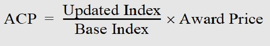

Subpart 552.1 - Instructions for Using Provisions and Clauses
552.101 [Reserved]
552.101-70 Using
Part 552.
(a)Numbering.
(1)GSAR provisions
or clauses which are “substantially” the same as a FAR provision
or clause ( e.g., 552.232-1, Payments) are
identified as follows:
(i)The provision or clause has the
same title as the FAR provision or clause.
(ii)The provision or clause has the
same number as the FAR provision or clause, except the number is
preceded by the number “5”.
(2)GSA prescribed provisions and clauses
( e.g., 552.232-72, Final Payment
Under Building Services Contracts) are numbered in the same manner
as the FAR, except that—
(i)The number is preceded by the number
“5”, and
(ii)The sequential number at the end
of the number of the provision or clause is “70” or a higher number.
(b)Prescriptions. Each provision
or clause in subpart 552.2 is
prescribed at the place in the GSAR where the subject matter of
the provision or clause receives its primary treatment. The prescription
includes all conditions, requirements, and instructions for using
the provision or clause and its alternates, if any. The provision
or clause may be referred to in other GSAM locations.
(c)Introductory text. Within subpart 552.2,
the introductory text of each provision or clause includes a cross-reference to
the location in the GSAR that prescribes its use.
(d)Dates. Since they are subject
to revision from time to time, all GSAR provisions, clauses, and
alternates are dated; e.g., (DEC 1983). To avoid questions concerning
which version of any provision, clause, or alternate is operative
in any given solicitation or contract, its date shall be included
whether it is incorporated by reference or in full text.
552.102 Incorporating
provisions and clauses.
(a)Except for
paragraph (b) of this section, GSAR provisions and clauses should
be incorporated by reference to the maximum practical extent, rather
than being incorporated in full text. Upon request, the contracting
officer shall provide the full text of any GSAR provision or clause
incorporated by reference.
(b)A GSAR provision
or clause should not be incorporated in full text if—
(1)It requires
modification or completion by the Government ( e.g., completion
of blanks in provisions or clauses) (see FAR 52.104 and 552.104);
(2)It requires
completion by the offeror or contractor;
(3)It is identified as a deviation
(see 552.103); or
(4)It is used
with one or more alternates.
552.103 Identification
of provisions and clauses.
(a)General.
When a GSAR provision or clause is used without deviation in a solicitation
or contract, it shall be identified by number, title, and date ( e.g., 552.211-77,
Packing List (FEB 1996)).
(b)Deviations.
(1)Federal
Acquisition Regulation deviations. When a GSAR provision or
clause is used with an authorized deviation in lieu of a FAR provision
or clause in a solicitation or contract, it shall be identified
by number, title, date, and the deviation label ( e.g., 552.232-1,
Payments (NOV 2009) (DEVIATION FAR 52.232-1)). The deviation label
consists of the text “DEVIATION FAR” and the applicable FAR provision
or clause number enclosed in parentheses ( e.g., (DEVIATION
FAR 52.232-1)).
(2)General
Services Administration Acquisition Regulation deviations. When
a GSAR provision or clause is used with an authorized deviation
in a solicitation or contract, it shall be identified by number,
title, date, and the text “(DEVIATION)” inserted after the date
( e.g., 552.232-1, Payments (NOV
2009) (DEVIATION)).
(c)Alternates.
When a GSAR provision or clause is used with an alternate in a solicitation
or contract, it shall be identified by the basic provision or clause
citation and the alternate label ( e.g., 552.211-77,
Packing List (FEB 1996) Alternate I (MAY 2003)). The alternate label
consists of the word “Alternate”, the alternate number, and date
( e.g., Alternate I (MAY 2003)).
552.104 Procedures for modifying and completing provisions and clauses.
(a)
The procedures in FAR 52.104 apply when you modify or complete a GSAR provision or clause. Provisions and clauses shall not be modified unless the GSAR authorizes their modification.
(b)
You do not need to identify modifications of clauses which result from negotiations unless you issue an amendment to the solicitation.
(c)
In general, you should modify FAR or GSAR clauses only for individual cases. If a contracting activity develops a modification for repeated use, furnish a copy to the Office of GSA Acquisition Policy (MV) for potential inclusion in the GSAR.
552.105 Procedures for using alternates.
The procedures in FAR 52.105 apply to GSAR part 552.
552.107 [Reserved]
552.107-70 Provisions and clauses
prescribed in .
GSA has a FAR deviation
that allows use of the following provision and clause in lieu of
the FAR provision at 52.252-5 and the FAR clause at 52.252-6:
(a)Insert
the provision at 552.252-5, Authorized
Deviations in Provisions, in solicitations that include any FAR
or GSAR provision with
an authorized deviation in lieu of the FAR provision at 52.252-5.
(b)Insert the clause at 552.252-6,
Authorized Deviations in Clauses, in solicitations and contracts
that include any FAR or GSAR clause with an authorized deviation
in lieu of the FAR clause at 52.252-6.
Subpart 552.2 - Text of Provisions and Clauses
552.200 Scope of subpart.
This subpart sets forth the text of all GSAR provisions and clauses. It also cross-references the location in the GSAR that prescribes the use of each provision and clause.
552.203 [Reserved]
552.203-5 [Reserved]
552.203-70 [Reserved]
552.203-71 Restriction on Advertising.
As prescribed in 503.570-2, insert the following clause:
Restriction on Advertising (Sep 1999)
The Contractor shall not refer to this contract in commercial advertising or similar promotions in such a manner as to state or imply that the product or service provided is endorsed or preferred by the White House, the Executive Office of the President, or any other element of the Federal Government, or is considered by these entities to be superior to other products or services. Any advertisement by the Contractor, including price-off coupons, that refers to a military resale activity shall contain the following statement: “This advertisement is neither paid for nor sponsored, in whole or in part, by any element of the United States Government.”
(End of clause)
552.204 [Reserved]
552.204-9 Personal
Identity Verification Requirements.
As prescribed in 504.1303,
insert the following clause:
Personal Identity
Verification Requirements (Jul 2021)
(a) The
Contractor shall comply with GSA personal identity verification
requirements, identified in the CIO P 2181.1 GSA HSPD-12 Personal
Identity Verification and Credentialing Handbook, if Contractor
employees require access to GSA controlled facilities or information
systems to perform contract requirements. The Contractor can find
the CIO policy and additional information at https://www.gsa.gov/hspd12.
(b) The Contractor shall
insert this clause in all subcontracts when the subcontractor is
required to have access to a GSA-controlled facility or access to
a GSA-controlled information system.
(End of clause)
552.211 [Reserved]
552.211-8 [Reserved]
552.211-10 Commencement,
Prosecution, and Completion of Work.
As prescribed in
511.404 (b),
insert the following clause:
Commencement,
Prosecution, and Completion of Work (Mar 2019)
FAR 52.211-10, Commencement,
Prosecution, and Completion of Work, is supplemented as follows:
(a)The Contractor
shall not commence work until the Contracting Officer issues a notice
to proceed.
(b)Notwithstanding paragraph (a) of
this clause, the Contractor must submit any required safety plans
before commencing any construction work.
(c)The Contractor shall diligently
prosecute the work so as to achieve substantial completion of the
work within the time specified in the contract. If the contract
specifies different completion dates for different phases or portions
of the work, the Contractor shall diligently prosecute the work
so as to achieve substantial completion of such phases or portions
of the work within the times specified.
(End
of clause)
552.211-12 Liquidated
Damages—Construction.
As prescribed in
511.503(a), insert
the following clause:
Liquidated
Damages—Construction (Mar 2019)
FAR 52.211-12,
Liquidated Damages-Construction, is supplemented as follows:
(a)If the Contractor
fails to achieve substantial completion of the work within the time
specified in the contract, the Contractor shall be liable to the
Government for liquidated damages at the rate specified for each
calendar day following the required completion date that the work
is not substantially complete.
(b)If the contract requires different
completion dates for different phases or portions of the work, the
Contractor shall be liable for liquidated damages at the specified
rate for each calendar day following the required completion date
that the phase or portion of work is not substantially complete.
If a single rate is specified, the specified rate shall be apportioned between
the different phases or portions of the work.
(c)If the Government elects to accept
any portion of the work not specifically designated as a phase or
portion of work with its own required completion date, the liquidated
damage rate shall be apportioned between accepted work and uncompleted
work, and the Contractor's liability for liquidated damages shall
be computed accordingly.
(End
of clause)
552.211-13 Time
Extensions.
As prescribed in
511.503(b), insert
the following clause:
Time
Extensions (Mar 2019)
FAR 52.211-13, Time Extensions,
is supplemented as follows:
(a)If the Contractor
requests an extension of the time for substantial completion, the
Contractor shall base its request on an analysis of time impact
using the project schedule as its baseline, and shall propose as
a new substantial completion date to account for the impact. The
Contractor shall submit a written request to the Contracting Officer
setting forth facts and analysis in sufficient detail to enable
the Contracting Officer to evaluate the Contractor's entitlement
to an extension of time.
(b)The Contractor shall only be entitled
to an extension of time to the extent that-
(1)Substantial completion of the work
is delayed by causes for which the Contractor is not responsible
under this contract; and
(2)The actual or projected substantial
completion date is later than the date required by this contract
for substantial completion.
(c)The Contractor shall not be entitled
to an extension of time if the Contractor has not updated the project
schedule in accordance with the contract.
(d)The Government shall not be liable
for any costs to mitigate time impacts incurred by the Contractor
that occur less than 30 calendar days after the date the Contractor
submits a request for extension of time in compliance with this
clause.
(End
of clause)
552.211-70 Substantial
Completion.
As prescribed in 511.404(b),
insert the following clause:
Substantial
Completion (Mar 2019)
(a)General.
(1)For the purposes of FAR 52.211-10,
Commencement, Prosecution and Completion of Work, and FAR 52.211-12,
Liquidated Damages-Construction, the work shall be deemed complete
when it is “substantially complete.”
(2)There may be different completion
dates required for different phases or portions of the work, as
established in the contract. However, the work shall be deemed “substantially
complete” if and only if the Contractor has completed the work and
related contract obligations in accordance with the contract documents,
such that the Government may enjoy the intended access, occupancy,
possession, and use of the entire work without impairment due to
incomplete or deficient work, and without interference from the
Contractor's completion of remaining work or correction of deficiencies in
completed work.
(3)In no event shall the work be deemed
“substantially complete” if all fire and life safety systems are
not tested and accepted by the authority having jurisdiction, where
such acceptance is required under the contract.
(4)Unless otherwise specifically noted,
or otherwise clear from context, all references in the contract
to “acceptance” shall refer to issuance of a written determination
of substantial completion by the Contracting Officer.
(b)Notice
of Substantial Completion.
(1)With reasonable advance notice,
the Contractor shall submit to the Contracting Officer a written
proposal recommending a substantial completion date.
(2)If the Contracting Officer takes
exception to the notice of substantial completion, the Contractor
shall be entitled to a written notice of conditions precluding determination
of substantial completion. The Contractor shall only be entitled
to an extension of time to address such conditions if, and to the
extent that, the Contracting Officer provides notice of such conditions
more than 30 calendar days after receipt of the notice of substantial
completion.
(c)Acceptance
of Substantial Completion.
(1)The Contracting Officer shall conduct
inspections and make a determination of substantial completion within
a reasonable time.
(2)Substantial Completion shall be
established by the Contracting Officer's issuance of a written determination
specifying the date upon which the work is substantially complete.
(d)Contract Completion.
(1)The Contract is complete if and
only if the Contractor has completed all work and related contract
obligations, corrected all deficiencies and all punch list items,
and complied with all conditions for final payment.
(2)The Contractor shall not be entitled
to final payment or release of any retainage held by the Government
until after contract completion. If the Contractor does not achieve
contract completion within the time required by this contract, the
Government shall be entitled, after providing notice to the Contractor,
to complete any work remaining unfinished. The Contractor shall
be liable to the Government for all costs incurred by the Government
to complete such work.
(End
of clause)
552.211-71 [Reserved]
552.211-72 Reference to Specifications in Drawings.
As prescribed in 511.204(a), insert the following clause:
References to Specifications in Drawings (Feb 1996)
If military or other drawings are made a part of this contract, any reference in the drawings to Federal specifications or standards will be considered to be a reference to the date of such Federal specification or standard identified in the contract. If the date of the Federal specification or standard is not identified in the contract, the edition, including revisions thereto, in effect on the date the solicitation is issued will apply.
(End of clause)
552.211-73 Marking.
As prescribed in 511.204(b)(1),
insert the following clause:
Marking (Feb 1996)
(a)General
requirements. Interior packages, if any, and exterior shipping
containers shall be marked as specified elsewhere in the contract.
Additional marking requirements may be specified on delivery orders
issued under the contract. If not otherwise specified, interior
packages and exterior shipping containers shall be marked in accordance
with the following standards:
(1)Deliveries to civilian
activities. Supplies shall be marked in accordance with Federal
Standard 123, edition in effect on the date of issuance of the solicitation.
(2)Deliveries to military
activities. Supplies shall be marked in accordance with Military
Standard 129, edition in effect on the date of issuance of the solicitation.
(b)Improperly marked
material. When Government inspection and acceptance are at destination,
and delivered supplies are not marked in accordance with contract
requirements, the Government has the right, without prior notice
to the Contractor, to perform the required marking, by contract
or otherwise, and charge the Contractor therefore at the rate specified elsewhere
in this contract. This right is not exclusive, and is in addition
to other rights or remedies provided for in this contract.
(End of
clause)
552.211-74 [Reserved]
552.211-75 Preservation, Packaging, and Packing.
As prescribed in 511.204(b)(2), insert the following clause:
Preservation, Packaging, and Packing (Feb 1996)
Unless otherwise specified, all items shall be preserved, packaged, and packed in accordance with normal commercial practices, as defined in the applicable commodity specification. Packaging and packing shall comply with the requirements of the Uniform Freight Classification and the National Motor Freight Classification (issue in effect at time of shipment) and each shipping container of each item in a shipment shall be of uniform size and content, except for residual quantities. Where special or unusual packing is specified in an order, but not specifically provided for by the contract, such packing details must be the subject of an agreement independently arrived at between the ordering agency and the Contractor.
(End of clause)
Alternate I (MAY
2003). As prescribed at 511.204(b)(2), substitute the following sentence for the last sentence of the basic clause:
Where special or unusual packing is specified in an order, but not specifically provided for by the contract, such packing details must be the subject of an agreement independently arrived at between the ordering activity and the Contractor.
552.211-76
Charges for Packaging, Packing,
and Marking.
As prescribed in 511.204(b)(3),
insert a clause substantially as follows:
Charges for Packaging, Packing,
and Marking (Jan 2010)
If supplies shipped to a GSA
wholesale distribution center are not packaged, packed and marked
in accordance with contract requirements, the Government has the
right, without prior notice to the Contractor, to perform the required
repackaging/repacking/remarking, by contract or otherwise, and charge
the Contractor therefore at the rate of $___* per man-hour or fraction
thereof. The Contractor will also be charged for material costs,
if incurred. This right is not exclusive, and is in addition to
other rights or remedies provided for in this contract.
*The rate to be inserted in the
above clause shall be determined by the Commissioner, Federal Acquisition
Service, or a designee.
(End
of clause)
552.211-77 Packing
List.
As prescribed in 511.204(c)
insert the following clause:
Packing
List (Feb 1996)
(a)A packing
list or other suitable shipping document shall accompany each shipment
and shall indicate:
(1)Name and address of the consignor;
(2)Name and complete address of the
consignee;
(3)Government order or requisition
number;
(4)Government bill of lading number
covering the shipment (if any); and
(5)Description of the material shipped,
including item number, quantity, number of containers, and package
number (if any).
(b)When payment will be made by Government
commercial credit card, in addition to the information in (a) above,
the packing list or shipping document shall include:
(1)Cardholder
name and telephone number and
(2)The term “Credit Card.”
(End
of clause)
Alternate I (MAY
2003). As
prescribed at 511.204(c),
substitute the following paragraphs (a)(3) and (b) for (a)(3) and
(b) of the basic clause:
(a)(3)
Ordering activity order or requisition number;
(b) When payment will be made by Ordering
activity commercial credit card, in addition to the information
in (a) above, the packing list or shipping document shall include:
(c)Cardholder
name and telephone number; and
(d)The term “Credit Card.”
552.211-78 [Reserved]
552.211-79 Acceptable
Age of Supplies.
As prescribed in 511.404(a)(1),
insert the following clause:
Acceptable
Age of Supplies (Feb 1996)
The supplies furnished under
this contract shall not be more than _____ months old, beginning
with the first full month after the date of manufacture marked on
the container. For the purpose of this clause, supplies shall be
considered to be furnished (1)when they are offered to the Government
for inspection and testing, or (2)on the date of shipment if shipment is
authorized to be made without prior inspection by the Government.
If the age of the supplies furnished under this contract is greater
than the specified period, the Government may exercise its right
to reject the supplies.
(End
of clause)
Alternate
I
(FEB
1996). As
prescribed in 511.404(a)(1)(i), substitute
the following sentence for the first sentence of the basic clause:
The supplies furnished under
this contract shall not be more than Enter value:Enter value:Enter
value:_____ days
old, beginning with the date of manufacture (month, day, year) marked
on the container.
552.211-80 Age on Delivery.
As prescribed in
511.404(a)(1) insert the following clause:
Age on Delivery (Feb 1996)
Included in the description of each shelf-life item is a statement regarding the “age on delivery.” The age of the item(s) shall not exceed the number of months shown in the item description, counted from the first day of the month after the month of manufacture to the date of delivery to the specified delivery point(s). If the age of the supplies delivered under this contract is greater than the number of months shown, the Government may exercise its right to reject the supplies.
(End of clause)
552.211-81 Time
of Shipment.
As prescribed in
511.404(a)(2),
insert the following clause:
Time
of Shipment (Feb 1996)
Shipment is required within_____ calendar
days after receipt of order.
(End
of clause)
Alternate
I
(FEB 1996). As prescribed
in 511.404(a)(2), add the
following paragraph to the basic clause:
Each delivery order will specify that shipment
is required no later than the number of days shown above. If such
order also states that “Early Shipment is Precluded,” the Contractor
agrees to make shipment no sooner than _____ calendar days after
receipt of order. Earlier shipments may result in nonacceptance
of the supplies at the delivery point at the time of arrival.
(The second
number to be inserted should be 15calendar days less than the first
number.)
552.211-82 [Reserved]
552.211-83 Availability
for Inspection, Testing, and Shipment/Delivery.
As prescribed in
511.404(a)(3),
insert the following clause:
Availability
for Inspection, Testing, and Shipment/Delivery (Feb 1996)
(a)The Government
requires that the supplies be made avail-able for inspection and
testing within _____
[Insert
“shipped” or “delivered”]
_____* calendar days after
receipt of
[Insert “Notice of Award” or “order”]
,
and be _____
[Insert
“shipped” or “delivered”]
_____within _____
[Insert
“shipped” or “delivered”]
_____* calendar days after
receipt of (1)notice of approval and release by the Government inspector
or (2)authorization to ship without Government inspection.
(b)Failure
to make supplies available for inspection and testing or to [Insert
“ship” or “deliver”] as required by this clause may result
in termination of this contract for default.
(End of clause)
Alternate I (FEB
1996). As prescribed in 511.404(a)(3), add the
following paragraph (b) to the basic clause and redesignate paragraph
(b) of the basic clause accordingly.
(b)If notice of approval and
release by the Government inspector or authorization to ship without
Government inspection is received before _____
_____
[Insert
“Notice of Award” or “order”]
_____* calendar days after
receipt of the
[Insert “Notice of Award” or “order”]
, receipt
of such notice shall be deemed to be received on the _____
_____
[Insert “Notice
of Award” or “order”]
_____* calendar day after
receipt of _____
_____
[Insert
“Notice of Award” or “order”]
_____. Shipments shall not
be made before the _____
_____
[Insert
“Notice of Award” or “order”]
_____* calendar day after
receipt of the
[Insert “Notice of Award”
or “order”] unless authorized in writing by the Contracting
Officer.
*Entries
are normally the same number of days specified for availability.
552.211-84 [Reserved]
552.211-85
Consistent Pack and Package Requirements.
As prescribed in 511.204(b)(4), insert the following clause:
Consistent Pack and Package Requirements (Jan 2010)
The Contractor is advised that the Government will, where possible, order in full shipping containers and/or unitized loads. If volume warrants, the Government may also order in truckload or carload quantities provided such quantities do not exceed the maximum order limitation of this contract.
When the number of items per unit container, intermediate container and/or shipping container is not specified for an item, the offeror will state, in the spaces provided in the schedule of items, the number of items to be provided in each container. The quantities which are accepted at the time of award shall remain in effect throughout the term of the contract unless the Contracting Officer approves in writing a request by the Contractor to change the package quantities. Requests for changes shall be directed to the Contracting Officer or Administrative Contracting Officer, whichever is applicable.
(End of clause)
552.211-86 Maximum
Weight per Shipping Container.
As prescribed in 511.204(b)(5),
insert the following clause:
Maximum Weight per
Shipping Container (Jan 2010)
In no instance shall the weight of a shipping
container and its contents exceed 23 kilograms (51 pounds), except
when caused by—
(a) The
weight of a single item within the shipping container;
(b) A prescribed quantity
per pack for an item per shipping container; or
(c) A definite weight limitation
set forth in the purchase description.
(End of clause)
552.211-87
Export Packing.
As prescribed in 511.204(b)(6), insert the following clause:
Export Packing (Jan 2010)
(a)Offerors are requested to quote, in the pricelist accompanying their offer (or by separate attachment), additional charges or net prices covering delivery of the items furnished with commercial or military export packing. Military export packing, if offered, shall be in accordance with Mil-Std-2073-1 Level A or B as specified. If commercial export packing is offered, the offer or pricelist shall include detailed specifications describing the packing to be furnished at the price quoted.
(b)Ordering activities will not be obligated to utilize the Contractor’s services for export packing accepted under this solicitation, and they may obtain such services elsewhere if desired. However, the Contractor shall furnish items export packed when such packing is specified on the purchase order.
(End of clause)
552.211-88
Vehicle Export Preparation.
As prescribed in 511.204(b)(7), insert the following clause:
Vehicle Export Preparation (Jan 2010)
Vehicles shall be prepared for export on wheels, unboxed, unless otherwise specified in the Schedule of Items. All parts and equipment easily removable (subject to pilferage) shall be enclosed in a box substantially secured to the vehicle (inside body if feasible) in such a manner as to minimize the possibility of loss or damage while in transit to ultimate destination.
(End of clause)
552.211-89 Non-manufactured Wood Packaging Material for Export.
As prescribed in 511.204(b)(8), insert the following clause:
Non-Manufactured Wood Packaging Material for Export (Jul 2016)
(a)Definitions:
IPPC Country: Countries of the European Union (EU) or any other country endorsing the International Plant Protection Convention (IPPC) “Guidelines for Regulating Wood Packaging Material in International Trade,” approved March 15, 2002. A listing of countries participating in the IPPC is found athttp://www.aphis.usda.gov/import_export/plants/plant_exports/wpm/country/index.shtml.
Non-manufactured wood, is also called solid wood and defined as wood packing other than that comprised wholly of wood-based products such as plywood, particle board, oriented strand board, veneer, wood wool, and similar materials, which has been created using glue, heat and pressure or a combination thereof.
Packaged material, and solid wood packing material (SWPM), for purposes of this clause, is defined as each separate and distinct material that by itself or in combination with other materials forms the container providing a means of protecting and handling a product. This includes, but is not limited to, pallets, dunnage, crating, packing blocks, drums, load boards, pallet collars, and skids.
(b)Non-manufactured wood pallets and other non-manufactured wood packaging material used to pack items for delivery to or through IPPC countries must be marked and properly treated in accordance with IPPC guidelines.
(c)This requirement applies whether the shipment is direct to the end user or through a Government designated consolidation point. Packaging that does not conform to IPPC guidelines will be refused entry, destroyed or treated prior to entry.
(d)For Department of Defense distribution facilities or freight consolidation points, all non-manufactured wood pallets or packaging material with a probability of entering countries endorsing the IPPC Guidelines must be treated and marked in accordance with DLAD 47.305-1 (available at http://farsite.hill.af.mil/archive/Dlad/Rev5/PART47.htm),and MIL-STD-2073-1, Standard Practice for Military Packaging (and any future revision).
(e)Pallets and packing material shipped to FAS distribution facilities designated for possible delivery to the countries endorsing the IPPC Guidelines will comply with DLAD 47.305-1, and MIL-STD-2073-1.
(f)Delays in delivery caused by non-complying pallets or wood package material will not be considered as beyond the control of the Contractor. Any applicable Government expense incurred as a result of the Contractor’s failure to provide appropriate pallets or package material shall be reimbursed by the Contractor. Expenses may include the applicable cost for repackaging, handling and return shipping, or the destruction of solid wood packaging material.
(End of clause)
552.211-90
Small Parts.
As prescribed in 511.204(b)(9), insert the following clause:
Small Parts (Jan 2010)
All small parts required to be furnished with machines covered by contracts resulting from this solicitation shall be packed in envelopes, sealed, identified with part numbers and quantity on outside of envelopes. Larger parts must be individually tagged and identified with part number on face of tag.
(End of clause)
552.211-91
Vehicle Decals, Stickers, and Data Plates.
As prescribed in 511.204(b)(10), insert the following clause:
Vehicle Decals, Stickers, and Data Plates (Jan2010)
Unless otherwise specified, caution plates/decals shall be conspicuously installed for all equipment requiring such notices. Vehicles for civil agencies shall be provided with the manufacturer’s current warranty legend imprinted on decalcomania, and applied in a visible area of the engine compartment. In addition, a decal or sticker shall provide at least the following information: contract number; purchase order number; date of delivery, month and year; and the warranty time, in month and miles.
(End of clause)
552.211-92
Radio Frequency Identification (RFID) Using Passive Tags.
As prescribed in 511.204(b)(11), insert the following clause:
Radio Frequency Identification (RFID) Using Passive Tags (Jan 2010)
Radio Frequency Identification shall be required on all non-bulk shipments to the Defense Logistics Agency (DLA) or Department of Defense (DoD) destinations. Shipments shall be tagged in accordance with 48 CFR clause 252.211-7006. Shipments to GSA Distribution Centers with final destinations to DLA and DoD shall be in compliance to 48 CFR 252.211-7006. Copies may be obtained from http://www.access.gpo.gov/nara/cfr/cfr-table-search.html.
(End of clause)
552.211-93 [Reserved]
552.211-94
Time of Delivery.
As prescribed at
511.404(a)(4),
insert the following clause:
Time
of Delivery (Jan 2010)
An “X” mark in the left hand
block shall be considered a mandatory requirement to be fulfilled
by the contractor.
The Contractor
will ship contract item(s) to the Federal Acquisition Service (FAS)
stocking points identified in the delivery order at its discretion
in order to maintain the required stock levels within the minimum
and maximum requirements provided in the weekly status report.
Enter value:
Delivery
is required to be made at destination within *Enter value:______*
calendar days after receipt of order for deliveries to a GSA facility.
Enter value:
Orders under
this contract may require direct delivery to other agencies. Orders
for direct delivery must be shipped and delivered within the time
specified in blocks below.
Enter value:
Shipment
must be made with *Enter value:________* days after receipt
of order.
Enter value:
In addition
to block above the Contractor must also ensure that delivery will
be made within *Enter value:__________* days after receipt
of order.
(End
of clause)
552.212 [Reserved]
552.212-4
Contract Terms and Conditions—Commercial Products
and Commercial Services (FAR DEVIATION).
As prescribed in 512.301(e),
replace subparagraph (g)(2), paragraph (s), and paragraph (u) of
FAR clause 52.212-4. Also, add paragraph (w) to FAR clause 52.212-4:
Contract Terms and Conditions—Commercial
Products and Commercial Services (FAR DEVIATION) (JAN 2022)
Alternate II (FAR Deviation) (Nov 2009).
When a commercial item contract is contemplated and the contract
will include the clause at FAR 52.212-4, insert this Alternate II
instead of subparagraph (g)(2) of the FAR clause.
(g)(2) The due date for making invoice payments
by the designated payment office is the later of the following two
events:
(i) The
10th day after the designated billing office receives a proper invoice
from the Contractor. If the designated billing office fails to annotate
the invoice with the date of receipt at the time of receipt, the
invoice payment due date shall be the 10th day after the date of
the Contractor’s invoice; provided the Contractor submitted a proper
invoice and no disagreement exists over quantity, quality, or Contractor
compliance with contract requirements.
(ii) The
10th day after Government acceptance of supplies delivered or services
performed by the Contractor.
(s) Order of precedence. Any inconsistencies
in this solicitation or contract shall be resolved by giving precedence
in the following order:
(1) The
schedule of supplies/services.
(2) The Assignments, Disputes, Payments,
Invoice, Other Compliances, Compliance with Laws Unique to Government
Contracts, Unauthorized Obligations, and Commercial Supplier Agreements
- Unenforceable Clauses paragraphs of this clause.
(3) The clause at 52.212-5.
(4) Addenda to this solicitation or
contract, including any commercial supplier agreements as amended
by the Commercial Supplier Agreements -Unenforceable Clauses provision.
(5) Solicitation provisions if this
is a solicitation.
(6) Other paragraphs of this clause.
(7) The Standard Form 1449.
(8) Other documents, exhibits, and
attachments.
(9) The specification.
(u) Unauthorized Obligations.
(1) Except
as stated in paragraph (u)(2) of this clause, when any supply or
service acquired under this contract is subject to any commercial
supplier agreement (as defined in 502.101)
that includes any language, provision, or clause requiring the Government
to pay any future fees, penalties, interest, legal costs or to indemnify
the Contractor or any person or entity for damages, costs, fees,
or any other loss or liability that would create an Anti-Deficiency
Act violation (31 U.S.C. 1341), the
following shall govern:
(i) Any
such language, provision, or clause is unenforceable against the
Government.
(ii) Neither the Government nor any
Government authorized end user shall be deemed to have agreed to
such clause by virtue of it appearing in the commercial supplier
agreement. If the commercial supplier agreement is invoked through
an “I agree” click box or other comparable mechanism (e.g., “click-wrap”
or “browse-wrap” agreements), execution does not bind the Government
or any Government authorized end user to such clause.
(iii) Any such language, provision,
or clause is deemed to be stricken from the commercial supplier
agreement.
(2) Paragraph (u)(1) of this clause
does not apply to indemnification or any other payment by the Government
that is expressly authorized by statute and specifically authorized
under applicable agency regulations and procedures.
(w) Commercial supplier agreements
unenforceable clauses.When any supply or service acquired under
this contract is subject to a commercial supplier agreement (as
defined in 502.101), the following
language shall be deemed incorporated into the commercial supplier
agreement. As used herein, “this agreement” means the commercial
supplier agreement:
(1) Notwithstanding
any other provision of this agreement, when the end user is an agency
or instrumentality of the U.S. Government, the following shall apply:
(i)Applicability.
This agreement is a part of a contract between the commercial supplier
and the U.S. Government for the acquisition of the supply or service
that necessitates a license or other similar legal instrument (including all
contracts, task orders, and delivery orders under FAR 12).
(ii)End user. This
agreement shall bind the ordering activity as end user but shall
not operate to bind a Government employee or person acting on behalf
of the Government in his or her personal capacity.
(iii)Law and disputes.
This agreement is governed by Federal law.
(A) Any language purporting to subject
the U.S. Government to the laws of a U.S. state, U.S. territory,
district, or municipality, or a foreign nation, except where Federal
law expressly provides for the application of such laws, is hereby
deleted.
(B) Any language requiring dispute
resolution in a specific forum or venue that is different from that
prescribed by applicable Federal law is hereby deleted.
(C) Any language prescribing a different
time period for bringing an action than that prescribed by applicable Federal
law in relation to a dispute is hereby deleted.
(iv)Continued performance.
The supplier or licensor shall not unilaterally revoke, terminate
or suspend any rights granted to the Government except as allowed
by this contract. If the supplier or licensor believes the ordering
activity to be in breach of the agreement, it shall pursue its rights
under the Contract Disputes Act or other applicable Federal statute
while continuing performance as set forth in subparagraph (d) (Disputes).
(v)Arbitration; equitable
or injunctive relief. In the event of a claim or dispute arising
under or relating to this agreement, a binding arbitration shall
not be used unless specifically authorized by agency guidance, and
equitable or injunctive relief, including the award of attorney
fees, costs or interest, may be awarded against the U.S. Government
only when explicitly provided by statute (e.g., Prompt Payment Act
or Equal Access to Justice Act).
(vi) Updating terms.
(A) After award,
the contractor may unilaterally revise commercial supplier agreement
terms: if they are not material. A material change is defined as:
(1) Terms that
change Government rights or obligations;
(2) Terms that increase Government
prices;
(3) Terms that decrease overall level
of service; or
(4) Terms that limit any other Government
right addressed elsewhere in this contract.
(B) For revisions that will materially
change the terms of the contract, the revised commercial supplier
agreement must be incorporated into the contract using a bilateral
modification.
(C) Any agreement license terms or
conditions unilaterally revised subsequent to award that are inconsistent with
any material term or provision of this contract shall not be enforceable
against the Government, and the Government shall not be deemed to
have consented to them.
(vii)No automatic renewals.
If any license or service tied to periodic payment is provided under
this agreement (e.g., annual software maintenance or annual lease
term), such license or service shall not renew automatically upon
expiration of its current term without prior express consent by
an authorized Government representative.
(viii) Indemnification. Any clause
of this agreement requiring the commercial supplier or licensor
to defend or indemnify the end user is hereby amended to provide
that the U.S. Department of Justice has the sole right to represent
the United States in any such action, in accordance with 28 U.S.C. 516.
(ix)Audits. Any
clause of this agreement permitting the commercial supplier or licensor
to audit the end user's compliance with this agreement is hereby
amended as follows:
(A) Discrepancies
found in an audit may result in a charge by the commercial supplier
or licensor to the ordering activity. Any resulting invoice must
comply with the proper invoicing requirements specified in the underlying Government
contract or order.
(B) This charge, if disputed by the
ordering activity, will be resolved in accordance with subparagraph
(d) (Disputes) through the Disputes clause at 552.212-4(d); no payment
obligation shall arise on the part of the ordering activity until
the conclusion of the dispute process.
(C) Any audit requested by the contractor
will be performed at the contractor's expense, without reimbursement by
the Government.
(x)Taxes or surcharges.
Any taxes or surcharges which the commercial supplier or licensor
seeks to pass along to the Government as end user will be governed
by the terms of the underlying Government contract or order and, in
any event, must be submitted to the Contracting Officer for a determination
of applicability prior to invoicing unless specifically agreed to
otherwise in the Government contract.
(xi)Non-assignment.
This agreement may not be assigned, nor may any rights or obligations
thereunder be delegated, without the Government's prior approval,
except as expressly permitted under subparagraph (b) of this clause.
(xii)Confidential information.
If this agreement includes a confidentiality clause, such clause
is hereby amended to state that neither the agreement nor the contract
price list, as applicable, shall be deemed “confidential information.”
Issues regarding release of “unit pricing” will be resolved consistent
with the Freedom of Information Act. Notwithstanding anything in
this agreement to the contrary, the Government may retain any confidential
information as required by law, regulation or its internal document
retention procedures for legal, regulatory or compliance purposes;
provided, however, that all such retained confidential information
will continue to be subject to the confidentiality obligations of
this agreement.
(2) If any language, provision,
or clause of this agreement conflicts or is inconsistent with the
preceding paragraph (w)(1), the language, provisions, or clause
of paragraph (w)(1) shall prevail to the extent of such inconsistency.
(End of clause)
552.212-70 [Reserved]
552.212-71
Contract Terms and Conditions
Applicable to GSA Acquisitions of Commercial Products and Commercial Services.
As prescribed in 512.301(a)(1),
insert the following clause:
Contract Terms and Conditions
Applicable to GSA Acquisitions of Commercial Products and Commercial
Services (JAN 2022)
(a)The Contractor
agrees to comply with any clause that is incorporated herein by
reference to implement agency policy applicable to acquisition of
commercial products, including
commercial components, and commercial services. The clause
in effect based on the applicable regulation cited on the date the
solicitation is issued applies unless otherwise stated herein. The GSAR clauses in
paragraph (b) of this section are incorporated by reference:
[The Contracting
Officer should check the clauses that apply or delete the clauses
that do not apply from the list. The Contracting Officer may add
the date of the clause if desired for clarity.]
552.212-72
Contract Terms and Conditions
Required To Implement Statutes or Executive Orders Applicable to
GSA Acquisition of Commercial Products and Commercial Services.
As prescribed in 512.301(a)(2),
insert the following clause:
Contract Terms and Conditions
Required To Implement Statutes or Executive Orders Applicable to
GSA Acquisition of Commercial Products and Commercial Services (JAN
2022)
The Contractor agrees to comply
with any provision or clause that is incorporated herein by reference
to implement provisions of law or Executive Orders applicable to
acquisition of commercial
products, including commercial components, and commercial services or
components. The provision or clause in effect based on the applicable
regulation cited on the date the solicitation is issued applies
unless otherwise stated herein. The following provisions and clauses
are incorporated by reference:
[The contracting
officer should either check the provisions and clauses that apply
or delete the provisions and clauses that do not apply from the
list. The contracting officer may add the date of the provision
or clause if desired for clarity.]
Identification
of Products That Have Environmental Attributes.
(End of clause)
552.212-73 [Reserved]
552.214 [Reserved]
552.214-70 “All
or None” Bids.
As prescribed in 514.201-6,
insert the following provision:
“All or None” Bids
(Oct 2009)
(a)
The
Government reserves the right to evaluate bids and make awards on
an “all or none” basis as provided below.
A bid submitted on an “all or none” or similar
basis will be evaluated as follows: The lowest acceptable bid exclusive
of the “all or none” bid will be selected with respect to each item
(or group of items when the solicitation provides for aggregate
awards) and the total cost of all items thus determined shall be
compared with the total of the lowest acceptable “all or none” bid.
Award will be made to result in the lowest total cost to the Government.
(End of provision)
552.214-71 [Reserved]
552.214-72 Bid
Sample Requirements.
As prescribed in 514.202-4(a)(3),
insert the following provision:
Bid Sample Requirements
(Oct 2009)
This provision supplements FAR52.214-20, which
is incorporated by reference. Samples shall be from the production
of the manufacturer whose products will be supplied under resultant
contracts.
(a)
Two
bid samples are required for each of the following items in this
solicitation:
(b)
Two representative samples
shall be submitted for each of the following items upon which a
bid is submitted:
Items
Acceptable
Representative Samples
NOTE:
Bidders that propose to furnish an item or group of items from more
than one manufacturer or production point must submit two samples
from the production of each manufacturer or production point.
(c)
Samples will be evaluated
to determine compliance with all characteristics listed below:
Subjective
Characteristics
Objective
Characteristics
(d)
Forward samples addressed
to the Sample Room indicated below. Except for samples delivered
by U.S. Mail, deliveries will be accepted between the hours of _______________ Mondays
through Fridays, official holidays excluded.
CAUTION: USE PROPER ADDRESS FOR METHOD
OF SHIPMENT SELECTED.
Mail
and Parcel Post
[Insert
Address of Bid Sample Room]
Freight
or Express
[Insert
address of Bid Sample Room]
(e)
Contracting Officer
insert address.
(End of provision)
552.215 [Reserved]
552.215-70 Examination
of Records by GSA.
As prescribed in 515.209-70(a)
insert the following clause:
Examination of Records
by GSA (Jun 2016)
The Contractor agrees that the Administrator
of General Services or any duly authorized representatives shall,
until the expiration of 3 years after final payment under this contract,
or of the time periods for the particular records specified in Subpart
4.7 of the Federal Acquisition Regulation (48 CFR 4.7), whichever
expires earlier, have access to and the right to examine any books, documents,
papers, and records of the Contractor involving transactions related
to this contract or compliance with any clauses thereunder. The
Contractor further agrees to include in all its subcontracts hereunder
a provision to the effect that the subcontractor agrees that the
Administrator of General Services or any authorized representatives
shall, until the expiration of 3 years after final payment under
the subcontract, or of the time periods for the particular records
specified in Subpart 4.7 of the Federal Acquisition Regulation (48
CFR 4.7), whichever expires earlier, have access to and the right
to examine any books, documents, papers, and records of such subcontractor
involving transactions related to the subcontract or compliance
with any clauses thereunder. The term “subcontract” as used in this
clause excludes (a) purchase orders not exceeding the simplified
acquisition threshold and (b) subcontracts or purchase orders for
public utility services at rates established for uniform applicability
to the general public.
(End of clause)
552.215-71 [Reserved]
552.215-72 Price
Adjustment—Failure to Provide Accurate Information.
As prescribed in 515.408(d),
insert the following clause:
Price Adjustment—Failure
to Provide AccurateInformation (Aug 1997)
(a)
The
Government, at its election, may reduce the price of this contract
or contract modification if the Contracting Officer determines after
award of this contract or contract modification that the price negotiated
was increased by a significant amount because the Contractor failed
to:
(1)
Provide
information required by this solicitation/contract or otherwise
requested by the Government; or
(2)
Submit information that
was current, accurate, and complete; or
(3)
Disclose changes in
the Contractor’s commercial pricelist(s), discounts or discounting
policies which occurred after the original submission and prior
to the completion of negotiations.
(b)
The Government will
consider information submitted to be current, accurate and complete
if the data is current, accurate and complete as of 14 calendar
days prior to the date it is submitted.
(c)
If any reduction in
the contract price under this clause reduces the price for items
for which payment was made prior to the date of the modification
reflecting the price reduction, the Contractor shall be liable to
and shall pay the United States—
(1)
The amount of the overpayment;
and
(2)
Simple interest on
the amount of such overpayment to be computed from the date(s) of
overpayment to the Contractor to the date the Government is repaid
by the Contractor at the applicable underpayment rate effective
each quarter prescribed by the Secretary of Treasury under 26 U.S.C.6621(a)(2).
(d)
Failure to agree on
the amount of the decrease shall be resolved as a dispute.
(e)
In addition to the remedy
in paragraph (a) of this clause, the Government may terminate this
contract for default. The rights and remedies of the Government
specified herein are not exclusive, and are in addition to any other
rights and remedies provided by law or under this contract.
(End of clause)
552.215-73 Notice.
As prescribed in 515.209-70(c),
insert the following clause:
Notice (Jul 2016)
(a)The
information collection requirements contained in this solicitation/contract
are either required by regulation or approved by the Office of Management
and Budget pursuant to the Paperwork Reduction Act and assigned
OMB Control No. 3090-0163.
(b)GSA’s hours of operation are 8:00
a.m. to 4:30 p.m. Requests for pre-award debriefings postmarked
or otherwise submitted after 4:30 p.m. will be considered submitted
the following business day. Requests for post-award debriefings
delivered after 4:30 p.m. will be considered received and filed
the following business day.
(End of clause)
552.216 [Reserved]
552.216-70 Economic
Price Adjustment—FSS Multiple Award Schedule Contracts.
As prescribed in 516.203-4(a),
insert the following clause:
Economic Price Adjustment—FSS
Multiple Award Schedule Contracts (Sep 1999)
Price adjustments include price increases and
price decreases. Adjustments will be considered as follows:
(a)
Contractors
shall submit price decreases anytime during the contract period
in which they occur. Price decreases will be handled in accordance
with the provisions of the Price Reduction Clause.
(b)
Contractors may request
price increases under the following conditions:
(1)
Increases resulting
from a reissue or other modification of the Contractor’s commercial
catalog/pricelist that was used as the basis for the contract award.
(2)
Only three increases
will be considered during the contract period.
(3)
Increases are requested
after the first 30days of the contract period and prior to the last
60days of the contract period.
(4)
At least 30days elapse
between requested increases.
(c)
The aggregate of the
increases in any contract unit price under this clause shall not
exceed
* percent of the original
contract unit price. The Government reserves the right to raise
this ceiling where changes in market conditions during the contract
period support an increase.
(d)
The following material
shall be submitted with the request for a price increase:
(1)
A
copy of the commercial catalog/pricelist showing the price increase
and the effective date for commercial customers.
(2)
Commercial Sales Practice
format regarding the Contractor’s commercial pricing practice relating
to the reissued or modified catalog/price- list, or a certification
that no change has occurred in the data since completion of the
initial negotiation or a subsequent submission.
(3)
Documentation supporting
the reasonableness of the price increase.
(e)
The Government reserves
the right to exercise one of the following options:
(1)
Accept
the Contractor’s price increases as requested when all conditions
of (b), (c), and (d) of this clause are satisfied;
(2)
Negotiate more favorable
discounts from the new commercial prices when the total increase
requested is not supported; or,
(3)
Remove the product(s)
from contract involved pursuant to the Cancellation Clause of this
contract, when the increase requested is not supported.
(f)
The contract modification
reflecting the price adjustment shall be signed by the Government
and made effective upon receipt of notification from the Contractor
that the new catalog/pricelist has been mailed to the addressees
previously furnished by the Contracting Officer, provided that in
no event shall such price adjustment be effective prior to the effective date
of the commercial price increases. The increased contract prices
shall apply to delivery orders issued to the Contractor on or after
the effective date of the contract modification.
*Insert the percent appropriate
at the time the solicitation is issued. This percentage should normally
be 10 percent, unless based on a trend established by an appropriate
index such as the Producer Prices and Price Index during the most
recent 6-month period indicates that a different percentage is more
appropriate. Any ceiling other than 10 percent must be approved
by the contracting director.
(End of clause)
Alternate I (Sep 1999). As prescribed
by 516.203-4(a)(2), substitute
the following for paragraphs (b) and (c) of the clause:
(b) Contractors may request price
increases to be effective on or after the first 12 months of the
contract period providing all of the following conditions are met:
(1)
Increases
resulting from a reissue or other modification of the Contractor’s
commercial catalog/pricelist that was used as the basis for the
contract award.
(2)
No more than three increases
will be considered during each succeeding 12-month period of the
contract.(For succeeding contract periods of less than 12months,
up to three increases will be considered subject to the other conditions of
this paragraph (b)).
(3)
Increases are requested
before the last 60days of the contract period.
(4)
At least 30 days elapse
between requested increases.
(c) Any contract period during which
price increases will be considered, the aggregate of the increases
during any 12-month period shall not exceed _____*
percent of the contract unit price in effect at the end of the preceding
12-month period. The Government reserves the right to raise the
ceiling when market conditions during the contract period support
such a change.
*Insert the percentage
appropriate at the time the solicitation is issued. This percentage
should be determined based on the trend established by an appropriate
index such as the Producer Prices and Price Index. A ceiling of
more than 10percent must be approved by the Contracting Director.
552.216-71 Economic
Price Adjustment—Special Order Program Contracts.
As prescribed in 516.203-4(a),
insert the following clause:
Economic Price Adjustment—Special
Order Program Contracts (Aug 2010)
(a)
“Producer
Price Index” (PPI), as used in this clause, means the originally
released index, not seasonally adjusted, published by the Bureau
of Labor Statistics, U.S. Department of Labor (Labor) for product
code _____ found
under Table _____
(b)
During the term of the
contract, the award price may be adjusted once during each 12-month
period upward or downward. However, if an upward adjustment, a maximum
of _____*
percent shall apply. Any price adjustment for the product code shall
be based upon the percentage change in the PPI released in the month
prior to the initial month of the contract period specified in the solicitation
for sealed bidding or the month prior to award in negotiation (the
base index) and the PPI released 12months later (the updated index).
The formula for determining the Adjusted Contract Price (ACP) applicable
to shipments for the balance of the contract period is—

(c)
If the PPI is not available
for the month of the base index or the updated index, the month
with the most recently published PPI prior to the month determining
the base index or updated index shall be used.
(d)
If a product code is
discontinued, the Government and the Contractor will mutually agree
to substitute a similar product code. If Labor designates an index
with a new title and/or code number as continuous with the product
code specified above, the new index shall be used.
(e)
Unless the Contractor’s
written request for a price adjustment resulting from the application
of the formula in paragraph (b) of this clause is received by the
Contracting Officer within 30calendar days of the release of the
updated index, the Contractor shall have waived its right to an
upward price adjustment for the balance of the contract. Alternatively,
the Contracting Officer will unilaterally adjust the award price
downward when appropriate using the updated index defined in paragraph
(b) of this clause.
(f)
Price adjustments shall
be effective upon execution of a contract modification by the Government
or on the 31st— day following the release of the updated
index, whichever is later, shall indicate the updated index and
percent of change as well as the ACP, and shall not apply to delivery
orders issued before the effective date.
(End of clause)
Alternate I (Aug 2010). As
prescribed in 516.203-4(a)(1) and (2),
substitute the following paragraphs (b), (e), and (f) for paragraphs
(b), (e), and (f) of the basic clause:
(b) Once
during each 12-month period, the contract price may be adjusted
upward or downward a maximum of _____* percent.
(1) For the first
option period, any price adjustment for the product code shall be
based upon the percentage change in the PPI released in the month
prior to the initial month of the contract period specified in the
solicitation for sealed bidding or the month prior to award in negotiation
(the base index) and the PPI released in the third month before
completion of the initial contract period stated in the solicitation
(the updated index). This initial contract period may be less than
12months. The formula for determining the Adjusted Contract Price
(ACP) applicable to shipments during the first option period is—
(2) For
any subsequent option period, the price adjustment shall be the
percentage change between the previously updated index (the new
base index) and the PPI released 12months later (the most recent
updated index). This percentage shall be applied to the Current
Contract Price (CCP). The formula for determining the ACP applicable
to shipments for the subsequent option period(s) is—
(e) Unless
the Contractor’s written request for a price adjustment resulting
from the application of the formulas in paragraphs (b)(1) or (2)
of this clause is received by the Contracting Officer within 30
calendar days of the date of the Government’s preliminary written
notice of its intent to exercise the option, the Contractors shall
have waived its right to an upward price adjustment for that option
period. Alternatively, the Contracting Officer in its written notice
shall exercise the option at the CCP or at a reduced price when
appropriate using the formulas in paragraphs (b)(1) or (2) of this
clause.
(f) Price
adjustments shall be effected by execution of a contract modification
by the Government indicating the most recent updated index and percent
of change and shall apply to delivery orders placed on or after
the first day of the option period.
Alternate
II (Aug2010). As prescribed in 516.203-4(a)(2),
add the following paragraph (g) to the basic clause.
(g) No price adjustment will be
made unless the percentage change in the PPI is at least _____*
percent.
The Contracting
Officer should insert a lower percent than the maximum percentage
stated in paragraph (b) of the clause.
552.216-72 Placement
of Orders.
As prescribed in 516.506(a),
insert the following clause:
Placement of Orders
(Jan 2016)
(a)
Delivery
orders (orders) will be placed by:
[Contracting
Officer insert names of Federal agencies]
(b)
Orders may be placed
through Electronic Data Interchange (EDI) or mailed in paper form.
EDI orders shall be placed using the American National Standards
Institute (ANSI) X12 Standard for Electronic Data Interchange (EDI)
format.
(c)
If the Contractor agrees,
General Services Administration’s Federal Acquisition Service (FAS)
will place all orders by EDI using computer-to-computer EDI. If
computer-to-computer EDI is not possible, FAS will use an alternative
EDI method allowing the Contractor to receive orders by facsimile
transmission. Subject to the Contractor’s agreement, other agencies
may place orders by EDI.
(d)
When computer-to-computer
EDI procedures will be used to place orders, the Contractor shall
enter into one or more Trading Partner Agreements (TPA) with each
Federal agency placing orders electronically in order to ensure
mutual understanding by the parties of certain electronic transaction
conventions and to recognize the rights and responsibilities of
the parties as they apply to this method of placing orders. The
TPA must identify, among other things, the third party provider(s)
through which electronic orders are placed, the transaction sets
used, security procedures, and guidelines for implementation. Federal
agencies may obtain a sample format to customize as needed from
the office specified in paragraph (g) of this clause.
(e)
The Contractor shall
be responsible for providing its own hardware and software necessary
to transmit and receive data electronically. Additionally, each
party to the TPA shall be responsible for the costs associated with
its use of third party provider services.
(f)
Nothing in the TPA will
invalidate any part of this contract between the Contractor and
the General Services Administration. All terms and conditions of
this contract that otherwise would be applicable to a mailed order
shall apply to the electronic order.
(g)
The
basic content and format of the TPA will be provided by: General
Services Administration, Office of the Chief Information Officer
(I). Contact information can be found at: http://www.gsa.gov/portal/category/21404.
(End of clause)
Alternate I (Aug2010). As prescribed
in 516.506(a),
substitute the following paragraphs (a), (b), (c), and (d) for paragraphs
(a), (b), (c), and (d) of the basic clause:
(a) All delivery orders (orders)
under this contract will be placed by the General Services Administration’s
Federal Acquisition Service (FAS). The Contractor is not authorized
to accept orders from any other agency. Violation of this restriction
may result in termination of the contract pursuant to the default
clause of this contract.
(b) All orders shall be placed by
Electronic Data Interchange (EDI) using the American National Standards
Institute (ANSI) X12 Standard for Electronic Data Interchange (EDI)
format.
(c) If the Contractor agrees, transmission
will be computer-to-computer EDI. If computer-to-computer EDI is
not possible, FAS will use an alternative EDI method allowing the
Contractor to receive orders by facsimile transmission.
(d) When computer-to-computer EDI
procedures will be used to place orders, the Contractor shall enter
into a Trading Partner Agreement (TPA) with FAS in order to ensure
mutual understanding by the parties of certain electronic transaction
conventions and to recognize the rights and responsibilities of
the parties as they apply to this method of placing orders. The
TPA must identify, among other things, the third party provider(s)
through which electronic orders are placed, the transaction sets
used, security procedures, and guidelines for implementation.
552.216-73 Ordering
Information.
As prescribed in 516.506 (b),
insert the following provision:
Ordering
Information (Aug 2010)
(a)In accordance
with the Placement of Orders clause of this solicitation, the offeror
elects to receive orders placed by GSA’s Federal Acquisition Service
(FAS) by either facsimile transmission
or computer-to-computer
Electronic Data Interchange (EDI).
(b)An offeror electing to receive
computer-to-computer EDI is requested to indicate below the name,
address, and telephone number of the representative to be contacted
regarding establishment of an EDI interface.
Enter value:
(c)An offeror electing to receive
orders by facsimile transmission is requested to indicate below
the telephone number(s) for facsimile transmission equipment where
orders should be forwarded.
Enter value:
(d)For mailed orders, the offeror
is requested to include the postal mailing address(es) where paper
form orders should be mailed.
Enter value:
(e)Offerors marketing through dealers
are requested to indicate below whether those dealers will be participating
in the proposed contract.
YES NO
If “yes” is checked, ordering
information to be inserted above shall reflect that in addition
to offeror’s name, address, and facsimile transmission telephone
number, orders can be addressed to the offeror’s name, c/o nearest
local dealer. In this event, two copies of a list of participating
dealers shall accompany this offer, and shall also be included in
Contractor’s Federal Supply Schedule pricelist.
(End of provision)
Alternate
I (Sep 1999). As prescribed in 516.506 (b),
delete paragraph (d) of the basic
provision and redesignate paragraph (e) accordingly.
552.216-74
[Reserved]
552.216-75 Transactional Data Reporting.
As prescribed in 516.506 (c), insert the following clause:
Transactional Data Reporting (Jun 2016)
(a)Definition. “Transactional data” encompasses the historical details of the products or services delivered by the Contractor during the performance of task or delivery orders issued against this contract.
(b)Reporting of Transactional Data. The Contractor must report all transactional data under this contract as follows:
(1)The Contractor must electronically report transactional data by utilizing the automated reporting system at an Internet website designated by the General Services Administration (GSA) or by uploading the data according to GSA instructions. GSA will post registration instructions and reporting procedures on the Vendor Support Center website, https://vsc.gsa.gov. The reporting system website address, as well as registration instructions and reporting procedures, will be provided at the time of award or inclusion of this clause in the contract.
(2)The Contractor must provide, at no additional cost to the Government, the following transactional data elements, as applicable:
(i)Contract or Blanket Purchase Agreement (BPA) Number.
(ii)Delivery/Task Order Number/Procurement Instrument Identifier (PIID).
(iii)Non Federal Entity.
(iv)Description of Deliverable.
(v)Manufacturer Name.
(vi)Manufacturer Part Number.
(vii)Unit Measure (each, hour, case, lot).
(viii)Quantity of Item Sold.
(ix)Universal Product Code.
(x)Price Paid per Unit.
(xi)Total Price.
Note to paragraph (b)(2): The Contracting Officer may add data elements to the standard elements listed in paragraph (b)(2) of this section with the approvals listed in GSAM 507.105.
(3)The Contractor must report transactional data within 30 calendar days from the last calendar day of the month. If there was no contract activity during the month, the Contractor must submit a confirmation of no reportable transactional data within 30 calendar days of the last calendar day of the month.
(4)The Contractor must report the price paid per unit, total price, or any other data elements with an associated monetary value listed in (b)(2) of this section, in U.S. dollars.
(5)The Contractor must maintain a consistent accounting method of transactional data reporting, based on the Contractor's established commercial accounting practice.
(6)Reporting Points.
(i)The acceptable points at which transactional data may be reported include–
(A)Issuance of an invoice; or
(B)Receipt of payment.
(ii)The Contractor must determine whether to report transactional data on the basis of invoices issued or payments received.
(7)The Contractor must continue to furnish reports, including confirmation of no transactional data, through physical completion of the last outstanding task or delivery order issued against the contract.
(8)Unless otherwise expressly stated by the ordering activity, orders that contain classified information or other information that would compromise national security are exempt from this reporting requirement.
(9)This clause does not exempt the Contractor from fulfilling existing reporting requirements contained elsewhere in the contract.
(10)GSA reserves the unilateral right to change reporting instructions following 60 calendar days’ advance notification to the Contractor.
(c)Contract Access Fee (CAF).
(1)GSA’s operating costs are reimbursed through a CAF charged on orders placed against this contract. The CAF is paid by the ordering activity but remitted to GSA by the Contractor. GSA has the unilateral right to change the fee structure at any time, but not more than once per year; GSA will provide reasonable notice prior to the effective date of any change.
(2)Within 60 calendar days of award or inclusion of this clause in the contract, a GSA representative will provide the Contractor with specific written procedural instructions on remitting the CAF, including the deadline by which the Contractor must remit the CAF. The deadline specified in the written procedural instructions will be no less than 30 calendar days after the last calendar day of the month. GSA reserves the unilateral right to change remittance instructions following 60 calendar days’ advance notification to the Contractor.
(3)The Contractor must remit the CAF to GSA in U.S. dollars.
(4)The Contractor’s failure to remit the full amount of the CAF within the specified deadline constitutes a contract debt to the United States Government under the terms of FAR Subpart 32.6. The Government may exercise all rights under the Debt Collection Improvement Act of 1996, including withholding or offsetting payments and interest on the debt (see FAR clause 52.232-17, Interest). If the Contractor fails to submit the required sales reports, falsifies them, or fails to timely pay the CAF, these reasons constitute sufficient cause for the Government to terminate the contract for cause.
(End of clause)
552.216-76
[Reserved]
552.217 [Reserved]
552.217-70 Evaluation
of Options.
As prescribed in 517.208(a),
insert the following provision:
Evaluation of Options
(Jul 2016)
(a)
The
Government will evaluate offers for award purposes by determining
the lowest base period price. When option year pricing is based
on a formula (e.g.,changes in the Producer Price Index or
other common standard), option year pricing is automatically considered
when evaluating the base year price, as any change in price will
be uniformly related to changes in market conditions. All options
are therefore considered to be evaluated. Evaluation of options
will not obligate the Government to exercise the option(s).
(b)
The Government will
reject the offer if exceptions are taken to the price provisions
of the Economic Price Adjustment clause, unless the exception results
in a lower maximum option year price. Such offers will be evaluated
without regard to the lower option year(s) maximum. However, if
the offeror offering a lower maximum is awarded a contract, the
award will reflect the lower maximum.
(End of provision)
552.217-71 Notice
Regarding Option(s).
As prescribed in 517.208(b),
insert the following provision:
Notice Regarding
Option(s) (Nov 1992)
The General Services Administration (GSA) has
included an option to
[Insert “purchase additional
quantities of supplies or services” or “extend the term of this
contract” or “purchase additional quantities of supplies or services
and to extend the term of this contract”]
in order to
demonstrate the value it places on quality performance by providing
a mechanism for continuing a contractual relationship with a successful
Offeror that performs at a level which meets or exceeds GSA’s quality
performance expectations as communicated to the Contractor, in writing,
by the Contracting Officer or designated representative. When deciding
whether to exercise the option, the Contracting Officer will consider
the quality of the Contractor’s past performance under this contract
in accordance with 48CFR517.207.
(End of provision)
552.219 [Reserved]
552.219-70 Allocation
of Orders—Partially Set-aside Items.
As prescribed in
519.507
, insert the
following clause:
Allocation
of Orders—Partially Set-Aside Items (Sep 1999)
Where the set-aside portion of
an item or group of items is awarded to a Contractor other than
the one receiving the award on the corresponding non-set-aside portion,
the Government will divide the requirements to be ordered between
the two Contractors with the objective of achieving, as nearly as
possible, a 50/50 division of the total value of orders placed after
the award of the set-aside portion. In no case will this division
vary by more than a 60/40 division (with either the non-set-aside
or set-aside Contractor receiving the larger portion) from the time
of the award of the set-aside portion.
(End
of clause)
552.219-74 Section8(a)Direct
Award.
As prescribed in
519.870-2(a), insert
the following clause:
Section
8(a) Direct Award (Sep 1999)
(a)This
contract is issued as a direct award between the contracting activity
and the 8(a)Contractor pursuant to the Memorandum of Understanding
between the Small Business Administration (SBA) and the General
Services Administration. SBA retains the responsibility for 8(a)certifications,
8(a)eligibility determinations, and related issues, and will provide counseling
and assistance to the 8(a)contractor under the 8(a)program. The
cognizant SBA district office is:
[Complete at time of award]
(b)The contracting activity is responsible
for administering the contract and taking any action on behalf of
the Government under the terms and conditions of the contract. However,
the contracting activity shall give advance notice to SBA before it
issues a final notice terminating performance, either in whole or
in part, under the contract. The contracting activity shall also
coordinate with SBA prior to processing any advance payments or
novation agreements. The contracting activity may assign contract
administration functions to a contract administration office.
(c)The
Contractor agrees:
(1)To notify the Contracting Officer,
simultaneous with its notification to SBA (as required by SBA’s
8(a)regulations), when the owner or owners upon whom 8(a)eligibility
is based plan to relinquish ownership or control of the concern. Consistent
with 15 U.S.C. 637(a)(21), transfer of ownership or control shall
result in termination of the contract for convenience, unless SBA
waives the requirement for termination prior to the actual relinquishing
of ownership and control.
(2)To the requirements of 52.219-14,
Limitations on Subcontracting.
(End of clause)
552.223 [Reserved]
552.223-70 Hazardous
Substances.
As prescribed in 523.303(a),
insert the following clause:
Hazardous Substances
(May 1989)
(a)
If
the packaged items to be delivered under this contract are of a
hazardous substance and ordinarily are intended or considered to
be for use as a household item, this contract is subject to the
Federal Hazardous Materials Act, as amended (15 U.S.C.1261-1276),
implementing regulations thereof (16CFRChapterII), and Federal Standard
No.123, Marking for Shipment (Civil Agencies), issue in effect on
the date of this solicitation.
(b)
The packaged items to
be delivered under this contract are subject to the preparation
of shipping documents, the preparation of items for transportation,
shipping container construction, package making, package labeling,
when required, shipper’s certification of compliance, and transport
vehicle placarding in accordance with Parts171 through 178 of 49CFRand the
Hazardous Materials Transportation Act.
(c)
The minimum packaging
acceptable for packaging Department of Transportation regulated
hazardous materials shall be those in 49CFR173.
(End of clause)
552.223-71 Nonconforming
Hazardous Materials.
As prescribed in 523.303(b),
insert the following clause:
Nonconforming Hazardous
Materials (Sep 1999)
(a)
Nonconforming
supplies that contain hazardous material or that may expose persons
who handle or transport the supplies to hazardous material and which
require replacement under the inspection and/or warranty clauses
of this contract shall be reshipped to the Contractor at the Contractor’s
expense. The Contractor agrees to accept return of these nonconforming
supplies and to pay all costs occasioned by their return.
(b)
“Hazardous materials,”
as used in this clause, includes any material defined as hazardous
under the latest version of Federal Standard No.313 (including revisions
adopted during the term of the contract).
(c)
If the Contractor fails
to provide acceptable disposition instructions for the nonconforming
supplies within 10days from the date of the Government’s request
(or such longer period as may be agreed to between the Contracting
Officer and the Contractor), or fails to accept return of the reshipped
nonconforming supplies, such failure:
(1)
May be interpreted as
a willful failure to perform,
(2)
May result in termination
of the contract for default and
(3)
Shall be considered by the Contracting
Officer in determining the responsibility of the Contractor for
any future award (see FAR9.104-3(b) and 9.406-2).
(d)
Pending final resolution
of any dispute, the Contractor shall promptly comply with the decision
of the Contracting Officer.
(End of clause)
552.223-72 Hazardous
Material Information.
As prescribed in 523.370,
insert the following provision:
Hazardous Material
Information (Sep 1999)
Offeror shall indicate for each national stock
number (NSN) the following information:
NSN
DOT
Shipping Name
DOT
Hazard Class
DOT
Label Required
Yes[]No[]
Yes[]No[]
Yes[]No[]
(End of provision)
552.223-73 Preservation,
Packaging, Packing, Marking, and Labeling of Hazardous Materials
(HAZMAT) For Shipments.
As prescribed in 523.303(c),
insert the following clause:
Preservation, Packaging,
Packing, Marking, and Labeling of Hazardous Materials (HAZMAT) For
Shipments (Jun 2015)
(a)Definition.
“United States,” as used in this clause, means the 48 adjoining
U.S. States, Alaska, Hawaii, and U.S. territories and possessions,
such as Puerto Rico.
(b)
Preservation, packaging,
packing, marking, and labeling of hazardous materials for export
shipment outside the United States in all transport modes shall
comply with the following, as applicable:
(1)
International Maritime
Dangerous Goods (IMDG) Code as established by the International
Maritime Organization (IMO).
(2)
U.S. Department of Transportation
(DOT) Hazardous Material Regulation (HMR) 49 CFR parts 171 through
180. (Note: Classifications permitted by the HMR, but not permitted
by the IMDG code, such as Consumer Commodities classed as ORM-D,
shall be packaged in accordance with the IMDG Code and dual-marked
with both Consumer Commodity and IMDG marking and labeling.)
(3)
Occupational Safety and Health
Administration (OSHA) Regulation 29 CFR 1910.1200.
(4)
International Air Transport
Association (IATA), Dangerous Goods Regulation and/or International
Civil Aviation Organization (ICAO), Technical Instructions.
(5)
AFMAN 24-204, Air Force
Inter-Service Manual, Preparing Hazardous Materials For Military
Air Shipments.
(6)
Any preservation, packaging,
packing, marking, and labeling requirements contained elsewhere
in this solicitation and contract.
(c)
Preservation, packaging,
packing, marking, and labeling of hazardous materials for domestic
shipments within the United States in all transport modes shall
comply with the following; as applicable:
(1)
U.S. Department of Transportation
(DOT) Hazardous Material Regulation (HMR) 49 CFR parts 171 through
180.
(2)
Occupational Safety and Health
Administration (OSHA) Regulation 29 CFR 1910.1200.
(3)
Any preservation, packaging,
packing, marking, and labeling requirements contained elsewhere
in this solicitation and contract.
(d)
Hazardous Material Packages
designated for outside the United States destinations through Forwarding
Points, Distribution Centers, or Container Consolidation Points
(CCPs) shall comply with the IMDG, IATA, ICAO or AFMAN 24-204 codes,
as applicable.
(e)
The test certification
data showing compliance with performance-oriented packaging or UN-approved
packaging requirements shall be made available to GSA contract administration/management
representatives or regulatory inspectors upon request.
(End of clause)
552.227 [Reserved]
552.227-70 Government
Rights (Unlimited).
As prescribed in
527.409(a),
insert the following clause:
Government Rights (Unlimited)
(May 1989)(Deviation FAR 52.227-17)
The Government shall have unlimited
rights in all drawings, designs, specifications, notes and other
works developed in the performance of this contract, including the
right to use same on any other Government design or construction
without additional compensation to the Contractor. The Contractor
hereby grants to the Government a paid-up license throughout the
world to all such works to which he may assert or establish any
claim under design patent or copyright laws. The Contractor for
a period of threeyears after completion of the project agrees to
furnish the original or copies of all such works on the request
of the Contracting Officer.
(End
of clause)
552.227-71 Drawings
and Other Data to Become Property of Government.
As prescribed in
527.409
(b),
substitute the following clause:
Drawings and Other Data
to Become Property of Government (MAY 1989)(Deviation FAR 52.227-17)
All designs, drawings, specifications,
notes and other works developed in the performance of this contract
shall become the sole property of the Government and may be used
on any other design or construction without additional compensation
to the Contractor. The Government shall be considered the “person
for whom the work was prepared” for the purpose of authorship in
any copyrightable work under Section201(b) of Title17, United States
Code. With respect thereto, the Contractor agrees not to assert
or authorize others to assert any rights nor establish any claim
under the design patent or copyright laws. The Contractor for a
period of threeyears after completion of the project agrees to furnish
all retained works on the request of the Contracting Officer. Unless
otherwise provided in this contract, the Contractor shall have the
right to retain copies of works beyond such period.
(End
of clause)
552.228 [Reserved]
552.228-5 Government as Additional Insured.
As prescribed in 528.310, insert the following clause:
Government as Additional Insured (Jan2016)
(a)
This clause supplements the requirements set forth in FAR clause 52.228-5, Insurance–Work on a Government Installation.
(b)
Each insurance policy required under this contract, other than workers’ compensation insurance, shall contain an endorsement naming the United States as an additional insured with respect to operations performed under this contract. The insurance carrier is required to waive all subrogation rights against any of the named insured.
(End of clause)
552.229 [Reserved]
552.229-70 Federal,
State, and Local Taxes.
As prescribed in
529.470(a), insert
the following clause:
Federal,
State, and Local Taxes (Apr 1984)
The contract price includes all
applicable Federal, State, and local taxes. No adjustment will be
made to cover taxes which may subsequently be imposed on this transaction
or changes in the rates of currently applicable taxes. However,
the Government will, upon the request of the Contractor, furnish
evidence appropriate to establish exemption from any tax from which
the Government is exempt and which was not included in the contract
price.
(End
of clause)
552.229-71 Federal
Excise Tax—DC Government.
As prescribed in
529.470(b), insert
the following clause:
Federal
Excise Tax—DC Government (Sep 1999)
If the District of Columbia cites
an Internal Revenue Tax Exempt Certificate Number on orders placed
under this contract, the Contractor shall bill shipments to the
District of Columbia at prices exclusive of Federal excise tax and
show the amount of such tax on the invoice.
(End
of clause)
552.232 [Reserved]
552.232-1 Payments.
As prescribed in
532.111
(a), insert the following
clause:
Payments
(Nov 2009) (Deviation FAR 52.232-1)
(a)The Government
shall pay the Contractor, without submission of invoices or vouchers,
30 days after the service period, the prices stipulated in this
contract for supplies delivered and accepted or services rendered
and accepted, less any deductions provided in this contract.
(b)Unless otherwise
specified in this contract, the Government will make payment on
partial deliveries accepted by the Government if either:
(1)The amount
due on the deliveries warrants it.
(2)The Contractor requests it and
the amount due on the deliveries is at least $1,000 or 50percent
of the total contract price.
(c)When processing payment, GSA’s
Finance Office will automatically generate the 12 digit invoice
number using the PDN assigned to the contract, followed by an abbreviated
month and year of service (e.g., 84261554JUN7, for June 2007). The
PDN appears on the contract award document.
(End
of clause)
552.232-5 Payments
under Fixed-Price Construction
As prescribed in
532.111(b),
insert the following clause:
Payments
under Fixed-Price Construction (Mar 2019)
FAR 52.232-5, Payments under
Fixed-Price Construction Contracts, is supplemented as follows:
(a)Before submitting
a request for payment, the Contractor shall, unless directed otherwise
by the Contracting Officer, attend pre-invoice payment meetings,
as scheduled, with the designated Government representative for
the purpose of facilitating review and approval of payment requests.
Payment meetings will be conducted and may be in person. The Contractor
shall provide documentation to support the prospective payment request.
(b)The Contractor shall submit its
invoices to the Contracting Officer, unless directed otherwise by
the Contracting Officer. Separate payment requests shall be submitted
for progress payments, payments of retainage, and partial or final
payments.
(c)The Contractor shall use GSA Form
2419 Certification of Progress Payments Under Fixed-Price Construction
Contracts to provide the certification required under FAR 52.232-5(c).
(d)The Contractor shall use GSA Form
1142 Release of Claims to provide the certification required
under FAR 52.232-5(h).
(e)If an invoice does not meet the
requirements of FAR 52.232-27 and GSAM 552.232-27, the Contracting
Officer may return the invoice to the Contractor without payment
for correction. If the Contracting Officer disputes the requested
payment amount, the Government may pay the portion of the requested
payment that is undisputed.
(f)GSA will not be obligated to issue
final payment unless the Contractor has furnished to the Contracting
Officer a release of claims against the Government relating to the
contract, and submitted all required product warranties, as-built
drawings, operating manuals, and other items as specified in the
contract. The Contractor may reserve from the release specific claims only
if such claims are explicitly identified with stated claim amounts.
(End
of clause)
552.232-23 Assignment of Claims.
As prescribed in 532.806, insert the following clause:
Assignment of Claims (Sep1999)
Because this is a requirements or indefinite quantity contract under which more than one agency may place orders, paragraph(a) of the Assignment of Claims clause (FAR52.232-23) is inapplicable and the following is substituted therefor:
In order to prevent confusion and delay in making payment, the Contractor shall not assign any claim(s) for amounts due or to become due under this contract. However, the Contractor is permitted to assign separately to a bank, trust company, or other financial institution, including any Federal lending agency, under the provisions of the Assignment of Claims Act, as amended, 31 U.S.C. 3727, 41 U.S.C. 15 (hereinafter referred to as “the Act”), all amounts due or to become due under any order amounting to $1,000 or more issued by any Government agency under this contract. Any such assignment takes effect only if and when the assignee files written notice of the assignment together with a true copy of the instrument of assignment with the contracting officer issuing the order and the finance office designated in the order to make payment. Unless otherwise stated in the order, payments to an assignee of any amounts due or to become due under any order assigned may, to the extent specified in the Act, be subject to reduction or set-off.
(End of clause)
552.232-25 Prompt
Payment.
As prescribed in 532.908(b)(2),
insert the following clause:
Prompt Payment (JAN 2022)
(Deviation FAR 52.232-25)
Notwithstanding any other payment
clause in this contract, the Government will make invoice payments
and contract financing payments under the terms and conditions specified
in this clause. Payment shall be considered as being made on the
day a check is dated or the date of an electronic funds transfer.
Definitions of pertinent terms are set forth in section 32.902 of
the Federal Acquisition Regulation. All days referred to in this
clause are calendar days, unless otherwise specified. (However,
see paragraph 552.232-25 Prompt Payment. of this clause
concerning payments due on Saturdays, Sundays, and legal holidays.)
(a)Invoice
payments.
(1)The due date for making invoice
payments by the designated payment office is:
(i)For orders placed electronically
by the General Services Administration (GSA) Federal Acquisition
Service (FAS), and to be paid by GSA through electronic funds transfer
(EFT), the later of the following two events:
(A)The 10th day after the designated
billing office receives a proper invoice from the Contractor. If
the designated billing office fails to annotate the invoice with
the date of receipt at the time of receipt, the invoice payment due
date shall be the 10th day after the date of the Contractor's invoice;
provided the Contractor submitted a proper invoice and no disagreement
exists over quantity, quality, or Contractor compliance with contract requirements.
(B)The 10th day after Government acceptance
of supplies delivered or services performed by the Contractor.
(ii)For all other orders, the later
of the following two events:
(A)The 30th day after the designated
billing office receives a proper invoice from the Contractor. If
the designated billing office fails to annotate the invoice with
the date of receipt at the time of receipt, the invoice payment due
date shall be the 30th day after the date of the Contractor's invoice;
provided the Contractor submitted a proper invoice and no disagreement
exists over quantity, quality, or Contractor compliance with contract requirements.
(B)The 30th day after Government acceptance
of supplies delivered or services performed by the Contractor.
(iii)On a final invoice, if the payment
amount is subject to contract settlement actions, acceptance occurs
on the effective date of the contract settlement.
(2)The General Services Administration
will issue payment on the due date in paragraph (a)(1)(i) of this
clause if the Contractor complies with full cycle electronic commerce.
Full cycle electronic commerce includes all the following elements:
(i)The
Contractor must receive and fulfill electronic data interchange
(EDI) purchase orders (transaction set 850).
(ii)The Contractor must generate and
submit to the Government valid EDI invoices (transaction set 810)
or submit invoices through the GSA Finance Center Internet-based
invoice process. Internet-based invoices must be submitted using
procedures provided by GSA.
(iii)The Contractor’s financial institution
must receive and process, on behalf of the Contractor, EFT payments through
the Automated Clearing House (ACH) system.
(iv)The EDI transaction sets in paragraphs
(a)(2)(i) through (a)(2)(iii) of this clause must adhere to implementation conventions
provided by GSA.
(3)If any of the conditions in paragraph
(a)(2) of this clause do not occur, the 10 day payment due dates
in (a)(1) become 30 day payment due dates.
(4)Certain
food products and other payments.
(i)Due dates on Contractor invoices
for meat, meat food products, or fish; perishable agricultural commodities;
and dairy products, edible fats or oils, and food products prepared from
edible fats or oils are—
(A)For meat or meat food products,
as defined in section 2(a)(3) of the Packers and Stockyard Act of
1921 (7 U.S.C. 182(3)),
and as further defined in Pub.L. 98-181, including any edible fresh
or frozen poultry meat, any perishable poultry meat food product,
fresh eggs, and any perishable egg product, as close as possible
to, but not later than, the 7thday after product delivery.
(B)For fresh or frozen fish, as defined
in section 204(3) of the Fish and Seafood Promotion Act of1986 (16 U.S.C. 4003(3)),
as close as possible to, but not later than, the 7thday after product
delivery.
(C)For perishable agricultural commodities,
as defined in section 1(4) of the Perishable Agricultural Commodities
Act of 1930 (7 U.S.C. 499a(4)),
as close as possible to, but not later than, the 10th day after
product delivery, unless another date is specified in the contract.
(D)For dairy products, as defined
in section 111(e) of the Dairy Production Stabilization Act of1983
(7 U.S.C. 4502(e)),
edible fats or oils, and food products prepared from edible fats
or oils, as close as possible to, but not later than, the 10th day
after the date on which a proper invoice has been received. Liquid
milk, cheese, certain processed cheese products, butter, yogurt,
ice cream, mayonnaise, salad dressings, and other similar products, fall
within this classification. Nothing in the Act limits this classification
to refrigerated products. When questions arise regarding the proper
classification of a specific product, prevailing industry practices
will be followed in specifying a contract payment due date. The
burden of proof that a classification of a specific product is,
in fact, prevailing industry practice is upon the Contractor making
the representation.
(ii)If the contract does not require
submission of an invoice for payment (e.g.,periodic lease
payments), the due date will be as specified in the contract.
(5)Contractor’s
invoice. The Contractor shall prepare and submit invoices to
the designated billing office specified in the contract. Notwithstanding
paragraph (g) of the clause at FAR 52.212-4, Contract Terms and
Conditions—Commercial Products
and Commercial Services, if the Contractor submits hard-copy
invoices, submit only an original invoice. No copies of the invoice
are required. A proper invoice must include the items listed in
paragraphs (a)(5)(i) through (a)(5)(viii) of this clause. If the
invoice does not comply with these requirements, it shall be returned
within 7 days after the date the designated billing office received
the invoice (3 days for meat, meat food products, or fish; 5days for
perishable agricultural commodities, edible fats or oils, and food
products prepared from edible fats or oils), with a statement of
the reasons why it is not a proper invoice. Untimely notification
will be taken into account in computing any interest penalty owed
the Contractor in the manner described in paragraph (a)(5) of this
clause.
(i)Name
and address of the Contractor.
(ii)Invoice date. (The Contractor
is encouraged to date invoices as close as possible to the date
of the mailing or transmission.)
(iii)Contract number or other authorization
for supplies delivered or services performed (including order number and
contract line item number).
(iv)Description, quantity, unit of
measure, unit price, and extended price of supplies delivered or
services performed.
(v)Shipping and payment terms (e.g.,shipment
number and date of shipment, prompt payment discount terms). Bill of
lading number and weight of shipment will be shown for shipments
on Government bills of lading.
(vi)Name and address of Contractor
official to whom payment is to be sent (must be the same as that
in the contract or in a proper notice of assignment).
(vii)Name (where practicable), title,
phone number, and mailing address of person to be notified in the
event of a defective invoice.
(viii)Any other information or documentation
required by the contract (such as evidence of shipment).
(ix)While not required, the Contractor
is strongly encouraged to assign an identification number to each
invoice.
(6)Interest penalty. An interest
penalty shall be paid automatically by the designated payment office,
without request from the Contractor, if payment is not made by the
due date and the conditions listed in paragraphs (a)(6)(i) through (a)(6)(iii)
of this clause are met, if applicable. However, when the due date
falls on a Saturday, Sunday, or legal holiday when Federal Government
offices are closed and Government business is not expected to be
conducted, payment may be made on the following business day without
incurring a late payment interest penalty.
(i)A proper invoice was received by
the designated billing office.
(ii)A receiving report or other Government
documentation authorizing payment was processed, and there was no disagreement
over quantity, quality, or Contractor compliance with any contract
term or condition.
(iii)In the case of a final invoice
for any balance of funds due the Contractor for supplies delivered
or services performed, the amount was not subject to further contract
settlement actions between the Government and the Contractor.
(7)Computing
penalty amount. The interest penalty shall be at the rate established
by the Secretary of the Treasury under section 12 of the Contract
Disputes Act of 1978 (41 U.S.C. 611) that
is in effect on the day after the due date, except where the interest
penalty is prescribed by other governmental authority (e.g.,tariffs).
This rate is referred to as the “Renegotiation Board Interest Rate,”
and it is published in the Federal Register semiannually on or about
January 1 and July 1. The interest penalty shall accrue daily on
the invoice principal payment amount approved by the Government
until the payment date of such approved principal amount; and will
be compounded in 30-day increments inclusive from the first day
after the due date through the payment date. That is, interest accrued
at the end of any 30-day period will be added to the approved invoice
principal payment amount and will be subject to interest penalties
if not paid in the succeeding 30-day period. If the designated billing
office failed to notify the Contractor of a defective invoice within
the periods prescribed in paragraph 552.232-25 Prompt Payment. of this clause,
the due date on the corrected invoice will be adjusted by subtracting
from such date the number of days taken beyond the prescribed notification
of defects period. Any interest penalty owed the Contractor will
be based on this adjusted due date. Adjustments will be made by
the designated payment office for errors in calculating interest
penalties.
(i)For
the sole purpose of computing an interest penalty that might be
due the Contractor, Government acceptance shall be deemed to have
occurred constructively on the 7th day (unless otherwise specified
in this contract) after the Contractor delivered the supplies or
performed the services in accordance with the terms and conditions
of the contract, unless there is a disagreement over quantity, quality,
or Contractor compliance with a contract provision. In the event
that actual acceptance occurs within the constructive acceptance
period, the determination of an interest penalty shall be based
on the actual date of acceptance. The constructive acceptance requirement
does not, however, compel Government officials to accept supplies
or services, perform contract administration functions, or make
payment prior to fulfilling their responsibilities.
(ii)The following periods of time
will not be included in the determination of an interest penalty:
(A)The
period taken to notify the Contractor of defects in invoices submitted
to the Government, but this may not exceed 7 days (3 days for meat,
meat food products, or fish; 5days for perishable agricultural commodities, dairy
products, edible fats or oils, and food products prepared from edible
fats or oils).
(B)The period between the defects
notice and resubmission of the corrected invoice by the Contractor.
(C)For incorrect electronic funds
transfer (EFT) information, in accordance with the EFT clause of
this contract.
(iii)Interest penalties will not continue
to accrue after the filing of a claim for such penalties under the
clause at 52.233-1, Disputes, or for more than 1 year. Interest
penalties of less than $1 need not be paid.
(iv)Interest penalties are not required
on payment delays due to disagreement between the Government and
the Contractor over the payment amount or other issues involving
contract compliance or on amounts temporarily withheld or retained
in accordance with the terms of the contract. Claims involving disputes,
and any interest that may be payable, will be resolved in accordance
with the clause at 52.233-1, Disputes.
(8)Prompt payment discounts. An interest
penalty also shall be paid automatically by the designated payment
office, without request from the Contractor, if a discount for prompt
payment is taken improperly. The interest penalty will be calculated
as described in paragraph 552.232-25 Prompt Payment. of this clause
on the amount of discount taken for the period beginning with the
first day after the end of the discount period through the date
when the Contractor is paid.
(9)Additional
interest penalty.
(i)If this contract was awarded on
or after October 1,1989, a penalty amount, calculated in accordance
with paragraph (a)(9)(iii) of this clause, shall be paid in addition
to the interest penalty amount if the Contractor—
(A)Is owed an interest penalty of
$1 or more;
(B)Is not paid the interest penalty
within 10days after the date the invoice amount is paid; and
(C)Makes a written demand to the designated
payment office for additional penalty payment, in accordance with
paragraph (a)(9)(ii) of this clause, postmarked not later than 40days
after the invoice amount is paid.
(A)Contractors shall support written
demands for additional penalty payments with the following data.
No additional data shall be required. Contractors shall—
(1)Specifically assert that late payment
interest is due under a specific invoice, and request payment of
all overdue late payment interest penalty and such additional penalty
as may be required;
(2)Attach a copy of the invoice on
which the unpaid late payment interest was due; and
(3)State that payment of the principal
has been received, including the date of receipt.
(B)Demands must be postmarked on or
before the 40th day after payment was made, except that—
(1)If
the postmark is illegible or nonexistent, the demand must have been
received and annotated with the date of receipt by the designated
payment office on or before the 40th day after payment was made;
or
(2)If the postmark is illegible or
nonexistent and the designated payment office fails to make the
required annotation, the demand’s validity will be determined by
the date the Contractor has placed on the demand; provided such
date is no later than the 40th day after payment was made.
(A)The additional penalty shall be
equal to 100 percent of any original late payment interest penalty,
except—
(1)The additional
penalty shall not exceed $5,000;
(2)The additional penalty shall never
be less than $25; and
(3)No additional penalty is owed if
the amount of the underlying interest penalty is less than $1.
(B)If the interest penalty ceases
to accrue in accordance with the limits stated in paragraph (a)(5)(iii)
of this clause, the amount of the additional penalty shall be calculated
on the amount of interest penalty that would have accrued in the
absence of these limits, subject to the overall limits on the additional
penalty specified in subdivision (a)(7)(iii)(A) of this clause.
(C)For determining the maximum and
minimum additional penalties, the test shall be the interest penalty
due on each separate payment made for each separate contract. The
maximum and minimum additional penalty shall not be based upon individual
invoices unless the invoices are paid separately. Where payments
are consolidated for disbursing purposes, the maximum and minimum
additional penalty determination shall be made separately for each
contract therein.
(D)The additional penalty does not
apply to payments regulated by other Government regulations (e.g.,payments under
utility contracts subject to tariffs and regulation).
(b)Contract
financing payments.
(1)Due dates for recurring financing
payments. If this contract provides for contract financing, requests
for payment shall be submitted to the designated billing office
as specified in this contract or as directed by the Contracting
Officer. Contract financing payments shall be made on the Enter
value:[insert
day as prescribed by Agency head; if not prescribed, insert 30thday] day
after receipt of a proper contract financing request by the designated
billing office. In the event that an audit or other review of a
specific financing request is required to ensure compliance with
the terms and conditions of the contract, the designated payment
office is not compelled to make payment by the due date specified.
(2)Due dates for other contract financing.
For advance payments, loans, or other arrangements that do not involve recurring
submissions of contract financing requests, payment shall be made
in accordance with the corresponding contract terms or as directed
by the Contracting Officer.
(3)Interest penalty not applicable.
Contract financing payments shall not be assessed an interest penalty
for payment delays.
(c)Fast payment procedure due dates.
If this contract contains the clause at 52.213-1, Fast Payment Procedure,
payments will be made within 15 days after the date of receipt of
the invoice.
(End
of clause)
552.232-39 Unenforceability of Unauthorized Obligations.
As prescribed in
532.706-3
, insert the following clause:
Unenforceability of Unauthorized Obligations (FEB 2018)(Deviation FAR 52.232-39)
(a)Except as stated in paragraph (b) of this clause, when any supply or service acquired under this contract is subject to any commercial supplier agreement (as defined in 502.101) that includes any language, provision, or clause requiring the Government to pay any future fees, penalties, interest, legal costs or to indemnify the Contractor or any person or entity for damages, costs, fees, or any other loss or liability that would create an Anti-Deficiency Act violation (31 U.S.C. 1341), the following shall govern:
(1)Any such language, provision, or clause is unenforceable against the Government.
(2)Neither the Government nor any Government authorized end user shall be deemed to have agreed to such language, provision, or clause by virtue of it appearing in the commercial supplier agreement. If the commercial supplier agreement is invoked through an “I agree” click box or other comparable mechanism (e.g., “click-wrap” or “browse-wrap” agreements), execution does not bind the Government or any Government authorized end user to such clause.
(3)Any such language, provision, or clause is deemed to be stricken from the commercial supplier agreement.
(b)Paragraph (a) of this clause does not apply to indemnification or any other payment by the Government that is expressly authorized by statute and specifically authorized under applicable agency regulations and procedures.
(End of clause)
552.232-70 [Reserved]
552.232-71 [Reserved]
552.232-72 Final Payment Under Building Services Contracts.
As prescribed in
532.908(a), insert the following clause:
Final Payment Under Building Services Contracts (Mar 2012)
Before final payment is made, the Contractor shall complete and furnish the Contracting Officer with GSA Form 1142, Release of Claims, releasing all claims against the Government relating to this contract, other than claims in stated amounts that are specifically excepted by the Contractor from the release. If the Contractor’s claim to amounts payable under the contract has been assigned under the Assignment of Claims Act of 1940, as amended (31 U.S.C. 3727, 41 U.S.C. 15), a release may also be required of the assignee.
(End of clause)
552.232-73 [Reserved]
552.232-74 [Reserved]
552.232-75 [Reserved]
552.232-76 [Reserved]
552.232-77 Payment
By Government Charge Card.
As prescribed in 532.7003,
insert the following clause:
Payment By Government
Charge Card (Nov 2009)
(a)Definitions.
“Governmentwide commercial purchase card” means a uniquely numbered
charge card issued by a contractor under the GSA SmartPay® program
contract for Fleet, Travel, and Purchase Card Services to named
individual Government employees or entities to pay for official
Government purchases.
“Oral
order” means an order placed orally either in person or by telephone.
(b)
At the option of the
Government and if agreeable to the Contractor, payments of _____* or less for oral or
written orders may be made using the Governmentwide commercial purchase
card.
(c)
The Contractor shall
not process a transaction for payment using the charge card until
the purchased supplies have been shipped or services performed.
Unless the cardholder requests correction or replacement of a defective
or faulty item under other contract requirements, the Contractor
must immediately credit a cardholder’s account for items returned
as defective or faulty.
(d)
Payments made using
the Governmentwide commercial purchase card are not eligible for
any negotiated prompt payment discount. Payment made using a Government
debit card will receive the applicable prompt payment discount.
When any supply or service acquired
under this contract is subject to a commercial supplier agreement
(as defined in 502.101), the following
language shall be deemed incorporated into the commercial supplier
agreement. As used herein, “this agreement” means the commercial
supplier agreement:
(a)Notwithstanding
any other provision of this agreement, when the end user is an agency
or instrumentality of the U.S. Government, the following shall apply:
(1)Applicability.
This agreement is part of a contract between the commercial supplier
and the U.S. Government for the acquisition of the supply or service
that necessitates a license or other similar legal instrument (including
all contracts, task orders, and delivery orders under FAR Parts
13, 14 or 15).
(2)End user. This agreement
shall bind the ordering activity as end user but shall not operate
to bind a Government employee or person acting on behalf of the
Government in his or her personal capacity.
(3)Law and disputes. This agreement
is governed by Federal law.
(i)Any language purporting to subject
the U.S. Government to the laws of a U.S. state, U.S. territory,
district, or municipality, or foreign nation, except where Federal
law expressly provides for the application of such laws, is hereby
deleted.
(ii)Any language requiring dispute
resolution in a specific forum or venue that is different from that
prescribed by applicable Federal law is hereby deleted.
(iii)Any language prescribing a different
time period for bringing an action than that prescribed by applicable
Federal law in relation to a dispute is hereby deleted.
(4)Continued performance. The
supplier or licensor shall not unilaterally revoke, terminate or
suspend any rights granted to the Government except as allowed by
this contract. If the supplier or licensor believes the ordering
activity to be in breach of the agreement, it shall pursue its rights
under the Contract Disputes Act or other applicable Federal statute
while continuing performance as set forth in FAR 52.233-1, Disputes.
(5)Arbitration; equitable or injunctive
relief. In the event of a claim or dispute arising under or
relating to this agreement, a binding arbitration shall not be used
unless specifically authorized by agency guidance, and equitable
or injunctive relief, including the award of attorney fees, costs
or interest, may be awarded against the U.S. Government only when
explicitly provided by statute (e.g., Prompt Payment Act or Equal
Access to Justice Act).
(6)Updating
terms.
(i)After
award, the contractor may unilaterally revise commercial supplier
agreement terms provided: if they are not material. A material change
is defined as:
(A)Terms that significantly change
Government rights or obligations;
(B)Terms that increase Government
prices;
(C)Terms that decrease overall level
of service; or
(D)Terms that limit any other Government
right addressed elsewhere in this contract.
(ii)For revisions that will materially
change the terms of the contract, the revised commercial supplier
agreement must be incorporated into the contract using a bilateral
modification.
(iii)Any license agreement terms or
conditions unilaterally revised subsequent to award that are inconsistent
with any material term or provision of this contract shall not be
enforceable against the Government, and the Government shall not
be deemed to have consented to them.
(7)No automatic renewals. If
any license or service tied to periodic payment is provided under
this agreement (e.g., annual software maintenance or annual lease
term), such license or service shall not renew automatically upon
expiration of its current term without prior express consent by
an authorized Government representative.
(8)Indemnification. Any clause
of this agreement requiring the commercial supplier or licensor
to defend or indemnify the end user is hereby amended to provide
that the U.S. Department of Justice has the sole right to represent
the United States in any such action, in accordance with 28 U.S.C. 516.
(9)Audits. Any clause of this
agreement permitting the commercial supplier or licensor to audit
the end user's compliance with this agreement is hereby amended
as follows:
(i)Discrepancies
found in an audit may result in a charge by the commercial supplier
or licensor to the ordering activity. Any resulting invoice must
comply with the proper invoicing requirements specified in the underlying Government
contract or order.
(ii)This charge, if disputed by the
ordering activity, will be resolved through the Disputes clause
at FAR 52.233-1; no payment obligation shall arise on the part of
the ordering activity until the conclusion of the dispute process.
(iii)Any audit requested by the contractor
will be performed at the contractor's expense, without reimbursement by
the Government.
(10)Taxes or surcharges. Any
taxes or surcharges which the commercial supplier or licensor seeks
to pass along to the Government as end user will be governed by
the terms of the underlying Government contract or order and, in
any event, must be submitted to the Contracting Officer for a determination
of applicability prior to invoicing unless specifically agreed to
otherwise in the Government contract.
(11)Non-assignment. This agreement
may not be assigned, nor may any rights or obligations thereunder
be delegated, without the Government's prior approval, except as
expressly permitted under the clause at FAR 52.232-23, Assignment of
Claims.
(12)Confidential information.
If this agreement includes a confidentiality clause, such clause
is hereby amended to state that neither the agreement nor the Federal
Supply Schedule contract price list, as applicable, shall be deemed
“confidential information.” Issues regarding release of “unit pricing”
will be resolved consistent with the Freedom of Information Act.
Notwithstanding anything in this agreement to the contrary, the
Government may retain any confidential information as required by
law, regulation or its internal document retention procedures for
legal, regulatory or compliance purposes; provided, however, that
all such retained confidential information will continue to be subject
to the confidentiality obligations of this agreement.
(b)If any language, provision or clause
of this agreement conflicts or is inconsistent with the preceding
paragraph (a), the language, provisions, or clause of paragraph
(a) shall prevail to the extent of such inconsistency.
552.236 [Reserved]
552.236-6 Superintendence by the Contractor.
As prescribed in 536.506, insert the following clause:
Superintendence by the Contractor (Mar 2019)
The requirements of the clause entitled “Superintendence by the Contractor” at FAR 52.236-6, are supplemented as follows:
(a)
The Contractor shall employ sufficient management and contract administration resources, including personnel responsible for project management, field superintendence, change order administration, estimating, coordination, inspection, and quality control, to ensure the proper execution and timely completion of the contract. The Contractor shall designate a principal of the firm or other senior management official to provide executive oversight and problem resolution resources to the project for the life of the contract.
(b)
The Contractor shall employ, and require its subcontractors to employ, qualified personnel to perform the contract. The Government reserves the right to exclude, or remove from the site or building, any personnel for reasons of incompetence, carelessness, or insubordination, who violate rules and regulations concerning conduct on federal property, or whose continued employment on the site is otherwise deemed by the Government to be contrary to the public interest.
(c)
The Contractor shall be responsible for coordinating all activities of subcontractors, including all of the following activities:
(1)
Preparation of shop drawings produced by different subcontractors where their work interfaces or may potentially conflict or interfere.
(2)
Scheduling of work by subcontractors.
(3)
Installation of work by subcontractors.
(4)
Use of the project site for staging and logistics.
(d)
Repeated failure or excessive delay to meet the superintendence requirements by the Contractor may be deemed a default for the purposes of the termination for default clause.
(End of clause)
552.236-11 Use and Possession Prior to Completion.
As prescribed in 536.511, insert the following clause:
Use and Possession Prior to Completion. (Mar 2019)
Exercise by the Government of the right conferred by FAR 52.236-11 shall not relieve the Contractor of responsibility for completing any unfinished components of the work.
(End of clause)
552.236-15 Schedules
for Construction Contracts.
As prescribed in 536.515, insert the following
clause:
Schedules for Construction
Contracts (Mar 2019)
The requirements, of the clause entitled “Schedules
for Construction Contracts” at FAR 52.236-15, are supplemented as
follows:
(a)Purpose.
The project schedule shall be a rational, reasonable, and realistic
plan for completing the work, and conform to the requirements specified
in this clause and elsewhere in the contract. The Contractor understands
and acknowledges that the preparation and proper management of the
project schedule is a material component of the contract.
(b)Use
of the schedule. The Contracting Officer shall be entitled,
but not required, to rely upon the project schedule to evaluate
the Contractor's progress, evaluate entitlement to extensions of
time, and determine the criticality or float of any activities described
in such project schedule.
(c)
Submission.
Prior to notice to proceed, or such other time as may be specified
in the contract, the Contractor shall submit the project schedule.
(d)Milestones.
The project schedule shall incorporate milestone events specified
in the contract, including, as applicable, notice to proceed, substantial
completion, and milestones related to specified work phases and
site restrictions. The project schedule shall also include Contractor-defined
milestones to identify target dates for critical events, based upon
the Contractor's chosen sequence of work.
(e)Activities.
The project schedule shall depict all major activities necessary
to complete the work.
(f)Schedule of values.
(1)
The
Contractor shall prepare and submit for approval a cost breakdown
of the Contract price, to be referred to as the “schedule of values”,
assigning values to each major activity necessary to complete the work.
(2)
Values
must include all direct and indirect costs, although a separate
value for bond costs may be established.
(3)
The
schedule of values must contain sufficient detail to enable the
Contracting Officer to evaluate applications for payment.
(g)Conflicting terms.
(1)
If
at any time the Contracting Officer finds that the project schedule
does not comply with any contract requirement, the Contracting Officer
will provide written notice to the Contractor.
(2)
Within
30 calendar days of written notice, or such other time as may be
specified, from the Contracting Officer, the Contractor shall take
one of the following actions:
(i)
Revise
the project schedule.
(ii)
Adjust
activity progress.
(iii)
Provide
sufficient information demonstrating compliance.
(3)
If
the Contractor fails to sufficiently address the Contracting Officer's
exceptions to the project schedule, the Contracting Officer may-
(i)
Withhold
retainage until the project is substantially complete or until such
time as the Contractor has complied with project schedule requirements;
or
(ii)
Terminate
the contract for default.
(h)Revisions
to the schedule. If the Contractor revises the project schedule
after initial approved submission, the Contractor shall provide
in writing a narrative describing the substance of the revision,
the rationale for the revision, and the impact of the revision on
the projected substantial completion date and the available float
for all activities. The addition of detail to prospective activities
shall not be deemed a revision if the overall duration of the detailed
activity does not change.
(i)Updates.
Unless a different period for updates is specified elsewhere, the
Contractor shall update the project schedule weekly to reflect actual
progress in completing the work, and submit the updated project
schedule by the following Monday.
(End of clause)
Alternate I (Mar 2019).
As prescribed in 536.515(a), substitute
the following paragraphs (c), (e), (h), and (i) for paragraphs (c), (e),
(h), and (i) of the basic clause:
(c) Submission.
Within 30 calendar days of notice to proceed, or such other time
as may be specified in the contract, the Contractor shall submit
the project schedule, together with a written narrative describing
the major work activities, activities on the critical path, and
major constraints underlying the sequence and logic of the project
schedule.
(e) Activities.
(1) The Contractor shall use a critical path method project schedule
to plan, coordinate, and perform the work.
(2) The project schedule
shall depict all activities necessary to complete the work, including,
as applicable, all submittal and submittal review activities, all
procurement activities, and all field activities, including mobilization,
construction, start-up, testing, balancing, commissioning, and punchlist.
(3) Activities shall
be sufficiently detailed and limited in duration to enable proper
planning and coordination of the work, effective evaluation of the
reasonableness and realism of the project schedule, accurate monitoring
of progress, and reliable analysis of schedule impacts.
(4) Activity durations
shall be based upon reasonable and realistic allocation of the resources
required to complete each activity, given physical and logistical
constraints on the performance of the work. All logic shall validly
reflect physical or logistical constraints on relationships between
activities. Except for the first and last activities in the project
schedule, each activity shall have at least one predecessor and
one successor relationship to form a logically connected network plan
from notice to proceed to the contract completion date.
(h) Revisions to the
schedule. (1) The Contractor should anticipate that the initial
submittal of the project schedule will be subject to review and
may require revision. The Contractor shall devote sufficient resources
for meetings, revisions, and resubmissions of the project schedule
to address any exceptions taken to the initial submittal. The Contractor
understands and acknowledges that the purpose of the initial review
and resolution of exceptions is to maximize the usefulness of the project
schedule for contract performance.
(2) If the Contractor
revises the project schedule after initial approved submission,
the Contractor shall provide in writing a narrative describing the
substance of the revision, the rationale for the revision, and the
impact of the revision on the projected substantial completion date
and the available float for all activities. The addition of detail
to prospective activities shall not be deemed a revision if the
overall duration of the detailed activity does not change.
(i) Updates. Unless
a different period for updates is specified elsewhere, the Contractor
shall update the project schedule monthly to reflect actual progress
in completing the work, and submit the updated project schedule
within 5 working days of the end of each month.
Alternate II (Mar 2019).
As prescribed in 536.515(b), substitute
the following paragraphs (c), (e), and (i) for paragraphs (c), (e), and
(i) of the basic clause:
(c) Submission.
(1) Within 30 calendar days of notice to proceed, or such other
time as may be specified in the contract, the Contractor shall submit
the project schedule, together with a written narrative describing
the major design and construction activities. The project schedule
may indicate construction activities in summary form prior to completion
of final design documents
(2) Within 30 calendar
days of completion of final design documents, the Contractor shall
submit a revised project schedule depicting all activities necessary
to complete construction work activities, together with a written
narrative describing the major work activities, activities on the
critical path, and major constraints underlying the sequence and
logic of the project schedule.
(e) Activities.
(1) The Contractor shall use a critical path method project schedule
to plan, coordinate, and perform the work.
(2) Activities shall
be sufficiently detailed and limited in duration to enable proper
planning and coordination of the work, effective evaluation of the
reasonableness and realism of the project schedule, accurate monitoring
of progress, and reliable analysis of schedule impacts.
(3) Activity durations
shall be based upon reasonable and realistic allocation of the resources
required to complete each activity, given physical and logistical
constraints on the performance of the work. All logic shall validly
reflect physical or logistical constraints on relationships between
activities. Except for the first and last activities in the project
schedule, each activity shall have at least one predecessor and
one successor relationship to form a logically connected network plan
from notice to proceed to the contract completion date.
(i) Updates. Unless
a different period for updates is specified elsewhere, the Contractor
shall update the project schedule monthly to reflect actual progress
in completing the work, and submit the updated project schedule
within 5 working days of the end of each month.
Alternate
III (Jan 2020). As prescribed in 536.515(c), substitute
the following paragraphs (c), (e), (h), and (i) for paragraphs (c), (e),
(h), and (i) of the basic clause:
(c) Submission. (1)
Within 30 calendar days of contract award, or such other time as
may be specified in the contract, the Contractor shall submit the
design phase project schedule.
(2)
Within 30 calendar days after establishing the final estimated cost
of work, the Contractor shall submit the construction phase project
schedule, together with a written narrative describing the major
work activities, activities on the critical path, and major constraints
underlying the sequence and logic of the project schedule.
(e) Activities. (1)
The design phase project schedule shall depict all activities necessary
to complete the design work, including, as applicable, all submittal
and submittal review activities, cost reconciliation, and establishing
the estimated cost of work for the construction phase.
(2)
The Contractor shall use a critical path method project schedule
to plan, coordinate, and perform the construction phase work.
(3)
The construction phase project schedule shall depict all activities
necessary to complete the construction work, including, as applicable,
all submittal and submittal review activities, all procurement activities,
and all field activities, including mobilization, construction,
start-up, testing, balancing, commissioning, and punchlist.
(4)
Activities shall be sufficiently detailed and limited in duration
to enable proper planning and coordination of the work, effective
evaluation of the reasonableness and realism of the project schedule,
accurate monitoring of progress, and reliable analysis of schedule
impacts.
(5)
Activity durations shall be based upon reasonable and realistic
allocation of the resources required to complete each activity,
given physical and logistical constraints on the performance of
the work. All logic shall validly reflect physical or logistical
constraints on relationships between activities. Except for the
first and last activities in the project schedule, each activity
shall have at least one predecessor and one successor relationship
to form a logically connected network plan from notice to proceed
to the contract completion date.
(h) Revisions
to the schedule. (1) The Contractor should anticipate that the
project schedule will be subject to review and may require revision.
The Contractor shall devote sufficient resources for meetings, revisions,
and resubmissions of the project schedule to address any exceptions
taken. The Contractor understands and acknowledges that the purpose
of the review and resolution of exceptions is to maximize the usefulness
of the project schedule for contract performance.
(2)
If the Contractor proposes a revision to the project schedule after
initial approved submission, the Contractor shall provide in writing
a narrative describing the substance of the revision, the rationale
for the revision, and the impact of the revision on the projected
substantial completion date and the available float for all activities.
(i) Updates. Unless
a different period for updates is specified elsewhere, the Contractor
shall update the project schedule monthly to reflect actual progress
in completing the work, and submit the updated project schedule
within 5 working days of the end of each month.
552.236-21 Specifications
and Drawings for Construction.
As prescribed in 536.521, insert the following
clause:
Specifications and
Drawings for Construction (Mar 2019)
The requirements of the clause entitled “Specifications
and Drawings for Construction” at FAR 52.236-21, are supplemented as
follows
(a)
In
case of difference between small and large-scale drawings, the large-scale
drawings shall govern.
(b)
Schedules
on any contract drawing shall take precedence over conflicting information
on that or any other contract drawing.
(c)
On
any of the drawings where a portion of the work is detailed or drawn
out and the remainder is shown in outline, the parts detailed or
drawn out shall apply also to all other like portions of the work.
(d)
Where
the word “similar” occurs on the drawings, it shall have a general
meaning and not be interpreted as being identical, and all details
shall be worked out in relation to their location and their connection
with other parts of the work.
(e)
Standard
details or specification drawings are applicable when listed, bound
with the specifications, noted on the drawings, or referenced elsewhere
in the specifications.
(1)
Where notes on the specification
drawings indicate alterations, such alterations shall govern.
(2)
In
case of difference between standard details or specification drawings
and the specifications, the specifications shall govern.
(3)
In
case of difference between the standard details or specification
drawings and the drawings prepared specifically for this contract,
the drawings prepared specifically for this contract shall govern.
(f)
Different
requirements within the contract documents shall be deemed inconsistent
only if compliance with both cannot be achieved.
(g)
Unless
otherwise noted, the drawings shall be interpreted to provide for
a complete construction, assembly, or installation of the work,
without regard to the detail with which material components are
shown in the drawings.
(End of clause)
Alternate I (Mar 2019).
As prescribed in 536.521, add the following
paragraph to the basic clause:
(h) For the purposes
of this clause, specifications and drawings refer only to those
included among the contract documents, and not to those produced
by the Contractor pursuant to its responsibilities under the contract.
Alternate
II (Jan 2020). As prescribed in 536.521(b), add the
following paragraph to the basic clause:
(h)
For the purposes of this clause, specifications and drawings refer
only to the construction documents, meaning the 100 percent complete
specifications and construction drawings developed during the design
phase.
552.236-70 Authorities and Limitations.
As prescribed in 536.570, insert the following clause:
Authorities and Limitations (Mar 2019)
(a)
All work shall be performed under the general direction of the Contracting Officer, who alone shall have the power to bind the Government and to exercise the rights, responsibilities, authorities and functions vested in him by the contract documents, except that he shall have the right to designate authorized representatives to act for him. Wherever any provision in this contract specifies an individual (such as, but not limited to, Construction Engineer, Resident Engineer, Inspector or Custodian) or organization, whether Governmental or private, to perform any act on behalf of or in the interests of the Government, that individual or organization shall be deemed to be the Contracting Officer’s authorized representative under this contract but only to the extent so specified. The Contracting Officer may, at any time during the performance of this contract, vest in any such authorized representatives additional power and authority to act for him or designate additional representatives, specifying the extent of their authority to act for him; a copy of each document vesting additional authority in an authorized representative or designating an additional authorized representative shall be furnished to the Contractor.
(b)
The Contractor shall perform the contract in accordance with any order (including but not limited to instruction, direction, interpretation, or determination) issued by an authorized representative in accordance with his authority to act for the Contracting Officer; but the Contractor assumes all the risk and consequences of performing the contract in accordance with any order (including but not limited to instruction, direction, interpretation, or determination) issued by an authorized representative in accordance with his authority to act for the ion) of anyone not authorized to issue such order.
(End of clause)
552.236-71 Contractor Responsibilities.
As prescribed in 536.571, insert the following clause:
Contractor Responsibilities (Mar 2019)
(a)The Contractor shall be responsible for compliance with applicable codes, standards and regulations pertaining to the health and safety of personnel during performance of the contract.
(b)Unless expressly stated otherwise in the contract, the Contractor shall be responsible for all means and methods employed in the performance of the contract.
(c)The Contractor shall immediately bring to the Contracting Officer's attention any hazardous materials or conditions not disclosed in the contract documents discovered by or made known to the Contractor during the performance of the contract.
(d)The Contractor shall be responsible for providing professional design services in connection with performance of the work or portions of the work only if this responsibility is expressly stated in the contract, and the contract documents provide the performance and design criteria that such services will be required to satisfy. In the performance of such work, the Contractor shall be responsible for retaining licensed design professionals, who shall sign and seal all drawings, calculations, specifications and other submittals that the licensed professional prepares. The Contractor shall be responsible for, and GSA shall be entitled to rely upon, the adequacy and completeness of all professional design services provided under the contract.
(e)Where installation of separate work components as shown in the contract will result in conflict or interference between such components or with existing conditions, including allowable tolerances, it is the Contractor's responsibility to bring such conflict or interference to the attention of the Contracting Officer and seek direction before fabrication, construction, or installation of any affected work. If the Contractor fabricates, constructs, or installs any work prior to receiving such direction, the Contractor shall be responsible for all cost and time incurred to resolve or mitigate such conflict or interference.
(f)Where drawings show work without specific routing, dimensions, locations, or position relative to other work or existing conditions, and such information is not specifically defined by reference to specifications or other information supplied in the contract, the Contractor is responsible for routing, dimensioning, and locating such work in coordination with other work or existing conditions in a manner consistent with contract requirements.
(g)It is not the Contractor's responsibility to ensure that the contract documents comply with applicable laws, statutes, building codes and regulations. If it comes to the attention of the Contractor that any of the contract documents do not comply with such requirements, the Contractor shall promptly notify the Contracting Officer in writing. If the Contractor performs any of the work prior to notifying and receiving direction from the Contracting Officer, the Contractor shall assume full responsibility for correction of such work, and any fees or penalties that may be assessed for non-compliance.
(End of clause)
Alternate I (MAR 2019). As prescribed in 536.571, substitute the following paragraphs (d), (e), (f), and (g) for paragraphs (d), (e), (f), and (g) of the basic clause:
(d) The Contractor shall be responsible for providing professional design services unless this responsibility is expressly excluded from the contract. In the performance of such work, the Contractor shall be responsible for retaining licensed design professionals, who shall sign and seal all drawings, calculations, specifications and other submittals that the licensed professional prepares. The Contractor shall be responsible for, and GSA shall be entitled to rely upon, the adequacy and completeness of all professional design services provided under the contract.
(e) The Contractor's responsibilities include the responsibilities of the Architect-Engineer Contractor, as specified in FAR 52.236-23.
(f) The Contractor shall include in all subcontracts that require professional design services express terms establishing GSA as a third party beneficiary. No other person shall be deemed a third party beneficiary of the contract.
(g) The Contractor shall determine whether the information contained in the contract documents complies with applicable laws, statutes, building codes and regulations. If it comes to the attention of the Contractor that any of the contract documents do not comply with such requirements, the Contractor shall promptly notify the Contracting Officer in writing. If the Contractor performs any of the work prior to notifying and receiving direction from the Contracting Officer, the Contractor shall assume full responsibility for correction of such work, and any fees or penalties that may be assessed for non-compliance.
Alternate II (Jan 2020). As prescribed in 536.571(b), delete paragraphs (d), (e), (f), and (g) of the basic clause, and insert paragraphs (d), (e), (f), (g), (h), (i), and (j) as follows:
(d) The Contractor shall be responsible for performing the design phase services in accordance with the statement of work. The Contractor shall submit all deliverables and reports in accordance with the statement of work.
(e) The Contractor shall be responsible to review all design information (e.g. draft specifications and drawings) provided. The Contractor shall be responsible for determining that the project as described in the design information is constructible using commercially practicable means and methods; that the construction work is described in the design documents with sufficient completeness to enable pricing of a complete project within the guaranteed maximum price; and that the manner of presentation and organization of information in the design documents enables accurate estimation of the cost of the work.
(f) Prior to establishment of the final estimated cost of work, the Contractor shall bring to the Contracting Officer's attention all instances that it has discovered or has been made aware of where design errors and omissions affect the Contractor's ability to accurately estimate the cost of the work.
(g) Where installation of separate work components as shown in the contract will result in conflict or interference between such components or with existing conditions, including allowable tolerances, it is the Contractor's responsibility to bring such conflict or interference to the attention of the Contracting Officer and seek direction before fabrication, construction, or installation of any affected work. If the Contractor fabricates, constructs, or installs any work prior to receiving such direction, the Contractor shall be responsible for all cost and time incurred to resolve or mitigate such conflict or interference.
(h) Where drawings show work without specific routing, dimensions, locations, or position relative to other work or existing conditions, and such information is not specifically defined by reference to specifications or other information supplied in the contract, the Contractor is responsible for routing, dimensioning, and locating such work in coordination with other work or existing conditions in a manner consistent with contract requirements.
(i) It is not the Contractor's responsibility to ensure that the contract documents comply with applicable laws, statutes, building codes and regulations. If it comes to the attention of the Contractor that any of the contract documents do not comply with such requirements, the Contractor shall promptly notify the Contracting Officer in writing. If the Contractor performs any of the work prior to notifying and receiving direction from the Contracting Officer, the Contractor shall assume full responsibility for correction of such work, and any fees or penalties that may be assessed for non-compliance.
(j) The Contractor is responsible to construct the project in accordance with the drawings and specifications. The final Estimated Cost of the Construction Work (ECW) may be determined based upon incomplete design documents. In those instances in which the drawings and specifications are not complete at the time the final ECW is established, the Contractor shall exercise reasonable care and judgment to determine the intent of the design and shall calculate the final ECW on the basis of the quality of construction, materials, and finishes that can be reasonably inferred from the design documents or other specified sources.
552.236-72 Submittals.
As prescribed in 536.572, insert the following clause:
Submittals (Mar 2019)
(a)
The Contractor shall prepare and submit all submittals as specified in the contract or requested by the Contracting Officer.
(1)
Submittals may include: safety plans, schedules, shop drawings, coordination drawings, samples, calculations, product information, or mockups.
(2)
Shop drawings may include fabrication, erection and setting drawings, manufacturers' scale drawings, wiring and control diagrams, cuts or entire catalogs, pamphlets, descriptive literature, and performance and test data.
(b)
Unless otherwise provided in this contract, or otherwise directed by the Contracting Officer, submittals shall be submitted to the Contracting Officer.
(c)
The Contractor shall be entitled to receive notice of action on submittals within a reasonable time, given the volume or complexity of the submittals and the criticality of the affected activities to substantial completion as may be indicated in the project schedule
(d)
Review of submittals will be general and shall not be construed as permitting any departure from the contract requirements.
(e)
The Contractor shall not proceed with construction work or procure products or materials described or shown in submittals until the submittal is reviewed. Any work or activity undertaken prior to review shall be at the Contractor's risk. Should the Contracting Officer subsequently determine that the work or activity does not comply with the contract, the Contractor shall be responsible for all cost and time required to comply with the Contracting Officer's determination. The Contracting Officer shall have the right to order the Contractor to cease execution of work for which submittals have not been reviewed. The Government shall not be liable for any cost or delay incurred by the Contractor attributable to the proper exercise of this right.
(f)
The Contractor shall identify, in writing, all deviations or changes in resubmitted submittals. In the absence of such written notice, review of a resubmission shall not include or apply to such deviations or changes.
(End of clause)
Alternate I (Mar 2019). As prescribed in 536.572 add the following paragraph to the basic clause:
(g) The Contractor shall submit design documents for review in accordance with PBS-P100. The Government shall review submittals for the limited purpose of verifying that the documents conform to the design criteria expressed in the contract documents.
552.236-73 Subcontracts.
As prescribed in 536.573, insert the following clause:
Subcontracts (Apr 1984)
(a)
Nothing contained in the contract shall be construed as creating any contractual relationship between any subcontractor and the Government. The divisions or sections of the specifications are not intended to control the Contractor in dividing the work among subcontractors, or to limit the work performed by any trade.
(b)
The Contractor shall be responsible to the Government for acts and omissions of his own employees and of subcontractors and their employees. He shall also be responsible for the coordination of the work of the trades, subcontractors and suppliers.
(c)
The Government will not undertake to settle any differences between or among the Contractor, subcontractors, or suppliers.
(End of clause)
552.236-74 Evaluation of Options.
As prescribed in 536.270-5(a), insert a provision substantially the same as the following provision:
Evaluation of Options (Mar 2019)
The Government will evaluate offers for award purposes by adding the total price for all options to the total price for the basic requirement. Evaluation of options will not obligate the Government to exercise the option(s).
(End of provision)
552.236-75 Evaluation Exclusive of Options.
As prescribed in 536.270-5(b), insert a provision substantially the same as the following clause:
Evaluation Exclusive of Options (Mar 2019)
The Government will evaluate offers for award purposes by including only the price for the basic requirement. Options will not be included in the evaluation for award purposes.
(End of provision)
552.236-76 Basis
of Award— Sealed
Bidding Construction.
As prescribed in 536.270-5(c), insert a
provision substantially the same as the following provision:
Basis
of Award - Sealed Bidding Construction (Mar 2019)
A bid may be rejected as nonresponsive
if the bid is materially unbalanced as to bid prices. A bid is unbalanced
when the bid is based on prices significantly less than cost for
some work and significantly overstated for other work.
(End
of provision)
Alternate
I (MAR
2019).
As prescribed in 536.270-5(c), redesignate
the basic provision as paragraph (a) and add the following paragraph
(b) to the basic provision:
(b)(1)
The low bidder for purposes of award is the responsible bidder offering
the lowest aggregate price for:
(i) The
base requirement; plus
(ii) All
options designated to be evaluated.
(2)
The evaluation of options will not obligate the Government to exercise
the options.
552.236-77 Government's Right to Exercise Options.
As prescribed in 536.270-5(d), insert a clause substantially the same as the following clause:
Government's Right to Exercise Options. (Mar 2019)
(a)The Government may exercise any option in writing in accordance with the terms and conditions of the contract within Enter value:Enter value:_____ [insert the period of time
within which the Contracting Officer may exercise the option]. Unless otherwise specified, options may be exercised within 90 calendar days of contract award.
(b)If the Government exercises the option, the contract shall be considered to include this option clause.
(End of clause)
552.236-79 Construction-Manager-As-Constructor.
As prescribed in 536.7107(a), insert a
clause substantially the same as the following clause:
Construction-Manager-As-Constructor.
(JAN 2020)(Deviation FAR 52.216-17)
(a)General. Pricing
for the Guaranteed Maximum Price (GMP) for the option for construction
services shall be subject to the requirements below.
(b)Definitions. The following
definitions shall apply to this clause:
“Construction-Manager-as-Constructor (CMc)
Contingency Allowance (CCA)” means an allowance for the exclusive
use of the construction contractor to cover reimbursable costs during
construction that are not the basis of a change order. These costs
could include estimating, scheduling, and planning errors in the
final Estimated Cost of the Work (ECW) or other contractor errors.
“Cost” means allowable
costs in accordance with FAR Part 31.
“Cost of Performance”
means the final sum of cost of the construction work and fee for
the construction work.
“Early
Work Package” means a set of construction activities that can be
clearly defined and separately performed from the remainder of the
construction work. Demolition is an example of an early work package.
“Estimated Cost of the
Work (ECW)” means the estimated cost of the construction work, not
including home office overhead.
“Fee for the Construction Work” means the
amount established for the contractor's profit and home office overhead
costs, as described in FAR Part 31, for the
construction work.
“Guaranteed
Maximum Price (GMP)” means the sum of the ECW, CCA, and the fee
for the construction work.
(c)Guaranteed Maximum Price. This
contract at award includes a GMP.
(d)Estimated Cost of the Work. The
proposed ECW incorporated into the contract at award is a target
ECW. A final ECW is negotiated during the design phase and is incorporated
into the contract prior to exercise of the GMP option.
(e)Final Estimated Cost of the
Work.
(1)Submission
Requirements for Final ECW Proposal. During the design phase,
and at a time agreed by the Contracting Officer, the Contractor
shall submit the following:
(i)A
detailed statement of all construction costs, including early work
packages in the performance of the construction work to date;
(ii)A detailed breakdown of home office
overhead costs and a statement that the accounting practices used
for the allocation of home office overhead on this contract is in
accordance with the Contractor's established cost accounting practices;
(iii)A
proposed final ECW;
(iv)Sufficient
data to support the accuracy and reliability of the estimate;
(v)An
explanation of the difference between the proposed final ECW and
the target ECW used to establish the GMP; and
(vi)The
Contractor's affirmation that:
(A)The Contractor
is satisfied that the project as described in the specifications
and construction drawings is constructible using commercially practicable
means and methods;
(B)The
Contractor is satisfied that the construction work has been sufficiently
described to enable it to estimate the cost of the work with reasonable
accuracy;
(C)The
Contractor has disclosed to the Contracting Officer all of its actual
knowledge relating to design errors and omissions that may affect
the cost of the work; and
(D)The
Contractor acknowledges that the final ECW and time established
for completion shall not be adjusted on account of cost or time
attributable to known design errors and omissions disclosed by the
Contractor pursuant to paragraph (e)(1)(v)(C) of this clause. Unknown
design errors and omissions that form the basis for a change order
may still be settled in accordance with GSAR 552.243-71 Equitable Adjustments.
(2)Establishment
of the Final ECW. The parties shall negotiate a final ECW based
on the data provided under paragraph (e)(1) of this clause. The
final ECW shall be established and incorporated into the Contract
by bilateral modification. The Contracting Officer will not accept
a final ECW proposal that does not include the written affirmation described
in this clause. The Contracting Officer will not exercise the GMP
option for construction work unless the final ECW has been incorporated
into the contract.
(f)CMc
Contingency Allowance. The CCA shall be____ percent
of the ECW [Contracting Officer insert percentage amount].
(g)Shared
Savings Incentive. The Contractor shall be entitled to ____ percent
of the difference between the final GMP and the final cost of performance
[Contracting Officer insert percentage amount].
(h)Adjustment
of ECW and GMP. The ECW and GMP shall be subject to adjustment
for changes and any other conditions giving rise to entitlement
to an adjustment under this contract. The ECW and GMP may be adjusted
down for deletions to the scope of the construction services through
a bilateral modification.
(i)Adjustment
of CCA. If the sum of the final ECW, CCA, and fee for the construction
work is greater than the GMP as established at contract award or
as adjusted in accordance with FAR Part 43, then
the Contractor should work with the Contracting Officer to identify
measures to reduce the overall GMP, including reducing the CCA,
reducing the fee, or as a last resort, reducing the scope of the
project. At any time, the parties may agree to a different CCA than
the amount expressed at time of contract award. Prior to the use
of the CCA, the Contractor shall coordinate approval following the procedures
identified in the contract. For approved CCA uses, the CCA shall
be reduced and the ECW shall be adjusted accordingly.
(j)Adjustment
of the Fee for the Construction Work. The fee for the construction
work may be adjusted for changes that are the basis for a change
order, including scope changes, differing site conditions, and Government-caused
delays. The fee for the construction work associated with a change
order shall not be driven by a fixed percentage. The fee for the construction
work is not increased or decreased based on fluctuations in the
actual costs of the work. At time of proposal submission, the fee
elements may be expressed as a percentage of the ECW, but shall
be converted to a fixed amount prior to executing the GMP option.
(k)Conversion
to Firm-Fixed-Price Prior to Final Settlement.
(1)Submission
Requirements for Conversion to Firm-Fixed Price. If the parties
agree to negotiate and establish a firm-fixed-price for construction
work prior to the exercise of the GMP option, or at the request
of the Contracting Officer, the Contractor shall submit the following:
(i)A
proposed firm-fixed-price proposal for the completion of the construction
work, which shall include all markups, including profit.
(ii)A
detailed statement of any costs incurred in the performance of the
contract work to date.
(2)Establishment
of Firm-Fixed-Price.
(i)Prior
to Exercise of GMP Option. The parties may negotiate and establish
a firm-fixed-price for construction work prior to the exercise of
the GMP option based on the data provided under paragraph (k)(1)
of this clause; provided that the firm-fixed-price shall not exceed
the GMP. The Contracting Officer shall have the right, but not the
obligation, to bilaterally exercise the GMP option at the firm-fixed-price
within 120 calendar days of the establishment of such price.
(ii)After
Exercise of the GMP Option. At any time prior to final settlement,
the Contracting Officer may request that the Contractor provide
a firm-fixed-price proposal for the completion of construction work
in accordance with paragraph (k)(1) of this clause. Within 60 calendar
days of such request, the Contractor shall provide such data. Within
60 calendar days of receipt of the Contractor's proposal, the Contracting
Officer shall have the right, but not the obligation, to convert
the contract to a firm-fixed-price contract through a bilateral
modification at the proposed fixed-price or as otherwise negotiated
by the parties; provided that the firm-fixed-price, plus any costs incurred
in the performance of the construction work, shall not exceed the
GMP.
(iii)If
any portion of the contract is converted to a firm-fixed-price,
then that portion of the contract is no longer subject to open book
accounting, a shared savings incentive, or the need for final settlement.
If the contract is not converted to a firm-fixed-price contract,
then the final settlement of the Contractor's compensation shall
be determined in accordance with paragraph (l) of this clause.
(3)Payments. If
this contract is converted to a firm-fixed-price contract, the Contractor
shall submit a revised schedule of values for the construction work
allocating the unpaid balance of the fixed price to the itemized
work activities remaining uncompleted, which shall be the basis
for remaining progress payments.
(l)Final
Settlement. The final settlement amount shall consist of the
cost of performance and the Contractor's shared savings incentive,
if any, provided that in no event shall the final settlement exceed
the GMP. The final settlement amount shall be the Contractor's total
compensation due under the contract.
(1)Submission
Requirements for Final Settlement Proposal. The Contractor shall
submit a final settlement proposal within 120 days of substantial
completion to determine the cost of the construction work, which
shall include the following:
(i)A detailed
statement of all costs incurred by the Contractor in performing
the construction work;
(ii)A
firm-fixed-price proposal for the performance of the remaining work,
if any, that may be necessary to complete performance of the construction
work;
(iii)An
executed release of claims, which shall describe any and all exceptions,
including a description of any outstanding claims; and
(iv)Any
other relevant data that the Contracting Officer may reasonably
require.
(2)Determination
of the Cost of the Work. The cost of the construction work shall
be the sum of all costs incurred by the Contractor in performing
the construction work, the proposed fixed price for performance
of remaining work, if any, less the residual value of any Contractor
retained inventory. In order to determine the cost of the construction
work, the Contractor shall be subject to an audit of the Contractor's
records and/or the Contractor's proposal. Establishment of the cost
of the construction work shall be subject to negotiation between
the Government and the Contractor. In the event that the parties
are unable to reach agreement, the Contracting Officer may unilaterally
determine the cost of the construction work, and such determination
shall be subject to FAR Clause 52.233-1 Disputes.
(3)Determination
of the Shared Savings Incentive. If the final cost of performance
is equal to or greater than the final GMP, the Contractor is not
entitled to any additional compensation. If the final cost of performance
is less than the final GMP, the Contractor is entitled to the percentage
specified in paragraph (g) of this clause, of the difference between the
final GMP and the final cost of performance, as the shared savings
incentive.
(m)Subcontracts. No
subcontract placed under this contract may provide for cost-plus-a-percentage
of cost. Any costs incurred by the Contractor as a result of such
a subcontract shall not be included in the cost of the construction
work or the final settlement.
(n)Open Book Access.
(1)At
any time prior to converting to firm-fixed-price, the Government
and its representatives, including designated auditors and accountants,
shall have the right, but not the obligation, to attend any and
all project meetings and shall have access to any and all records
maintained by the Contractor relating to the contract. The Contractor
shall include this requirement for open book access by the Government
in its subcontracts for the contract.
(2)After
converting to firm-fixed-price, the Government maintains the right
to examine records under GSAR Clause 552.215-70.
(o)Termination. If
this Contract is terminated, the Contractor shall not be entitled
to a shared savings incentive.
(p)The
contractor agrees to incorporate the substance of this clause in
all subcontracts under this contract.
(End
of clause)
552.236-80 Accounting
Records and Progress Payments.
As prescribed in 536.7107(b), insert a
clause substantially the same as the following clause:
Accounting
Records and Progress Payments (Jan 2020)
(a)The Contractor shall keep full
and detailed accounts and exercise such controls as may be necessary
for proper financial management under this contract. The Contractor's
accounting and control systems shall meet Generally Accepted Accounting
Principles (GAAP) and provide for the following:
(1)There
is proper segregation of direct costs and indirect costs.
(2)There
is proper identification and accumulation of direct costs by contract.
(3)There
is a labor time distribution system that charges direct and indirect
labor appropriately.
(b)The
Contractor shall afford access to and shall permit any authorized
representatives of the Government to audit, examine and copy any
records, documents, books, correspondence, instructions, drawings,
receipts, subcontracts, purchase orders, vouchers, memoranda, and
other data relating to this contract. Records subject to audit,
examination, and copying shall include those records necessary to
evaluate and verify all direct and indirect costs, including overhead
and payroll tax and fringe benefit allocations, as they may apply
to costs associated with the contract. The Contractor shall preserve these
records for a period of three years after the final payment, or
for such longer period as may be required by law.
(c)The
records identified in paragraphs (b) of this clause shall be subject
to inspection and audit by the Government or its authorized representative
for, but not limited to, evaluating and verifying:
(1)Contractor
compliance with contract requirements;
(2)Compliance
with pricing change orders, invoices, applications for payment,
or claims submitted by the contractor or any of its subcontractors
at any tier, including vendors and suppliers.
(d)If
requested by the Government, the Contractor shall promptly deliver
to the Government or its designee copies of all records related
to the contract, in a form acceptable to the Government. The Contractor
shall provide to the Government or its authorized representative
such records maintained in an electronic format in a computer readable
format on data disks or suitable alternative computer data exchange
formats.
(e)The
Government shall have access to the Contractor's facilities, shall
be allowed to interview all current and former employees to discuss
matters pertinent to the contract, and shall be provided adequate
work space, in order to conduct audits and examinations.
(f)If
any audit or examination of the Contractor's records discloses total
findings resulting in overpricing or overcharges by the Contractor
to the Government in excess of one-quarter percent of the total
contract billings, the Contractor shall immediately reimburse the
Government for the overcharges. The Contractor shall also reimburse
the Government for the costs of the audit unless otherwise agreed
to by the Government and the Contractor.
(g)The
Government shall be entitled to audit all modifications, including
lump-sum modifications, to determine whether the proposed costs,
as represented by the Contractor and any of its subcontractors,
are in compliance with the contract. If it is determined that the
costs proposed under a modification, including lump-sum modifications,
are not in compliance with the contract, the Government reserves
the right to adjust the amount previously approved and included
in the modification.
(h)If
the Contractor fails to comply with any conditions in this clause,
the Contracting Officer may retain a maximum of 10 percent of the
amount of each payment request submitted until such deficiencies
are corrected.
(i)These
requirements regarding accounting records shall not mitigate, lessen
nor change any other requirements in the contract regarding audits,
payment submissions, records, or records retention.
(j)The
contractor agrees to incorporate the substance of this clause in
all subcontracts under this contract.
(End
of clause)
552.237 [Reserved]
552.237-70 [Reserved]
552.237-71 Qualifications of Employees.
As prescribed in 537.110(a), insert the following clause:
Qualifications of Employees (May 1989)
(a)
The contracting officer or a designated representative may require the Contractor to remove any employee(s) from GSA controlled buildings or other real property should it be determined that the individual(s) is either unsuitable for security reasons or otherwise unfit to work on GSA controlled property.
(b)
The Contractor shall fill out and cause each of its employees performing work on the contract work to fill out, for submission to the Government, such forms as may be necessary for security or other reasons. Upon request of the Contracting Officer, the Contractor and its employees shall be fingerprinted.
(c)
Each employee of the Contractor shall be a citizen of the United States of America, or an alien who has been lawfully admitted for permanent residence as evidenced by Alien Registration Receipt Card Form I-151, or, who presents other evidence from the Immigration and Naturalization Service that employment will not affect his immigration status.
The Contractor must not, during the term of this contract, offer for hire “Quasi-Military Armed Forces” within the meaning of the court decision in United States ex. rel. Weinberger v. Equifax, 557 F.2d 456 (5th Cir., 1977).
(End of clause)
552.237-73 Restriction
on Disclosure of Information.
As prescribed in 537.270,
insert the following clause:
Restriction on Disclosure
of Information (June 2009)
(a)
The
Contractor shall, in the performance of this contract, keep all
information contained in source documents or other media furnished
by the Government in the strictest confidence. The Contractor shall
not publish or otherwise divulge such information in whole or in
part, in any manner or form, nor authorize or permit others to do
so. The Contractor shall take such reasonable measures as are necessary
to restrict access to such information, while in the Contractor’s
possession, to those employees needing such information to perform
the work provided herein, i.e.,on a “need to know” basis. The Contractor
shall immediately notify, in writing, the Contracting Officer in
the event that the Contractor determines or has reason to suspect
a breach of this requirement.
(b)
The Contractor shall
not disclose any information concerning the work under this contract
to any persons or entity unless the Contractor obtains prior written
approval from the Contracting Officer.
(c)
The Contractor shall
insert the substance of this clause in any consultant agreement
or subcontract under this contract.
(d)
Any unauthorized disclosure
of information may result in termination of this contract for cause.
(End of clause)
552.238 [Reserved]
552.238-70 Cover
Page for Worldwide Federal Supply Schedules.
As prescribed in 538.273(a)(1),
insert the following provision:
Cover Page for Worldwide
Federal Supply Schedules (May 2019)
For All Geographic
Areas
Solicitation No. [The
contracting officer should insert the solicitation number here]*______*
Federal Supply Schedule Contract for All Geographic
Areas
[For supplies, the Contracting Officer should
complete the information required by paragraph (a) and delete paragraph
(b) in its entirety. For services, the Contracting Officer should
complete the information required by paragraph (b) and delete (a)
in its entirety. For solicitations containing both supplies and
services, the Contracting Officer should complete paragraphs (a)
and (b).]
(b)
STANDARD INDUSTRY
GROUP: *______*
SERVICE: *______*
SERVICE CODE(S)/NAICS: *______*
(End of provision)
Alternate I (May
2019): As prescribed at 538.273(a)(1)(i),
add the following paragraph (c) to the basic provision.
(c) PERIOD: *______*
THROUGH *______*
552.238-71 Notice
of Total Small Business Set-Aside.
As prescribed in 538.273(a)(2), insert
the following provision:
Notice of Total Small Business Set-Aside
(May 2019)
FAR clause 52.219-6, Notice of Total Small Business Set-Aside
applies to the following: [The contracting officer should insert
the special item numbers (SINs) set aside for small businesses]
*______*.
(End of provision)
552.238-72 Information
Collection Requirements.
As prescribed in 538.273(a)(3), insert
the following provision:
Information Collection Requirements
(May 2019)
The information collection requirements contained in this solicitation/contract
are either required by regulation or approved by the Office of Management
and Budget pursuant to the Paperwork Reduction Act and assigned
OMB Control No. 3090-0163.
(End of provision)
552.238-73 Identification
of Electronic Office Equipment Providing Accessibility for Individuals
with Disabilities.
As prescribed in 538.273(b)(1), insert
the following clause:
Identification of
Electronic Office Equipment Providing Accessibility for Individuals
with Disabilities (Mar 2022)
(a) Definitions.
Electronic office equipment accessibility means
the application/configuration of electronic office equipment (includes hardware,
software and firmware) in a manner that accommodates the functional
limitations of individuals with disabilities (as defined below)
so as to promote productivity and provide access to work related
and/or public information resources.
Individuals
with disabilities means qualified individuals with impairments
as defined in 29 U.S.C. 705(20)
who can benefit from electronic office equipment accessibility.
Special peripheral means a special
needs aid that provides access to electronic equipment that is otherwise
inaccessible to individuals with disabilities.
(b) The
offeror is encouraged to identify in its offer and include in any
commercial catalogs and pricelists accepted by the Contracting Officer,
office equipment, including any special peripheral, that will facilitate
electronic office equipment accessibility for individuals with disabilities.
Identification should include the type of disability accommodated
and how the users with that disability would be helped.
(End of clause)
552.238-74 Introduction
of New Supplies/Services (INSS).
As prescribed in 538.273(b)(2),
insert the following provision:
Introduction of New Supplies/Services
(INSS) (Nov 2020)
(a)Definition.
“Introduction of New Supplies/Services Special
Item Number (INSS SIN)” means a new or improved supply or service
- within the scope of the Federal Supply Schedule (FSS), but not
currently available under any Federal Supply Schedule contract-
that provides a new service, function, task, or attribute that may
provide a more economical or efficient means for ordering activities
to accomplish their missions. It may significantly improve an existing
supply or service. It may be a supply or service existing in the
commercial market, but not yet introduced to the Federal Government.
(b) Offerors
are encouraged to introduce new or improved supplies or services
via INSS SIN at any time by clearly identifying the INSS
SIN item in the offer.
(c) The
Contracting Officer has the sole discretion to determine whether
a supply or service will be accepted as an INSS SIN item. The Contracting
Officer will evaluate and process the offer and may perform a technical
review. The INSS SIN provides temporary placement until the Contracting
Officer formally categorizes the new supply or service.
(d) If
the Contractor has an existing schedule contract, the Government
may, at the sole discretion of the Contracting Officer, modify the
existing contract to include the INSS SIN item in accordance with
552.238-82, Modifications
(Federal Supply Schedules).
(End of provision)
552.238-75
Evaluation—Commercial Products
and Commercial Services (Federal Supply Schedule).
As prescribed in 538.273(c)(1),
insert the following provision:
Evaluation—Commercial Products
and Commercial Services (Federal Supply Schedule) (JAN 2022)
(a) The Government
may make multiple awards for the supplies or services offered in
response to this solicitation that meet the definition of a “commercial
item” in FAR 52.202 1. Awards may be made to those responsible offerors
that offer reasonable pricing, conforming to the solicitation, and
will be most advantageous to the Government, taking into consideration
the multiplicity and complexity
of products or services of various manufacturers and the differences
in performance required to accomplish or produce required end results,
production and distribution facilities, price, compliance with delivery
requirements, and other pertinent factors. By providing a selection
of comparable supplies or services, ordering activities are afforded
the opportunity to fulfill their requirements with the products or services that
constitute the best value and that meet their needs at the lowest
overall cost.
(b) A written notice of
award or acceptance of an offer, mailed or otherwise furnished to
the offeror within the time for acceptance specified in the offer,
shall result in a binding contract without further action by either
party. Before the offer's specified expiration time, the Government
may accept an offer (or part of an offer), whether or not there
are negotiations after its receipt, unless a written notice of withdrawal
is received before award.
(End of provision)
552.238-76 Use
of Non-Government Employees to Review Offers.
As prescribed in 538.273(c)(2),
insert the following provision:
Use of Non-Government
Employees to Review Offers (May 2019)
(a)
The
Government may employ individual technical consultants/advisors/contractors
from the below listed organizations to review limited portions of
the technical, management and price proposals to assist the government
in both pre-award and post-award functions. [The contracting officer
should insert a list of organizations used to review solicitation responses
and execute a non-disclosure and organizational conflict of interest
statement for all individuals conducting reviews.]
*______*
(b)
These
representatives will be used to advise on specific technical, management,
and price matters and shall not, under any circumstances, be used
as voting evaluators. However, the Government may consider the advice
provided in its evaluation process. In addition, Contractor personnel
may be used in specific contract administration tasks (e.g.,
administrative filing, review of deliverables, etc.).
(c)
If
individual technical consultants/advisors/contractors are utilized
as described in (b) above, they will be required to execute a non-disclosure
and organizational conflict of interest statements.
(End of provision)
552.238-77 Submission
and Distribution of Authorized Federal Supply Schedule (FSS) Price
Lists.
As prescribed in 538.273(d)(1),
insert the following clause:
Submission and Distribution
of Authorized Federal Supply Schedule (FSS) Price Lists (MAR 2020)
(a)The Contractor shall submit its
Authorized Federal Supply Schedule Price List on a common-use electronic
medium as prescribed by GSA. Some structured data entry in a prescribed
format may be required.
(b)Eligible ordering activities will
utilize GSA’s online shopping and ordering system to review a Contractors’
price lists.
(End of clause)
552.238-78 Identification
of Products that Have Environmental Attributes.
As prescribed in 538.273(d)(2),
insert the following clause:
Identification of Products
that Have Environmental Attributes (JAN 2022)
(a) Several
laws, Executive orders, and Agency directives require Federal buyers
to purchase products that are less harmful to the environment, when
they are life cycle cost-effective (see FAR Subpart 23.7). The U.S.
General Services Administration (GSA) requires contractors to highlight
environmental products under Federal Supply Service schedule contracts in
various communications media (e.g., publications and electronic
formats).
(b) Definitions. As used in this clause—
“Energy-efficient
product” means a product that–.
(1) Meets Department of
Energy and Environmental Protection Agency criteria for use of the
ENERGY STAR® trademark label; or
(2) Is in the upper 25 percent
of efficiency for all similar products as designated by the Department
of Energy's Federal Energy Management Program.
“GSA Advantage!”
is an on-line shopping mall and ordering system that provides customers
with access to products and services under GSA contracts.
“Other environmental
attributes” refers to product characteristics that provide environmental
benefits, excluding recovered materials and energy and water efficiency.
Several examples of these characteristics are biodegradable, recyclable, reduced
pollutants, ozone safe, and low volatile organic compounds (VOCs).
“Post-consumer material”
means a material or finished product that has served its intended
use and has been discarded for disposal or recovery, having completed
its life as a consumer item. Post-consumer material is part of the
broader category of “recovered material.” The Environmental Protection
Agency (EPA) has developed a list of EPA-designated products in
their Comprehensive Procurement Guidelines (CPGs) to provide Federal
agencies with purchasing recommendations on specific products in
a Recovered Materials Advisory Notice (RMAN). The RMAN contains
recommended recovered and post-consumer material content levels
for the specific products designated by EPA (40 CFR part 247 and http://www.epa.gov/cpg/).
“Recovered materials”
means waste materials and by-products recovered or diverted from
solid waste, but the term does not include those materials and by-products
generated from, and commonly reused within, an original manufacturing
process (Executive Order 13101 and 42 U.S.C. 6903(19) and http://www.epa.gov/cpg/).
For paper and paper products, see the definition at FAR 11.301 (42
U.S.C. 6962(h)).
“Remanufactured”
means factory rebuilt to original specifications.
“Renewable energy” means
energy produced by solar, wind, geothermal, and biomass power.
“Renewable energy technology”
means–
(1) Technologies
that use renewable energy to provide light, heat, cooling, or mechanical
or electrical energy for use in facilities or other activities;
or
(2) The use of integrated
whole-building designs that rely upon renewable energy resources,
including passive solar design.
(c)Identification
Requirements.
(1) The
offeror must identify products that—
(i) Are compliant with the
recovered and post-consumer material content levels recommended
in the Recovered Materials Advisory Notices (RMANs) for EPA-designated
products in the CPG program (http://www.epa.gov/cpg/);
(ii) Contain recovered materials that
either do not meet the recommended levels in the RMANs or are not
EPA-designated products in the CPG program (see FAR 23.401 and http://www.epa.gov/cpg/);
(2) These identifications
must be made in each of the offeror's following mediums:
(i) The offer itself.
(ii) Printed commercial catalogs,
brochures, and pricelists.
(iii) Online product website.
(iv) Electronic data submission
for GSA Advantage! submitted via GSA's Schedules Input Program (SIP)
software or the Electronic Data Inter-change (EDI). Offerors can
use the SIP or EDI methods to indicate environmental and other attributes
for each product that are translated into respective icons in GSA
Advantage!.
(d) An offeror,
in identifying an item with an environmental attribute, must possess
evidence or rely on a reasonable basis to substantiate the claim
(see 16 CFR part 260, Guides for the Use of Environmental Marketing
Claims). The Government will accept an offeror's claim of an product's environmental
attribute on the basis of—
(1) Participation in a Federal
agency sponsored program (e.g., the EPA and DOE ENERGY STAR®
product labeling program);
(2) Verification by an independent
organization that specializes in certifying such claims; or
(3) Possession of competent
and reliable evidence. For any test, analysis, research, study,
or other evidence to be “competent and reliable,” it must have been
conducted and evaluated in an objective manner by persons qualified
to do so, using procedures generally accepted in the profession
to yield accurate and reliable results.
(End of clause)
552.238-79 Cancellation.
As prescribed in 538.273(d)(3), insert
the following clause:
Cancellation (May 2019)
Either party may cancel this contract in whole or in part by
providing written notice. The cancellation will take effect 30 calendar
days after the other party receives the notice of cancellation.
If the Contractor elects to cancel this contract, the Government will
not reimburse the minimum guarantee.
(End of clause)
552.238-80 Industrial
Funding Fee and Sales Reporting.
As prescribed in 538.273(d)(4)
insert the following clause:
Industrial Funding Fee and Sales
Reporting (Jul 2020)
(a)
Reporting of Federal
Supply Schedule Sales. The Contractor shall report all contract
sales under this contract as follows:
(1)
The
Contractor shall accurately report the dollar value, in U.S. dollars
and rounded to the nearest whole dollar, of all sales under this
contract by calendar quarter (January 1-March 31, April 1-June 30,
July 1-September 30, and October 1-December 31). The dollar value
of a sale is the price paid by the Schedule user for products and
services on a Schedule task or delivery order. The reported contract
sales value shall include the Industrial Funding Fee (IFF). The Contractor
shall maintain a consistent accounting method of sales reporting,
based on the Contractor's established commercial accounting practice.
The acceptable points at which sales may be reported include–
(i)
Receipt of order;
(ii)
Shipment or delivery,
as applicable;
(iii)
Issuance of an invoice;
or
(iv)
Payment.
(2)
Contract
sales shall be reported to Federal Acquisition Services (FAS) within
30 calendar days following the completion of each reporting quarter.
The Contractor shall continue to furnish quarterly reports, including
“zero” sales, through physical completion of the last outstanding
task order or delivery order of the contract.
(3)
Reportable
sales under the contract are those resulting from sales of contract
items to authorized users unless the purchase was conducted pursuant
to a separate contracting authority such as a Governmentwide Acquisition
Contract (GWAC); a separately awarded FAR Part 12, FAR Part 13,
FAR Part 14, or FAR Part 15 procurement; or a non-FAR contract.
Sales made to state and local governments under Cooperative Purchasing
authority shall be counted as reportable sales for IFF purposes.
(4)
The
Contractor shall electronically report the quarterly dollar value
of sales, including “zero” sales, by utilizing the automated reporting
system at an Internet website designated by the General Services
Administration (GSA)’s Federal Acquisition Service (FAS). Prior
to using this automated system, the Contractor shall complete contract
registration with the FAS Vendor Support Center (VSC). The website
address, as well as registration instructions and reporting procedures,
will be provided at the time of award. The Contractor shall report
sales separately for each National Stock Number (NSN), Special Item
Number (SIN), or sub-item.
(5)
The
Contractor shall convert the total value of sales made in foreign
currency to U.S. dollars using the “Treasury Reporting Rates of
Exchange” issued by the U.S. Department of Treasury, Financial Management
Service. The Contractor shall use the issue of the Treasury report
in effect on the last day of the calendar quarter. The report is
available from Financial Management Service, International Funds
Branch, Telephone: (202) 874-7994, Internet: http://www.fiscal.treasury.gov/fsreports/rpt/treasRptRateExch/treasRptRateExch_home.htm.
(b)
The
Contractor shall remit the IFF at the rate set by GSA's FAS.
(1)
The
Contractor shall remit the IFF to FAS in U.S. dollars within 30
calendar days after the end of the reporting quarter; final payment
shall be remitted within 30 days after physical completion of the
last outstanding task order or delivery order of the contract.
(2)
The
IFF represents a percentage of the total quarterly sales reported.
This percentage is set at the discretion of GSA's FAS. GSA's FAS
has the unilateral right to change the percentage at any time, but
not more than once per year. FAS will provide reasonable notice
prior to the effective date of the change. The IFF reimburses FAS
for the costs of operating the Federal Supply Schedules Program.
FAS recoups its operating costs from ordering activities as set
forth in 40 U.S.C. 321: Acquisition Services Fund. Net operating
revenues generated by the IFF are also applied to fund initiatives
benefitting other authorized FAS programs, in accordance with 40
U.S.C. 321. Offerors must include the IFF in their prices. The fee
is included in the award price(s) and reflected in the total amount
charged to ordering activities. FAS will post notice of the current
IFF at
https://srp.fas.gsa.gov/
or
successor website as appropriate.
(c)
Within
60 days of award, an FAS representative will provide the Contractor
with specific written procedural instructions on remitting the IFF.
FAS reserves the unilateral right to change such instructions from
time to time, following notification to the Contractor.
(d)
Failure
to remit the full amount of the IFF within 30 calendar days after
the end of the applicable reporting period constitutes a contract
debt to the United States Government under the terms of FAR Subpart
32.6. The Government may exercise all rights under the Debt Collection
Improvement Act of 1996, including withholding or setting off payments
and interest on the debt (see FAR clause 52.232-17, Interest). Should
the Contractor fail to submit the required sales reports, falsify
them, or fail to timely pay the IFF, this is sufficient cause for
the Government to terminate the contract for cause.
(End of clause)
Alternate I (May
2019). As prescribed in 538.273(d)(4),
substitute the following paragraphs (a), (b), (c), and (d) for paragraphs (a),
(b), (c), and (d) of the basic clause:
(a) Definition. “Transactional
data” encompasses the historical details of the products or services
delivered by the Contractor during the performance of task or delivery
orders issued against this contract.
(b) Reporting of Transactional
Data. The Contractor must report all transactional data under this
contract as follows:
(1) The Contractor must
electronically report transactional data by utilizing the automated
reporting system at an Internet website designated by the General
Services Administration (GSA) or by uploading the data according
to GSA instructions. GSA will post registration instructions and
reporting procedures on the Vendor Support Center website, https://vsc.gsa.gov.
The reporting system website address, as well as registration instructions
and reporting procedures, will be provided at the time of award
or inclusion of this clause in the contract.
(2) The Contractor must
provide, at no additional cost to the Government, the following
transactional data elements, as applicable:
(i) Contract or Blanket
Purchase Agreement (BPA) Number.
(ii) Delivery/Task Order
Number/Procurement Instrument Identifier (PIID).
(iii) Non Federal Entity.
(iv) Description of Deliverable.
(v) Manufacturer Name.
(vi) Manufacturer Part
Number.
(vii) Unit Measure (each,
hour, case, lot).
(viii) Quantity of Item
Sold.
(ix) Universal Product
Code.
(x) Price Paid per Unit.
(xi) Total Price.
Note to paragraph
(b)(2): The Contracting Officer may add data elements to the
standard elements listed in paragraph (b)(2) of this section with
the approvals listed in GSAM 507.105(c)(3).
(3) The contractor must
report transactional data within 30 calendar days from the last
calendar day of the month. If there was no contract activity during
the month, the Contractor must submit a confirmation of no reportable
transactional data within 30 calendar days of the last calendar
day of the month.
(4) The Contractor must
report the price paid per unit, total price, or any other data elements
with an associated monetary value listed in (b)(2) of this section,
in U.S. dollars.
(5) The reported price
paid per unit and total price must include the Industrial Funding
Fee (IFF).
(6) The Contractor must
maintain a consistent accounting method of transactional data reporting,
based on the Contractor's established commercial accounting practice.
(7) Reporting Points.
(i) The acceptable points
at which transactional data may be reported include-
(A) Issuance of an invoice;
or
(B) Receipt of payment.
(ii) The Contractor must
determine whether to report transactional data on the basis of invoices
issued or payments received.
(8) The Contractor must
continue to furnish reports, including confirmation of no transactional
data, through physical completion of the last outstanding task or
delivery order of the contract.
(9) Unless otherwise
expressly stated by the ordering activity, orders that contain classified
information or other or information that would compromise national
security are exempt from this reporting requirement.
(10) This clause does
not exempt the Contractor from fulfilling existing reporting requirements
contained elsewhere in the contract.
(11) GSA reserves the
unilateral right to change reporting instructions following 60 calendar
days' advance notification to the Contractor.
(c) Industrial Funding
Fee (IFF).
(1) This contract includes
an IFF charged on orders placed against this contract. The IFF is
paid by the authorized ordering activity but remitted to GSA by
the Contractor. The IFF reimburses GSA for the costs of operating
the Federal Supply Schedule program, as set forth in 40 U.S.C. 321:
Acquisition Services Fund. Net operating revenues generated by the IFF
are also applied to fund initiatives benefitting other authorized
GSA programs, in accordance with 40 U.S.C. 321.
(2) GSA has the unilateral
right to change the fee amount at any time, but not more than once
per year; GSA will provide reasonable notice prior to the effective
date of any change. GSA will post notice of the current IFF on the
Vendor Support Center website at https://vsc.gsa.gov.
(3) Offerors must include
the IFF in their prices. The fee is included in the awarded price(s)
and reflected in the total amount charged to ordering activities.
The fee will not be included in the price of non-contract items
purchased pursuant to a separate contracting authority, such as
a Governmentwide Acquisition Contract (GWAC); a separately awarded
Federal Acquisition Regulation (FAR) Part 12, FAR Part 13, FAR Part
14, or FAR Part 15 procurement; or a non-FAR contract.
(4) The Contractor must
remit the IFF to GSA in U.S. dollars within 30 calendar days after
the last calendar day of the reporting quarter; final payment must
be remitted within 30 calendar days after physical completion of
the last outstanding task order or delivery order issued against
the contract.
(5) GSA reserves the
unilateral right to change remittance instructions following 60
calendar days' advance notification to the Contractor.
(d) The Contractor's
failure to remit the full amount of the IFF within 30 calendar days
after the end of the applicable reporting period constitutes a contract
debt to the United States Government under the terms of FAR Subpart
32.6. The Government may exercise all rights under the Debt Collection
Improvement Act of 1996, including withholding or offsetting payments and
interest on the debt (see FAR clause 52.232-17, Interest). If the
Contractor fails to submit the required transactional data reports,
falsifies them, or fails to timely pay the IFF, these reasons constitute
sufficient cause for the Government to terminate the contract for
cause.
552.238-81 Price Reductions.
As prescribed in 538.273(d)(5), insert the following clause:
Price Reductions (May 2019)
(a)Before award of a contract, the Contracting Officer and the Offeror will agree upon (1) the customer (or category of customers) which will be the basis of award, and (2) the Government's price or discount relationship to the identified customer (or category of customers). This relationship shall be maintained throughout the contract period. Any change in the Contractor's commercial pricing or discount arrangement applicable to the identified customer (or category of customers) which disturbs this relationship shall constitute a price reduction.
(b)During the contract period, the Contractor shall report to the Contracting Officer all price reductions to the customer (or category of customers) that was the basis of award. The Contractor's report shall include an explanation of the conditions under which the reductions were made.
(1)A price reduction shall apply to purchases under this contract if, after the date negotiations conclude, the Contractor
(i)Revises the commercial catalog, pricelist, schedule or other document upon which contract award was predicated to reduce prices;
(ii)Grants more favorable discounts or terms and conditions than those contained in the commercial catalog, pricelist, schedule or other documents upon which contract award was predicated; or
(iii)Grants special discounts to the customer (or category of customers) that formed the basis of award, and the change disturbs the price/discount relationship of the Government to the customer (or category of customers) that was the basis of award.
(2)The Contractor shall offer the price reduction to the eligible ordering activity with the same effective date, and for the same time period, as extended to the commercial customer (or category of customers).
(d)There shall be no price reduction for sales—
(1)To commercial customers under firm, fixed-price definite quantity contracts with specified delivery in excess of the maximum order threshold specified in this contract;
(2)To Federal agencies;
(3)Made to Eligible Ordering Activities identified in GSAR Clause 552.238-113 when the order is placed under this contract (and the Eligible Ordering Activities identified in GSAR Clause 552.238-113 is the agreed upon customer or category of customer that is the basis of award); or
(4)Caused by an error in quotation or billing, provided adequate documentation is furnished by the Contractor to the Contracting Officer.
(e)The Contractor may offer the Contracting Officer a voluntary Governmentwide price reduction at any time during the contract period.
(f)The Contractor shall notify the Contracting Officer of any price reduction subject to this clause as soon as possible, but not later than 15 calendar days after its effective date.
(g)The contract will be modified to reflect any price reduction which becomes applicable in accordance with this clause.
(End of clause)
Alternate I (Apr 2014). As prescribed in 538.273(d)(5), substitute the following paragraphs (a) and (b) for paragraphs (a), (b), (c), (d), (e), (f) and (g) of the basic clause:
(a) The Government may request from the Contractor, and the Contractor may provide to the Government, a temporary or permanent price reduction at any time during the contract period.
(b) The Contractor may offer the Contracting Officer a voluntary price reduction at any time during the contract period.
(a)General.
The Contractor may request a contract modification by submitting
a request to the Contracting Officer for approval, except as noted
in paragraph (d) of this clause. At a minimum, every request shall
describe the proposed change(s) and provide the rationale for the
requested change(s).
(b)Types
of modifications—
(1)Additional
items/additional SINs. When requesting additions, the following
information must be submitted:
(i)Information
requested in paragraphs (1) and (2) of the Commercial Sales
Practice Format to add SINs.
(ii)Discount
information for the new item(s) or new SIN(s). Specifically, submit
the information requested in paragraphs 3 through 5 of the Commercial
Sales Practice Format. If this information is the same as the initial
award, a statement to that effect may be submitted instead.
(iii)Information
about the new item(s) or the item(s) under the new SIN(s) must be
submitted in accordance with the request for proposal.
(iv)Delivery
time(s) for the new item(s) or the item(s) under the new SIN(s)
must be submitted in accordance with the request for proposal.
(v)Production
point(s) for the new item(s) or the item(s) under the new SIN(s)
must be submitted if required by FAR 52.215-6, Place of Performance.
(vi)Hazardous
Material information (if applicable) must be submitted as required
by FAR 52.223-3 (Alternate I), Hazardous Material Identification
and Material Safety Data.
(vii)Any information
requested by FAR 52.212-3(f), Offeror Representations and Certifications-Commercial Products and Commercial
Services, that may be necessary to assure compliance with FAR
52.225-1, Buy American Act-Balance of Payments Programs-Supplies.
(2)Deletions.
The Contractors shall provide an explanation for the deletion. The
Government reserves the right to reject any subsequent offer of
the same item or a substantially equal item at a higher price during
the same contract period, if the contracting officer finds the higher
price to be unreasonable when compared with the deleted item.
(3)Price
reduction. The Contractor shall indicate whether the price reduction
falls under the item (i), (ii), or (iii) of paragraph (c)(1) of
the Price Reductions clause at 552.238-81. If the Price
reduction falls under item (i), the Contractor shall transmit a
copy of the dated commercial price list. If the price reduction
falls under item (ii) or (iii), the Contractor shall transmit a
copy of the applicable price list(s), bulletins or letters or customer
agreements which outline the effective date, duration, terms and
conditions of the price reduction.
(c)Effective dates. The effective
date of any modification is the date specified in the modification,
except as otherwise provided in the Price Reductions clause at 552.238-81.
(d)Electronic file updates.
The Contractor shall update electronic file submissions to reflect
all modifications. For additional items or SINs, the Contractor
shall obtain the Contracting Officer's approval before transmitting
changes. Contract modifications will not be made effective until
the Government receives the electronic file updates. The Contractor
may transmit price reductions, item deletions, and corrections without
prior approval. However, the Contractor shall notify the Contracting
Officer as set forth in the Price Reductions clause at 552.238-81.
(End
of clause)
Alternate
I (MAR 2020). As prescribed in 538.273(d)(6)(i), add
the following paragraph (e) to the basic clause:
(e) Electronic
submission of modification requests is mandatory via eMod (http://eOffer.gsa.gov),
unless otherwise stated in the electronic submission standards and
requirements at the Vendor Support Center website (http://vsc.gsa.gov).
If the electronic submissions standards and requirements information
is updated at the Vendor Support Center website, Contractors will
be notified prior to the effective date of the change.
Alternate
II (May 2019). As prescribed in 538.273(d)(6)(ii), substitute
the following paragraph (b) for paragraph (b) of the basic clause:
(b) Types
of Modifications.
(1) Additional
items/additional SINs. When requesting additions, the Contractor
must submit the following information:
(i) Information
about the new item(s) or the item(s) under the new SIN(s) must be
submitted in accordance with the instructions in the solicitation.
(ii) Delivery
time(s) for the new item(s) or the item(s) under the new SIN(s)
must be submitted in accordance with the request for proposal.
(iii) Production
point(s) for the new item(s) or the item(s) under the new SIN(s)
must be submitted if required by FAR 52.215-6, Place of Performance.
(iv) Hazardous
Material information (if applicable) must be submitted as required
by FAR 52.223-3 (Alternate I), Hazardous Material Identification
and Material Safety Data.
(v) Any
information requested by FAR 52.212-3(f), Offeror Representations
and Certifications-Commercial
Products or Services, that may be necessary to assure compliance
with FAR 52.225-1, Buy American Act-Balance of Payments Programs-Supplies.
(2) Deletions.
The Contractor must provide an explanation for the deletion. The
Government reserves the right to reject any subsequent offer of
the same item or a substantially equal item at a higher price during
the same contract period, if the Contracting Officer determines
that the higher price is unreasonable compared to the price of the
deleted item.
552.238-83 Examination
of Records by GSA.
As prescribed in 538.273(d)(7) insert the
following clause:
Examination of Records
by GSA (May 2019)
The Contractor agrees that the Administrator
of General Services or any duly authorized representative shall
have access to and the right to examine any books, documents, papers
and records of the contractor involving transactions related to
this contract for overbillings, billing errors, compliance with
contract clauses 552.238-81, Price Reductions
and 552.238-80, Industrial
Funding Fee and Sales Reporting. This authority shall expire 3 years
after final payment. The basic contract and each option shall be treated
as separate contracts for purposes of applying this clause.
(End of clause)
552.238-84 Discounts
for Prompt Payment.
As prescribed in 538.273(d)(8)
insert the following clause:
Discounts for Prompt Payment (May
2019)
(a)
Discounts
for early payment (hereinafter referred to as “discounts” or “the
discount”) will be considered in evaluating the relationship of
the Offeror's concessions to the Government vis-a-vis the Offeror's
concessions to its commercial and Federal non-schedule customers,
but only to the extent indicated in this clause.
(b)
Discounts will
not be considered to determine the low Offeror in the situation
described in the “Offers on Identical Products” provision of this
solicitation.
(c)
Uneconomical discounts
will not be considered as meeting the criteria for award established
by the Government. In this connection, a discount will be considered
uneconomical if the annualized rate of return for earning the discount
is lower than the “value of funds” rate established by the Department
of the Treasury and published quarterly in the Federal Register.
The “value of funds” rate applied will be the rate in effect on
the date specified for the receipt of offers.
(d)
Discounts for
early payment may be offered either in the original offer or on
individual invoices submitted under the resulting contract. Discounts
offered will be taken by the ordering activity if payment is made
within the discount period specified.
(e)
Discounts that
are included in offers become a part of the resulting contracts
and are binding on the Contractor for all orders placed under the
contract. Discounts offered only on individual invoices will be
binding on the Contractor only for the particular invoice on which
the discount is offered.
(f)
In connection
with any discount offered for prompt payment, time shall be computed
from the date of the invoice. For the purpose of computing the discount
earned, payment shall be considered to have been made on the date
which appears on the payment check or the date on which an electronic
funds transfer was made.
(End of clause)
552.238-85 Contractor's
Billing Responsibilities.
As prescribed in 538.273(d)(9)
insert the following clause:
Contractor's Billing Responsibilities
(May 2019)
(a)
The Contractor
is required to perform all billings made pursuant to this contract.
However, if the Contractor has dealers that participate on the contract
and the billing/payment process by the Contractor for sales made
by the dealer is a significant administrative burden, the following
alternative procedures may be used. Where dealers are allowed by
the Contractor to bill ordering activities and accept payment in
the Contractor's name, the Contractor agrees to obtain from all
dealers participating in the performance of the contract a written
agreement, which will require dealers to
(1)
Comply with the same
terms and conditions as the Contractor for sales made under the
contract;
(2)
Maintain a system
of reporting sales under the contract to the manufacturer, which
includes
(i)
The
date of sale;
(ii)
The ordering
activity to which the sale was made;
(iii)
The service
or supply/model sold;
(iv)
The quantity
of each service or supply/model sold;
(v)
The price at which
it was sold, including discounts; and
(vi)
All other significant
sales data.
(3)
Be subject to
audit by the Government, with respect to sales made under the contract;
and
(4)
Place orders and
accept payments in the name of the Contractor in care of the dealer.
(b)
An agreement between
a Contractor and its dealers pursuant to this procedure will not
establish privity of contract between dealers and the Government.
(End of clause)
552.238-86 Delivery
Schedule.
As prescribed in 538.273(d)(10) insert
the following clause:
Delivery Schedule
(May 2019)
(a)Time
of delivery. The Contractor shall deliver to destination within
the number of calendar days after receipt of order (ARO) in the
case of F.O.B. Destination prices; or to place of shipment in transit
in the case of F.O.B. Origin prices, as set forth below. Offerors
shall insert in the ''Time of Delivery (days ARO)'' column in the
schedule of Items a definite number of calendar days within which
delivery will be made. In no case shall the offered delivery time
exceed the Contractor's normal business practice. The Government
requires the Contractor's normal delivery time, as long as it is
less than the ''stated'' delivery time(s) shown below. If the Offeror
does not insert a delivery time in the schedule of items, the Offeror will
be deemed to offer delivery in accordance with the Government's
stated delivery time, as stated below [The contracting officer shall
insert the solicited items or Special Item Numbers (SIN) as well
as a reasonable delivery time that corresponds with each item or
SIN, if known]:
Items or group of items
(special item no. or nomenclature)
*___________________*
*___________________*
*___________________*
Government's stated delivery time (days ARO)
*___________________*
*___________________*
*___________________*
Contractor's delivery time
*___________________*
*___________________*
*___________________*
(b)Expedited
delivery times. For those items that can be delivered quicker
than the delivery times in paragraph (a) of this clause, the Offeror
is requested to insert below, a time (hours/days ARO) that delivery
can be made when expedited delivery is requested.
Items or group of items (special item no.
or nomenclature)
*___________________*
*___________________*
*___________________*
Expedited delivery time (hours/days ARO)
*___________________*
*___________________*
*___________________*
(c)Overnight
and 2-Day delivery times. Ordering activities may require overnight
or 2-day delivery. The Offeror is requested to annotate its price
list or by separate attachment identify the items that can be delivered
overnight or within 2 days. Contractors offering such delivery services
will be required to state in the cover sheet to its FSS price list
details concerning this service.
(End of clause)
552.238-87 Delivery
Prices.
As prescribed in 538.273(d)(11)
insert the following clause:
Delivery Prices (May 2019)
(a)
Prices offered
must cover delivery as provided below to destinations located within
the 48 contiguous States and the District of Columbia.
(1)
Delivery to the door
of the specified Government activity by freight or express common
carriers on articles for which store-door delivery is provided,
free or subject to a charge, pursuant to regularly published tariffs
duly filed with the Federal and/or State regulatory bodies governing
such carrier; or, at the option of the Contractor, by parcel post
on mailable articles, or by the Contractor's vehicle. Where store-door
delivery is subject to a charge, the Contractor shall place the
notation “Delivery Service Requested” on bills of lading covering
such shipments, and pay such charge and add the actual cost thereof
as a separate item to his invoice.
(2)
Delivery to siding
at destinations when specified by the ordering office, if delivery
is not covered under paragraph (a)(1) of this section.
(3)
Delivery to the
freight station nearest destination when delivery is not covered
under paragraph (a)(1) or (2) of this section.
(b)
The Offeror shall
indicate in the offer whether or not prices submitted cover delivery
f.o.b. destination in Alaska, Hawaii, and the Commonwealth of Puerto
Rico.
(c)
When deliveries
are made to destinations outside the contiguous 48 States; i.e.,
Alaska, Hawaii, and the Commonwealth of Puerto Rico, and are not
covered by paragraph (b), above, the following conditions will apply:
(1)
Delivery will
be f.o.b. inland carrier, point of exportation (FAR 52.247-38),
with the transportation charges to be paid by the Government from
point of exportation to destination in Alaska, Hawaii, or the Commonwealth
of Puerto Rico, as designated by the ordering office. The Contractor
shall add the actual cost of transportation to destination from the
point of exportation in the 48 contiguous States nearest to the
designated destination. Such costs will, in all cases, be based
upon the lowest regularly established rates on file with the Interstate
Commerce Commission, the U.S. Maritime Commission (if shipped by
water), or any State regulatory body, or those published by the
U.S. Postal Service; and must be supported by paid freight or express
receipt or by a statement of parcel post charges including weight
of shipment.
(2)
The right is reserved
to ordering agencies to furnish Government bills of lading.
(End of clause)
552.238-88 GSA
Advantage!®.
As prescribed in 538.273(d)(12)
insert the following clause:
GSA Advantage!® (May 2019)
(a)
The Contractor
shall participate in the GSA Advantage!® online shopping service.
Information and instructions regarding Contractor participation
are contained in clause 552.238-103, Electronic Commerce.
(b)
The Contractor
shall refer to contract clauses 552.238-77, Submission and Distribution
of Authorized FSS Price Lists (which provides for submission of
price lists on a common-use electronic medium), and 552.238-82, Modifications (which addresses electronic file updates).
(End of clause)
552.238-89 Deliveries
to the U.S. Postal Service.
As prescribed in 538.273(d)(13)
insert the following clause:
Deliveries to the U.S. Postal Service (May
2019)
(a)Applicability. This
clause applies to orders placed for the U.S. Postal Service (USPS)
and accepted by the Contractor for the delivery of supplies to a
USPS facility (consignee).
(b)Mode/method
of transportation. Unless the Contracting Officer grants a waiver
of this requirement, any shipment that meets the USPS requirements
for mailability (i.e., 70 pounds or less, combined length
and girth not more than 108 inches, etc.) delivery shall be accomplished
via the use of the USPS. Other commercial services shall not be
used, but this does not preclude the Contractor from making delivery
by the use of the Contractor's own vehicles.
(c)Time of delivery. Notwithstanding the required
time for delivery to destination as may be specified elsewhere in
this contract, if shipments under this clause are mailed not later
than five (5) calendar days before the required delivery date, delivery
shall be deemed to have been made timely.
(End of clause)
552.238-90 Characteristics
of Electric Current.
As prescribed in 538.273(d)(14)
insert the following clause:
Characteristics of Electric Current
(May 2019)
Contractors supplying equipment which uses electrical current
are required to supply equipment suitable for the electrical system
at the location at which the equipment is to be used as specified
on the order.
(End of clause)
552.238-91 Marking
and Documentation Requirements for Shipping.
As prescribed in 538.273(d)(15) insert
the following clause:
Marking and Documentation
Requirements for Shipping (May 2019)
(a)
Responsibility.
It shall be the responsibility of the ordering activity to determine
the full marking and documentation requirements necessary under
the various methods of shipment authorized by the contract.
(b)
Documentation.
In the event the ordering activity fails to provide the essential
information and documentation, the Contractor shall, within three
days after receipt of order, contact the ordering activity and advise
them accordingly. The Contractor shall not proceed with any shipment
requiring transshipment via U.S. Government facilities without the
prerequisites stated in paragraph (c) of this section.
(c)
Direct
shipments. The Contractor shall mark all items ordered against this
contract with indelible ink, paint or fluid, as follows:
(1)
Traffic
Management or Transportation Officer at FINAL destination.
(2)
Ordering
Supply Account Number.
(3)
Account
number.
(4)
Delivery
Order or Purchase Order Number.
(5)
National
Stock Number, if applicable; or Contractor's item number.
As prescribed in 538.273(d)(16)
insert the following clause:
Vendor Managed Inventory (VMI) Program
(May 2019)
(a)
The term “Vendor
Managed Inventory” describes a system in which the Contractor monitors
and maintains specified inventory levels for selected items at designated
stocking points. VMI enables the Contractor to plan production and
shipping more efficiently. Stocking points benefit from reduced
inventory but steady stock levels.
(b)
Contractors that
commercially provide a VMI-type system may enter into similar partnerships
with ordering agencies under a Blanket Purchase Agreement.
(End of clause)
552.238-93 Order
Acknowledgment.
As prescribed in 538.273(d)(17)
insert the following clause:
Order Acknowledgment (May 2019)
Contractors shall acknowledge only those orders which state “Order
Acknowledgment Required.” These orders shall be acknowledged within
10 calendar days after receipt. Such acknowledgment shall be sent
to the ordering activity placing the order and contain information
pertinent to the order, including the anticipated delivery date.
(End of clause)
552.238-94 Accelerated
Delivery Requirements.
As prescribed in 538.273(d)(18) insert
the following clause:
Accelerated Delivery
Requirements (May 2019)
When the Federal Supply Schedule contract delivery
period does not meet the bona fide urgent delivery requirements
of an ordering activity, the ordering activity is encouraged, if
time permits, to contact the Contractor for the purpose of obtaining
accelerated delivery. The Contractor shall reply to the inquiry
within three (3) business days after receipt. (Telephonic replies
shall be confirmed by the Contractor in writing.) If the Contractor
offers an accelerated delivery time acceptable to the ordering activity,
any order(s) placed pursuant to the agreed upon accelerated delivery
time frame shall be delivered within this shorter delivery time
and in accordance with all other terms and conditions of the contract.
(End of clause)
552.238-95 Separate
Charge for Performance Oriented Packaging (POP).
As prescribed in 538.273(d)(19) insert
the following clause:
Separate Charge
for Performance Oriented Packaging (POP) (May 2019)
(a)
Offerors
are requested to list the hazardous material item to which the separate
charge applies in the spaces provided in this paragraph or on a
separate attachment. The final price shall be quoted separately
at the order level and, if considered reasonable, will be accepted
as part of the order.
ITEMS
SINS or Descriptive Name
of Articles (as appropriate)
Charge for Performance
Oriented
(b)
Ordering
activities will not be obligated to utilize the Contractor's services
for Performance Oriented Packaging, and they may obtain such services
elsewhere if desired. However, the Contractor shall provide items
in Performance Oriented Packaging when such packing is specified
on the delivery order. The Contractor's contract price and the charge
for Performance Oriented Packaging will be shown as separate entries
on the delivery order.
(End of clause)
552.238-96 Separate
Charge for Delivery within Consignee's Premises.
As prescribed in 538.273(d)(20) insert
the following clause:
Separate Charge
for Delivery within Consignee's Premises (May 2019)
(a)
Offerors
are requested to insert, in the spaces provided below or by attachment
hereto, a separate charge for “Delivery Within Consignee's Premises”
applicable to each shipping container to be shipped. (Articles which
are comparable in size and weight, and for which the same charge
is applicable, should be grouped under an appropriate item description.)
These additional charges will be accepted as part of the award,
if considered reasonable, and shall be included in the Contractor's published
catalog and/or price list.
(b)
Ordering
activities are not obligated to issue orders on the basis of “Delivery
Within Consignee's Premises,” and Contractors may refuse delivery
on that basis provided such refusal is communicated in writing to
the ordering activity issuing such orders within 5 days of the receipt
of such order by the Contractor and provided further, that delivery
is made in accordance with the other delivery requirements of the
contract. Failure of the Contractor to submit this notification
within the time specified shall constitute acceptance to furnish
“Delivery Within Consignee's Premises” at the additional charge awarded.
When an ordering activity issues an order on the basis of “Delivery
Within Consignee's Premises” at the accepted additional charge awarded
and the Contractor accepts such orders on that basis, the Contractor
will be obligated to provide delivery “F.o.b. Destination, Within
Consignee's Premises” in accordance with FAR 52.247-35, which is
then incorporated by reference, with the exception that an additional
charge as provided herein is allowed for such services. Unless otherwise stipulated
by the Offeror, the additional charges awarded hereunder may be
applied to any delivery within the 48 contiguous States and the
District of Columbia.
(c)
When
exercising their option to issue orders on the basis of delivery
service as provided herein, ordering activities will specify “Delivery
Within Consignee's Premises” on the order, and will indicate the
exact location to which delivery is to be made. The Contractor's
delivery price and the additional charge(s) for “Delivery Within
Consignee's Premises” will be shown as separate entries on the order..
ITEMS
(NSNs or Special Item
Numbers or Descriptive Name of Articles)
Additional Charge (Per
shipping container) FOR “DELIVERY WITHIN CONSIGNEE'S PREMISES”
(End of clause)
552.238-97 Parts
and Service.
As prescribed in 538.273(d)(21)
insert the following clause:
Parts and Service (May 2019)
(a)
For equipment
under items listed in the schedule of items or services on which
offers are submitted, the Contractor represents by submission of
this offer that parts and services (including the performing of
warranty or guarantee service) are now available from dealers or
distributors serving the areas of ultimate overseas destination
or that such facilities will be established and will be maintained
throughout the contract period. If a new servicing facility is to
be established, the facility shall be established no later than
the beginning of the contract period.
(b)
Each Contractor
shall be fully responsible for the services to be performed by the
named servicing facilities, or by such facilities to be established,
and fully guarantees performance of such services if the original
service proves unsatisfactory.
(c)
Contractors are
requested to provide the Ordering Activity, the names and addresses
of all supply and service points maintained in the geographic area
in which the Contractor will perform. Please indicate opposite each
point whether or not a complete stock of repair parts for items
offered is carried at that point, and whether or not mechanical
service is available.
(End of clause)
552.238-98 Clauses
for Overseas Coverage.
As prescribed in 538.273(d)(22)
insert the following clause:
Clauses for Overseas Coverage (May
2019)
(a)
52.214-34
Submission of Offers in the English Language
(b)
52.214-35 Submission
of Offers in U.S. Currency
(j)
52.247-38 FOB
Inland Carrier, Point of Exportation
(k)
52.247-39 FOB
Inland Point, Country of Importation
(End of clause)
552.238-99 Delivery
Prices Overseas.
As prescribed in 538.273(d)(23) insert
the following clause:
Delivery Prices
Overseas (May 2019)
(a)
Prices
offered must cover delivery to destinations as provided as follows:
(1)
Direct
delivery to consignee. F.O.B. Inland Point, Country of Importation
(FAR 52.247-39). (Offeror should indicate countries
where direct delivery will be provided.)
(2)
Delivery
to overseas assembly point for transshipment when specified by the
ordering activity, if delivery is not covered under paragraph (1),
above.
(3)
Delivery
to the overseas port of entry when delivery is not covered under
paragraph (a)(1) or (2) of this section.
(b)
Geographic
area(s)/countries/zones which are intended to be covered must be
identified in the offer.
(End of clause)
552.238-100 Transshipments.
As prescribed in 538.273(d)(24)
insert the following clause:
Transshipments (May 2019)
(a)
The Contractor
shall complete two (2) DD Forms 1387, Military Shipment Labels and,
if applicable, four copies of DD Form 1387-2, Special Handling/Data
Certification-used when shipping chemicals, dangerous cargo, etc.
(1)
Two copies of
the DD Form 1387 will be attached to each shipping container delivered
to the port Transportation Officer for subsequent transshipment
by the Government as otherwise provided for under the terms of this
contract.
(2)
These forms will
be attached to one end and one side, not on the top or bottom, of
the container.
(3)
The Contractor
will complete the bottom line of these forms, which pertains to
the number of pieces, weight and cube of each piece, using U.S.
weight and cubic measures. Weights will be rounded off to the nearest
pound. (One kg = 2.2 U.S. pounds; one cubic meter = 35.3156 cubic
feet.)
(b)
In addition, if
the cargo consists of chemicals, or is dangerous, one copy of the
DD Form 1387-2 will be attached to the container, and three copies
will be furnished to the Transportation Officer with the Bill of
Lading.
(c)
Dangerous cargo
will not be intermingled with non-dangerous cargo in the same container.
(d)
Copies of the
above forms and preparation instructions will be obtained from the
ordering activity issuing the Delivery Order. Reproduced copies
of the forms are acceptable.
(e)
Failure to include
DD Form 1387, and DD Form 1387-2, if applicable, on each shipping
container will result in rejection of shipment by the port Transportation
Officer.
(End of clause)
552.238-101 Foreign
Taxes and Duties.
As prescribed in 538.273(d)(25)
insert the following clause:
Foreign Taxes and Duties (May 2019)
Prices offered must be net, delivered, f.o.b. to the destinations
accepted by the Government.
(a)
The Contractor
warrants that such prices do not include any tax, duty, customs
fees, or other foreign Governmental costs, assessments, or similar
charges from which the U.S. Government is exempt.
(b)
Standard commercial
export packaging, including containerization, if necessary, packaging,
preservation, and/or marking are included in the pricing offered
and accepted by the Government.
(End of clause)
552.238-102 English
Language and U.S. Dollar Requirements.
As prescribed in 538.273(d)(26)
insert the following clause:
English Language and U.S. Dollar Requirements (May
2019)
(a)
All documents
produced by the Contractor to fulfill requirements of this contract
including, but not limited to, Federal Supply Schedule catalogs
and price lists, must reflect all terms and conditions in the English
language.
(b)
U.S. dollar equivalency,
if applicable, will be based on the rates published in the “Treasury
Reporting Rates of Exchange” in effect as of the date of the agency's
purchase order or in effect during the time period specified elsewhere in
this contract.
(End of clause)
552.238-103 Electronic
Commerce.
As prescribed in 538.273(d)(27) insert
the following clause:
Electronic Commerce
(May 2019)
(a)General
background. The Federal Acquisition Streamlining Act (FASA)
of 1994 requires the Government to evolve its acquisition process
from one driven by paper to an expedited process based on electronic
commerce/electronic data interchange (EC/EDI). EC/EDI encompasses
more than merely automating manual processes and eliminating paper
transactions. EC/EDI improves business processes (e.g. procurement,
finance, logistics) into a fully electronic environment and fundamentally
changes the way organizations operate.
(b)Trading
partners and Value-Added Networks (VAN's).
(1)
Within
the electronic commerce architecture, electronic documents (e.g.,
orders, invoices, etc.) are carried between the Federal Government's
procuring office and Contractors (now known as “trading partners”).
These transactions are carried by commercial telecommunications
companies called Value-Added Networks (VAN's).
(2)
EDI
can be performed using commercially available hardware, software,
and telecommunications. The selection of a VAN is a business decision
Contractors must make. There are many different VAN's which provide
a variety of electronic services and different pricing strategies.
If the VAN only provides communications services, you may also need
a software translation package.
(c)Registration
instructions. To perform EDI with the Government, Contractors
shall register as a trading partner. Contractors will provide regular
business information, banking information, and EDI capabilities
to all agencies in this single registration. A central repository
of all trading partners is the Systems for Award Management (SAM) http://www.sam.gov.
Contractors shall follow the instructions on the SAM website regarding
how to register for EDI.
(d)Implementation
conventions. All EDI transactions must comply with the Federal
Implementation Conventions (ICs). The ICs are available on a registry
maintained by the National Institute of Standards and Technology
(NIST). It is accessible via the INTERNET at http://www.nist.gov/itl.
ICs are available for common business documents such as Purchase Order,
Price Sales Catalog, Invoice, Request for Quotes, etc.
(e)Additional
information. GSA has additional information available for Contractors
who are interested in using EC/EDI on its website, http://www.gsa.gov.
(f)GSA Advantage!®.
(1)
GSA
Advantage!® uses electronic commerce to receive catalogs, invoices
and text messages; and to send purchase orders, application advice,
and functional acknowledgments. GSA Advantage!® enables customers
to:
(i)
Perform database searches
across all contracts by manufacturer; manufacturer's model/part
number; Contractor; and generic supply categories.
(ii)
Generate
EDI delivery orders to Contractors, generate EDI delivery orders
from the Federal Supply Service to Contractors, or download files
to create their own delivery orders.
(iii)
Use
the credit card.
(2)
GSA
Advantage!® may be accessed via the GSA Home Page. The Internet
address is: http://www.gsa.gov.
(End of clause)
552.238-104 Dissemination
of Information by Contractor.
As prescribed in 538.273(d)(28)
insert the following clause:
Dissemination of Information by Contractor
(May 2019)
The Government will provide the Contractor with a single copy
of the resulting Federal Supply Schedule contract award documents.
However, it is the responsibility of the Contractor to furnish all
sales outlets authorized to participate in the performance of the
contract with the terms, conditions, pricing schedule, and other
appropriate information.
(End of clause)
552.238-105 Deliveries
Beyond the Contractual Period-Placing of Orders.
As prescribed in 538.273(d)(29)
insert the following clause:
Deliveries Beyond the Contractual
Period-Placing of Orders (May 2019)
In accordance with Clause 552.238-113, Scope of Contract (Eligible
Ordering Activities), this contract covers all requirements that
may be ordered, as distinguished from delivered during the contract
term. This is for the purpose of providing continuity of supply
or operations by permitting ordering activities to place orders
as requirements arise in the normal course of operations. Accordingly,
any order mailed (or received, if forwarded by other 7 means than
through the mail) to the Contractor on or before the expiration
date of the contract, and providing for delivery within the number
of days specified in the contract, shall constitute a valid order.
(End of clause)
552.238-106 Interpretation
of Contract Requirements.
As prescribed in 538.273(d)(30)
insert the following clause:
Interpretation of Contract Requirements (May
2019)
No interpretation of any provision of this contract, including
applicable specifications, shall be binding on the Government unless
furnished or agreed to in writing by the Contracting Officer or
his designated representative.
(End of clause)
552.238-107 Export
Traffic Release (Supplies).
As prescribed in 538.273(d)(31)
insert the following clause:
Export Traffic Release (Supplies)
(May 2019)
Supplies ordered by GSA for export will not be shipped by the
Contractor until shipping instructions are received from GSA. To
obtain shipping instructions, the Contractor shall forward completed
copies of GSA Form 1611, Application for Shipping Instructions and
Notice of Availability, to the GSA office designated on the purchase
order at least 15 days prior to the anticipated shipping date. Copies
of GSA Form 1611 will be furnished to the Contractor with the purchase
order. Failure to comply with this requirement could result in nonacceptance
of the material by authorities at the port of exportation. When
supplies for export are ordered by other Government agencies the
Contractor should obtain shipping instructions from the ordering
agency.
(End of clause)
552.238-108 Spare
Parts Kit.
As prescribed in 538.273(d)(32) insert
the following clause:
Spare Parts Kit
(May 2019)
(a)
The
Contractor will be required to offer a spare parts kit conforming,
generally, to the following requirements for each item awarded under
this solicitation: [The Ordering Activity contracting
officer should insert the specifications for a spare parts kit specific
to the solicited items.]
(b)
The
Contractor shall furnish prices for spare parts kits as follows:
(1)
Price
of kit unpackaged.
(2)
Price
of kit in domestic pack.
(3)
Price
of kit in wooden case, steel-strapped.
(c)
The
Contractor will be required to furnish a complete description of
spare parts kit offered, a list of parts included, and the price
of the kit delivered f.o.b. destination to any point within the
conterminous United States within 15 days after receipt of a request
from the Ordering Activity Contracting Officer. If the kit offered
is acceptable to the Ordering Activity, awards covering requirements
will be made by supplemental agreement to this contract.
(End of clause)
552.238-109 Authentication
Supplies and Services.
As prescribed in 538.273(d)(33) insert
the following clause:
Authentication Supplies
and Services (May 2019)
(a)General background.
(1)
The
General Services Administration (GSA) established the “Identity
and Access Management Services” (IAMS) Program to clearly define
the kinds of digital certificates and PKI services that meet the requirements
for service providers and supplies that support FISMA-compliant
IAM systems deployed by Federal agencies.
(2)
Homeland
Security Presidential Directive 12 (HSPD-12), “Policy for a Common
Identification Standard for Federal Employees and Contractors” establishes
the requirement for a mandatory Government-wide standard for secure and
reliable forms of identification issued by the Federal Government
to its employees and Contractor employees assigned to Government
contracts in order to enhance security, increase Government efficiency,
reduce identity fraud, and protect personal privacy. Further, the
Directive requires the Department of Commerce to promulgate a Federal
standard for secure and reliable forms of identification within
six months of the date of the Directive. As a result, the National
Institute of Standards and Technology (NIST) released Federal Information
Processing Standard (FIPS) 201-2: Personal Identity Verification
of Federal Employees and Contractors August 2013. FIPS 201-2 requires
that the digital certificates incorporated into the Personal Identity
Verification (PIV) identity credentials comply with the X.509 Certificate
Policy for the U.S. Federal PKI Common Policy Framework. In addition,
FIPS 201-2 requires that Federal identity badges referred to as
PIV credentials, issued to Federal employees and Contractors comply
with the Standard and associated NIST Special Publications 800-73,
800-76, 800-78, and 800-79.
(b)
Special
item numbers. GSA has established the e-Authentication Initiative
(see URL: http://www.idmanagement.gov) to provide
common infrastructure for the authentication of the public and internal
Federal users for logical access to Federal e-Government applications
and electronic services. To support the government-wide implementation
of HSPD-12 and the Federal e-Authentication Initiative, GSA has
established Special Item Numbers (SINs) pertaining to Authentication Products
and Services, including Electronic Credentials, Digital Certificates,
eAuthentication, Identify and Access Management, PKI Shared Service
Providers, and HSPD-12 Product and Service Components.
(c)Qualification information.
(1)
All
Authentication supplies and services must be qualified as being
compliant with Government-wide requirements before they will be
included on a GSA Information Technology (IT) Schedule contract.
The Qualification Requirements and associated evaluation procedures
against the Qualification Requirements for each SIN and the specific
Qualification Requirements for HSPD-12 implementation components
are presented at the following URL: http://www.idmanagement.gov.
(2)
In
addition, the National Institute of Standards and Technology (NIST)
has established the NIST Personal Identity Verification Program
(NPIVP) to evaluate integrated circuit chip cards and supplies against
conformance requirements contained in FIPS 201. GSA has established
the FIPS 201Evaluation Program to evaluate other supplies needed
for agency implementation of HSPD-12 requirements where normative
requirements are specified in FIPS 201 and to perform card and reader
interface testing for interoperability. Products that are approved
as FIPS-201 compliant through these evaluation and testing programs
may be offered directly through HSPD-12 Supplies and Services Components SIN
under the category “Approved FIPS 201-Compliant Products and services.
(d)Qualification
requirements. Offerors proposing Authentication supplies and
services under the established SINs are required to provide the
following:
(1)
Proposed items must
be determined to be compliant with Federal requirements for that
SIN. Qualification Requirements and procedures for the evaluation
of supplies and services are posted at the URL: http://www.idmanagement.gov. GSA
will follow these procedures in qualifying offeror's supplies and
services against the Qualification Requirements for applicable to
SIN. Offerors must submit all documentation certification letter(s)
for Authentication Supplies and Services offerings at the same time
as submission of proposal. Award will be dependent upon receipt
of official documentation from the Acquisition Program Management
Office (APMO) listed below verifying satisfactory qualification against
the Qualification Requirements of the proposed SIN(s).
(2)
After
award, Contractor agrees that certified supplies and services will
not be offered under any other SIN on any Federal Supply Schedule
(3)
(i)
If
the Contractor changes the supplies or services previously qualified,
GSA may require the Contractor to resubmit the supplies or services
for re-qualification.
(ii)
If
the Federal Government changes the qualification requirements or
standards, Contractor must resubmit the supplies and services for
re-qualification.
(4)
Immediately
prior to making an award, Contracting Officers MUST consult the
following website to ensure that the supplies and/or services recommended
for award under any Authentication Supplies and Services SINs are
in compliance with the latest APL qualification standards: www.idmanagement.gov.
A dated copy of the applicable page should be made and included
with the award documents.
(e)Demonstrating
conformance.
(1)
The Federal Government
has established Qualification Requirements for demonstrating conformance
with the Standards. The following websites provide additional information
regarding the evaluation and qualification processes
(i)
For
Identify and Access Management Services (IAMS) and PKI Shared Service
Provider (SSP) Qualification Requirements and evaluation procedures: http://www.idmanagement.gov;
(ii)
For
HSPD-12 Product and Service Components Qualification Requirements
and evaluation procedures: http://www.idmanagement.gov;
(f)Acquisition
Program Management Office (APMO). GSA has established the APMO
to provide centralized technical oversight and management regarding
the qualification process to industry partners and Federal agencies.
Contact the following APMO for information on the eAuthentication
Qualification process. Technical, APMO, FIPS 201, and HSPD-12 Points
of Contact can be found below, or in an additional attachment to
the solicitation.
[The contracting officer
should insert the points of contact information below, unless otherwise
included elsewhere in the solicitation.]
*_____*
(End of clause)
552.238-110 Commercial
Satellite Communication (COMSATCOM) Services.
As prescribed in 538.273(d)(34)
insert the following clause:
Commercial Satellite Communication
(COMSATCOM) Services (May 2019)
(a)
General background.
Special Item Numbers (SINs) have been established for Commercial
Satellite Communications (COMSATCOM) services, focused on transponded
capacity (SIN 132-54) and fixed and mobile subscription services
(SIN 132-55), to make available common COMSATCOM services to all
Ordering Activities.
(b)Information
assurance.
(1)
The
Contractor shall demonstrate, to the maximum extent practicable,
the ability to meet:
(i)
The
Committee on National Security Systems Policy (CNSSP) 12, “National
Information Assurance Policy for Space Systems used to Support National
Security Missions,” or
(ii)
Department of
Defense Directive (DoDD) 8581.1, “Information Assurance (IA) Policy
for Space Systems Used by the Department of Defense.”
(2)
The Contractor
shall demonstrate the ability to comply with the Federal Information
Security Management Act of 2002 as implemented by Federal Information
Processing Standards Publication 200 (FIPS 200), “Minimum Security Requirements
for Federal Information and Information Systems.” In response to
ordering activity requirements, at a minimum, all services shall
meet the requirements assigned against:
(i)
A low-impact information
system (per FIPS 200) that is described in the current revision
of National Institute of Standards and Technology (NIST) Special
Publication (SP) 800-53, “Recommended Security Controls for Federal
Information Systems and Organizations,” or
(ii)
A Mission Assurance
Category (MAC) III system that is described in the current revision
of DoD Instruction (DoDI) 8500.2, “Information Assurance Implementation.”
(3)
The Contractor's
information assurance boundary is where the Contractor's services
connect to the user terminals/equipment (i.e., includes satellite
command encryption (ground and space); systems used in the Satellite
Operations Centers (SOCs), Network Operations Centers (NOCs) and
teleport; and terrestrial infrastructure required for service delivery).
(c)Delivery schedule. The
Contractor shall deliver COMSATCOM services in accordance with 552.238-86.
(d)Portability. The
Contractor shall have the capability to redeploy COMSATCOM services,
subject to availability. Portability shall be provided within the
COMSATCOM Contractor's resources at any time as requested by the
ordering activity. When portability is exercised, evidence of equivalent
net present value (NPV) shall be provided by the Contractor.
(e)Flexibility/optimization. The
Contractor shall have the capability to re-groom resources for spectral,
operational, or price efficiencies. Flexibility/optimization shall
be provided within the COMSATCOM Contractor's resources at any time as
requested by the ordering activity. When flexibility/optimization
is exercised, evidence of equivalent net present value (NPV) shall
be provided by the Contractor. The Contractor is encouraged to submit
re-grooming approaches for ordering activity consideration that
may increase efficiencies for existing COMSATCOM services.
(f)Net ready (interoperability). COMSATCOM
services shall be consistent with commercial standards and practices.
Services shall have the capability to access and/or interoperate
with Government or other Commercial teleports/gateways and provide
enterprise service access to or among networks or enclaves. Interfaces
may be identified as interoperable on the basis of participation
in a sponsored interoperability program.
(g)Network monitoring
(Net OPS). The Contractor shall have the capability to electronically
collect and deliver near real-time monitoring, fault/incident/outage
reporting, and information access to ensure effective and efficient
operations, performance, and availability, consistent with commercial
practices. Consistent with the Contractor's standard management
practices, the Net Ops information will be provided on a frequency
(example: every 6 hours, daily) and format (example: SNMP, XML)
as defined in a requirement to a location/entity/electronic interface
defined by the ordering activity. Specific reporting requirements
will be defined by the Ordering Activity.
(h)EMI/RFI identification,
characterization, and geo-location. The Contractor shall have
the capability to collect and electronically report in near real-time
Electro Magnetic Interference (EMI) / Radio Frequency Interference
(RFI) identification, characterization, and geo-location, including
the ability to identify and characterize sub-carrier EMI/RFI being transmitted
underneath an authorized carrier, and the ability to geo-locate
the source of any and all EMI/RFI. The Contractor shall establish
and use with the ordering activity a mutually agreed upon media
and voice communications capability capable of protecting “Sensitive,
but Unclassified” data.
(i)Security.
(1)
The Contractor
may be required to obtain/possess varying levels of personnel and
facility security clearances up to U.S. Government TOP SECRET/Sensitive
Compartmented Information (TS/SCI) or equivalent clearances assigned
by the National Security Authority of a NATO Member State or Major
Non-NATO Ally.
(2)
For incident resolution
involving classified matters, the Contractor shall provide appropriately
cleared staff who can affect COMSATCOM services operations (example:
satellite payload operations, network operations). The Contractor
shall provide a minimum of one operations staff member AND a minimum
of one person with the authority to commit the company if resolution
requires business impacting decisions (example: Chief Executive
Officer, Chief Operations Officer, etc.).
(3)
When Communications
Security or Transmission Security equipment or keying material is
placed in the equipment/terminal shelter, the Contractor shall ensure
compliance with applicable physical security directives/guidelines and
that all deployed equipment/terminal operations and maintenance
personnel shall possess the appropriate clearances, equal to or
higher than the classification level of the data being transmitted.
Where local regulations require use of foreign personnel for terminal
operations and maintenance, then the Contractor shall ensure compliance
with applicable security directives/guidelines and document to the
U.S. Government's satisfaction that protective measures are in place
and such individuals have equivalent clearances granted by the local
host nation.
(4)
For classified
operations security (OPSEC), the Contractor shall ensure that all
personnel in direct contact with classified OPSEC indicators (example:
the unit, location, and time of operations) have U.S. SECRET or
higher personnel security clearances, or, as appropriate, equivalent
clearances assigned by the National Security Authority of a NATO
Member State or Major Non-NATO Ally, in accordance with applicable
security directives and guidelines.
(5)
For classified
requirements, cleared satellite operator staff must have access
to secure voice communications for emergency purposes. Communications
security equipment certified by the National Security Agency (NSA)
to secure unclassified and up to and including SECRET communication
transmissions at all operations centers is preferred. If a Contractor
is unable to have access to NSA-approved communications security
equipment at its operations centers, then a combination of a “Sensitive
but Unclassified” (SBU) cryptographic module approved by the U.S.
National Institute for Standards and Technology and pre-arranged
access to National Security Agency-approved communications security equipment
at an agreed alternate facility is acceptable.
(6)
The Contractor
shall have the capability to “mask” or “protect” users against unauthorized
release of identifying information to any entity that could compromise
operations security. Identifying information includes but is not
limited to personal user and/or unit information including tail
numbers, unit names, unit numbers, individual names, individual contact
numbers, street addresses, etc.
(j)
Third party
billing for COMSATCOM subscription services.The Contractor shall
identify authorized network infrastructure for the ordering activity.
In some cases, the user of the terminal may access network infrastructure
owned or operated by a third party. In the event a terminal is used
on a third party's network infrastructure, the Contractor shall
provide to the ordering activity, invoices and documentation reflecting
actual usage amount and third party charges incurred. The ordering
activity shall be billed the actual third party charges incurred,
or the contract third party billing price, whichever is less.
(a) With
respect to the products described in this solicitation which require
registration with the Environmental Protection Agency (EPA), as
required by the Federal Insecticide, Fungicide, and Rodenticide
Act, Section 3, Registration of Pesticides, awards will be made
only for such products that have been assigned an EPA registration
number, prior to the time of bid opening.
(b) The
offeror shall insert in the spaces provided in this section, the
manufacturer's and/or distributor's name and the “EPA Registration
Number” for each item offered. Any offer which does not specify
a current “EPA Registration Number” in effect for the duration of
the contract period, and including the manufacturer's and/or distributor's
name will be rejected.
Items
Item
Numbers
Name
of Manufacturer / Distributor
EPA
Registration Number
Date
of Expiration
(c) If,
during the performance of a contract awarded as a result of this
solicitation, the EPA Registration Number for products being furnished
is terminated, withdrawn, canceled, or suspended, and such action
does not arise out of causes beyond the control, and with the fault
or negligence of the Contractor or subcontractor, the Government
may terminate the contract pursuant to either the Default Clause
or Termination for Cause Paragraph (contained in the clause 52.212-4,
Contract Terms and Conditions-Commercial
Products and Commercial Services), whichever is applicable
to the resultant contract.
Ordering activity (also called “ordering agency” and “ordering
office”) means an eligible ordering activity (see 552.238-113), authorized
to place orders under Federal Supply Schedule contracts.
(End of clause)
552.238-113 Scope
of Contract (Eligible Ordering Activities).
As prescribed in 538.7004(b) insert the following clause:
Scope of Contract (Eligible Ordering
Activities) (May 2019)
(a)
This solicitation
is issued to establish contracts which may be used on a nonmandatory
basis by the agencies and activities named below, as a source of
supply for the supplies or services described herein, for domestic
and/or overseas delivery. For Special Item Number 132-53, Wireless
Services ONLY, limited geographic coverage (consistent with the
Offeror's commercial practice) may be proposed.
(1)
Executive agencies (as
defined in FAR Subpart 2.1) including nonappropriated fund activities
as prescribed in 41 CFR 101-26.000;
(2)
Government contractors
authorized in writing by a Federal agency pursuant to FAR 51.1;
(3)
Mixed ownership
Government corporations (as defined in the Government Corporation
Control Act);
(4)
Federal Agencies,
including establishments in the legislative or judicial branch of
government (except the Senate, the House of Representatives and
the Architect of the Capitol and any activities under the direction
of the Architect of the Capitol).
(5)
The District of
Columbia;
(6)
Tribal governments
when authorized under 25 USC 450j(k);
(7)
Tribes or tribally
designated housing entities pursuant to 25 U.S.C. 4111(j);
(8)
Qualified Nonprofit
Agencies as authorized under 40 USC 502(b); and
(9)
Organizations,
other than those identified in paragraph (d) of this clause, authorized
by GSA pursuant to statute or regulation to use GSA as a source
of supply.
(b)Definitions.
“Domestic
delivery” is delivery within the 48 contiguous states, Alaska, Hawaii,
Puerto Rico, Washington, DC, and U.S. territories. Domestic delivery
also includes a port or consolidation point, within the aforementioned
areas, for orders received from overseas activities.
“Overseas
delivery” is delivery to points outside of the 48 contiguous states,
Washington, DC, Alaska, Hawaii, Puerto Rico, and U.S. territories
(c)
Offerors are requested
to check one of the following boxes:
□ Contractor
will provide domestic and overseas delivery.
□ Contractor
will provide overseas delivery only.
□ Contractor
will provide domestic delivery only.
(d)
The following
activities may place orders against Schedule contracts:
(1)
State and local government
may place orders against Schedule 70 contracts, and Consolidated
Schedule contracts containing information technology Special Item
Numbers, and Schedule 84 contracts, on an optional basis; PROVIDED,
the Contractor accepts order(s) from such activities;
(2)
The American National
Red Cross may place orders against Federal Supply Schedules for
products and services in furtherance of the purposes set forth in
its Federal charter (36 U.S.C. 300102); PROVIDED, the Contractor
accepts order(s) from the American National Red Cross; and
(3)
Other qualified
organizations, as defined in section 309 of the Robert T. Stafford
Disaster Relief and Emergency Assistance Act (42 U.S.C. 5152), may
place orders against Federal Supply Schedules for products and services
determined to be appropriate to facilitate emergency preparedness
and disaster relief and set forth in guidance by the Administrator
of General Services, in consultation with the Administrator of the
Federal Emergency Management Agency; PROVIDED, the Contractor accepts
order(s) from such activities.
(4)
State and local
governments may place orders against Federal Supply Schedules for
good or services determined by the Secretary of Homeland Security
to facilitate recovery from a major disaster declared by the President
under the Robert T. Stafford Disaster Relief and Emergency Assistance
Act (42 U.S.C. 5121, et seq.) to facilitate disaster preparedness
or response, or to facilitate recovery from terrorism or nuclear,
biological, chemical, or radiological attack; PROVIDED, the Contractor
accepts order(s) from such activities.
(e)
Articles or services
may be ordered from time to time in such quantities as may be needed
to fill any requirement, subject to the Order Limitations thresholds
which will be specified in resultant contracts. Overseas activities
may place orders directly with schedule contractors for delivery
to CONUS port or consolidation point.
(f)
(1)
The Contractor is obligated
to accept orders received from activities within the Executive branch
of the Federal Government.
(2)
The Contractor
is not obligated to accept orders received from activities outside
the Executive branch; however, the Contractor is encouraged to accept
such orders. If the Contractor elects to accept such orders, all
provisions of the contract shall apply, including clause 52.232-36
Payment by Third Party. If the Contractor is unwilling to accept
such orders, and the proposed method of payment is not through the
Credit Card, the Contractor shall return the order by mail or other
means of delivery within 5 workdays from receipt. If the Contractor
is unwilling to accept such orders, and the proposed method of payment
is through the Credit Card, the Contractor must so advise the ordering
activity within 24 hours of receipt of order. (Reference clause
52.232-36 Payment by Third Party.) Failure to return an order or
advise the ordering activity within the time frames of this paragraph
shall constitute acceptance whereupon all provisions of the contract
shall apply.
(g)
The Government
is obligated to purchase under each resultant contract a guaranteed
minimum of $2,500 (two thousand, five hundred dollars) during the
contract term.
(h)
All users of GSA's
Federal Supply Schedules, including non-Federal users, shall use
the schedules in accordance with the ordering guidance provided
by the Administrator of General Services. GSA encourages non-Federal
users to follow the Schedule Ordering Procedures set forth in the
Federal Acquisition Regulation (FAR) 8.4, but they may use different established
competitive ordering procedures if such procedures are needed to
satisfy their state and local acquisition regulations and/or organizational
policies.
(End of clause)
552.238-114 Use
of Federal Supply Schedule Contracts by Non-Federal Entities.
As prescribed in 538.7004(c) insert the
following clause:
Use of Federal Supply Schedule
Contracts by Non-Federal Entities (JAN 2022)
(a) If
an entity identified in paragraph (d) of the clause at 552.238-113, Scope of
Contract (Eligible Ordering Activities), elects to place an order
under this contract, the entity agrees that the order shall be subject
to the following conditions:
(1) When
the Contractor accepts an order from such an entity, a separate
contract is formed which incorporates by reference all the terms
and conditions of the Schedule contract except the Disputes clause,
the patent indemnity clause, and the portion of the Commercial Products and Commercial
Services Contract Terms and Conditions that specifies “Compliance
with laws unique to Government contracts” (which applies only to
contracts with entities of the Executive branch of the U.S. Government).
The parties to this new contract which incorporates the terms and
conditions of the Schedule contract are the individual ordering
activity and the Contractor. The U.S. Government shall not be liable
for the performance or nonperformance of the new contract. Disputes
which cannot be resolved by the parties to the new contract may
be litigated in any State or Federal court with jurisdiction over
the parties, applying Federal procurement law, including statutes,
regulations and case law, and, if pertinent, the Uniform Commercial
Code. To the extent authorized by law, parties to this new contract
are encouraged to resolve disputes through Alternative Dispute Resolution. Likewise,
a Blanket Purchase Agreement (BPA), although not a contract, is
an agreement that may be entered into by the Contractor with such
an entity and the Federal Government is not a party.
(2) Where
contract clauses refer to action by a Contracting Officer or a Contracting
Officer of GSA, that shall mean the individual responsible for placing
the order for the ordering activity (e.g., FAR 52.212-4 at paragraph
(f) and FSS clause I-FSS-249 B.)
(3) As
a condition of using this contract, eligible ordering activities
agree to abide by all terms and conditions of the Schedule contract,
except for those deleted clauses or portions of clauses mentioned
in paragraph (a)(1) of this clause. Ordering activities may include
terms and conditions required by statute, ordinance, regulation,
order, or as otherwise allowed by State and local government entities
as a part of a statement of work (SOW) or statement of objective
(SOO) to the extent that these terms and conditions do not conflict
with the terms and conditions of the Schedule contract. The ordering
activity and the Contractor expressly acknowledge that, in entering
into an agreement for the ordering activity to purchase goods or
services from the Contractor, neither the ordering activity nor
the Contractor will look to, primarily or in any secondary capacity,
or file any claim against the United States or any of its agencies
with respect to any failure of performance by the other party.
(4) The
ordering activity is responsible for all payments due the Contractor
under the contract formed by acceptance of the ordering activity's
order, without recourse to the agency of the U.S. Government, which
awarded the Schedule contract.
(5) The
Contractor is encouraged, but not obligated, to accept orders from
such entities. The Contractor may, within 5 days of receipt of the
order, decline to accept any order, for any reason. The Contractor
shall fulfill orders placed by such entities, which are not declined
within the 5-day period.
(6) The
supplies or services purchased will be used for governmental purposes
only and will not be resold for personal use. Disposal of property
acquired will be in accordance with the established procedures of
the ordering activity for the disposal of personal property.
(b) If
the Schedule Contractor accepts an order from an entity identified
in paragraph (d) of the clause at 552.238-113, Scope of
Contract (Eligible Ordering Activities), the Contractor agrees to
the following conditions:
(1) The
ordering activity is responsible for all payments due the Contractor
for the contract formed by acceptance of the order, without recourse
to the agency of the U.S. Government, which awarded the Schedule
contract.
(2) The
Contractor is encouraged, but not obligated, to accept orders from
such entities. The Contractor may, within 5 days of receipt of the
order, decline to accept any order, for any reason. The Contractor
shall decline the order using the same means as those used to place
the order. The Contractor shall fulfill orders placed by such entities,
which are not declined within the 5-day period.
(c) In
accordance with clause 552.238-80,
Industrial Funding Fee and Sales Reporting, the Contractor must
report the quarterly dollar value of all sales under this contract.
When submitting sales reports, the Contractor must report two dollar values
for each Special Item Number:
(1) The dollar
value for sales to entities identified in paragraph (a) of the clause
at 552.238-113,
Scope of Contract (Eligible Ordering Activities), and
(2) The
dollar value for sales to entities identified in paragraph (d) of
clause 552.238-113 Scope
of Contract (Eligible Ordering Activities).
(End of clause)
552.238-115 Special
Ordering Procedures for the Acquisition of Order-Level Materials.
As prescribed in 538.7204(b),
insert the following clause:
Special Ordering Procedures for the
Acquisition of Order-Level Materials (APR 2022)
(a)Definition.
Order-level materials, as used in this clause supplies
and/or services acquired in direct support of an individual task
or delivery order placed against a Federal Supply Schedule (FSS)
contract or FSS blanket purchase agreement (BPA), when the supplies
and/or services are not known at the time of Schedule contract or
FSS BPA award. The prices of order-level materials are not established
in the FSS contract or FSS BPA. Order-level materials acquired following
the procedures in paragraph (d) of this
clause are done so under the authority of the FSS program,
pursuant to 41 U.S.C. 152(3), and are not open market items, which
are discussed in FAR 8.402(f).
(b) FAR
8.403(b) provides that GSA may establish special ordering procedures
for a particular FSS.
(c) The
procedures in FAR subpart 8.4 apply to this contract, with the exceptions
listed in this clause. If a requirement in this clause is inconsistent
with FAR subpart 8.4, this clause takes precedence pursuant to FAR
8.403(b).
(d) Procedures
for including order-level materials when placing an individual task
or delivery order against an FSS contract or FSS BPA.
(1) The
procedures discussed in FAR 8.402(f) do not apply when placing task
and delivery orders that include order-level materials.
(2) Order-level materials are included
in the definition of the term “material” in FAR clause 52.212-4
Alternate I, and, therefore, all provisions of FAR clause 52.212-4
Alternate I that apply to “materials” also apply to order-level
materials.
(3) Order-level
materials shall only be acquired in direct support of an individual
task or delivery order and not as the primary basis or purpose of
the order.
(4) The
value of order-level materials in a task or delivery order, or the
cumulative value of order-level materials in orders against an FSS
BPA awarded under a FSS Contract shall
not exceed 33.33%.
(5) All
order-level materials shall be placed under the Order-Level Materials
SIN.
(6) Prior
to the placement of an order that includes order-level materials,
the Ordering Activity shall follow
the procedures in FAR 8.404(h).
(7) To
support the price reasonableness of order-level materials–
(i) The Contractor proposing order-level
materials as part of a solution shall obtain a minimum of three
quotes for each order-level material above the simplified acquisition
threshold.
(A) One of these three quotes may
include materials furnished by the Contractor
under paragraph (i)(1)(ii)(A) of FAR clause 52.212-4 Alternate I.
(B) If
the Contractor cannot
obtain three quotes, the Contractor shall
maintain its documentation of why three quotes could not be obtained
to support their determination.
(C) A Contractor with an approved
purchasing system, per FAR subpart 44.3, shall instead follow its
purchasing system requirement and is exempt from the requirements
in paragraphs (d)(7)(i)(A) through (B)
of this clause.
(ii) The
Ordering Activity Contracting Officer must make a determination
that prices for all order-level materials are fair and reasonable.
The Ordering Activity Contracting Officer may base this determination
on a comparison of the quotes received in response to the task or
delivery order solicitation or other relevant pricing information available.
(iii) If
indirect costs are approved per paragraph
(i)(1)(ii)(D)(2) of FAR clause 52.212-4 Alternate I, the Ordering Activity
Contracting Officer must make a determination that all indirect
costs approved for payment are fair and reasonable. Supporting data
shall be submitted in a form acceptable to the Ordering Activity
Contracting Officer.
(8) Prior
to an increase in the ceiling price of order-level materials, the
Ordering Activity Contracting Officer shall follow the procedures
at FAR 8.404(h)(3)(iv).
(9) In
accordance with GSAR clause 552.238-83,
Examination of Records by GSA
(Federal Supply Schedules), GSA has the authority to examine
the Contractor's records for compliance with the pricing provisions
in FAR clause 52.212-4 Alternate I, to include examination of any
books, documents, papers, and records involving transactions related
to the contract for overbillings, billing errors, and compliance with the Industrial
Funding Fee (IFF) and the Sales Reporting clauses of the contract.
(10) Order-level materials are
exempt from the following clauses:
(i)552.216-70 Economic
Price Adjustment - FSS Multiple Award Schedule Contracts.
(ii)552.238-77 Submission
and Distribution of Authorized Federal
Supply Schedule (FSS) Price Lists.
552.238-116 Option
to Extend the Term of the FSS Contract.
As prescribed in 538.273(d)(36), insert
the following clause:
OPTION TO EXTEND THE TERM OF THE FSS
CONTRACT (MAR 2022)
(a)The Government may require
continued performance of this contract for an additional 5 year
period. This option may be exercised up to three times.
(b)The Contracting Officer
may exercise the option by providing written notice to the Contractor
30 days before the contract expires
(End of clause)
552.239 [Reserved]
552.240 [Reserved]
552.241 [Reserved]
552.241-70 Availability
of Funds for the Next Fiscal Year or Quarter.
As prescribed in 541.501
(a), insert the following:
Availability
of Funds for the Next Fiscal Year or Quarter (AUG 2010) (Deviation FAR 52.232-19)
Funds are not presently available
for performance under this contract beyond ________.
The Government’s obligation for performance of this contract beyond
that date is contingent upon the availability of appropriated funds
from which payment for contract purposes can be made. No legal liability
on the part of the Government for any payment may arise for performance
under this contract beyond ________, until funds are
made available to the Contracting Officer for performance and until
the Contractor receives notice of availability, to be confirmed
in writing by the Contracting Officer.
(End
of clause)
552.241-71 Disputes
(Utility Contracts).
As prescribed in
541.501(b),
insert the following clause:
Disputes
(Utility Contracts) (Aug 2010)
The requirements of the Disputes
clause at FAR 52.233-1 are supplemented to provide that matters
involving the interpretation of tariffed retail rates, tariff rate
schedules, and tariffed terms provided under this contract are subject
to the jurisdiction and regulation of the utility rate commission
having jurisdiction.
(End
of clause)
552.242 [Reserved]
552.242-70 Status
Report of Orders and Shipments.
As prescribed in 542.1107,
insert the following clause:
Status Report of Orders
and Shipments (FEB 2009)
(a)The
Contractor shall furnish to the Administrative Contracting Officer
(ACO) a report covering orders received and shipments made during
each calendar month of contract performance. The information required
by the Government shall be reported on GSAForm1678, Status
Report of Orders and Shipments, in accordance with instructions
on the form. The information required by the GSAForm1678 may also
be submitted in an automated printout form if authorized by the
ACO. Alternatively, the required information may be reported by
electronic data interchange using ANSI standards. For further information,
contact GSA, Contract Administration Division. Reports shall be
forwarded to the ACO no later than the seventh workday of the succeeding
month.
(b)A copy of GSA Form 1678 will be
forwarded to the Contractor with the contract. Additional copies
of the form, if needed, may be reproduced by the Contractor.
(End
of clause)
552.243 [Reserved]
552.243-71 Equitable Adjustments.
As prescribed in 543.205, insert the following clause:
Equitable Adjustments (Mar 2019)
(a)
This clause governs the determination of equitable adjustments to which the Contractor may be entitled under the “Changes” clause prescribed by FAR 52.243-4, the “Changes and Changed Conditions” clause prescribed by FAR 52.243-5, the “Differing Site Conditions” clause prescribed by FAR 52.236-2, and any other provision of this contract allowing entitlement to an equitable adjustment. This clause does not govern determination of the Contractor’s relief allowable under the “Suspension of Work” clause prescribed by FAR 52.242-14.
(b)
At the written request of the Contracting Officer, the Contractor shall submit a proposal, in accordance with the requirements set forth herein, for an equitable adjustment to the contract for changes or other conditions that may entitle a Contractor to an equitable adjustment. If the Contractor deems an oral or written order to be a change to the contract, it shall promptly submit to the Contracting Officer a proposal for equitable adjustment attributable to such deemed change. The proposal shall also conform to the requirements set forth herein.
(c)
The proposal shall be submitted within the time specified in the “Changes”, “Changes and Changed Conditions”, or “Differing Site Conditions” clause, as applicable, or such other time as may reasonably be required by the Contracting Officer.
(d)
Proposals for equitable adjustments, including no cost requests for adjustment of the contract’s required completion date, shall include a detailed breakdown of the following elements, as applicable:
(1)
Direct Costs.
(2)
Markups.
(3)
Change to the time for completion specified in the contract.
(e)Direct Costs. The Contractor shall separately identify each item of deleted and added work associated with the change or other condition giving rise to entitlement to an equitable adjustment, including increases or decreases to unchanged work impacted by the change. For each item of work so identified, the Contractor shall propose for itself and, if applicable, its first two tiers of subcontractors, the following direct costs:
(1)
Material cost broken down by trade, supplier, material description, quantity of material units, and unit cost (including all manufacturing burden associated with material fabrication and cost of delivery to site, unless separately itemized);
(2)
Labor cost broken down by trade, employer, occupation, quantity of labor hours, and burdened hourly labor rate, together with itemization of applied labor burdens (exclusive of employer’s overhead, profit, and any labor cost burdens carried in employer’s overhead rate);
(3)
Cost of equipment required to perform the work, identified with material to be placed or operation to be performed;
(5)
Delivery costs, if not included in material unit costs;
(6)
Time-related costs not separately identified as direct costs, and not included in the Contractor’s or subcontractors’ overhead rates, as specified in paragraph (g) of this clause; and
(7)
Other direct costs.
(f)
Marked-up costs of subcontractors below the second tier may be treated as other direct costs of a second tier subcontractor, unless the Contracting Officer requires a detailed breakdown under paragraph (i) of this clause.
(g)Extensions of Time and Time-related Costs. The Contractor shall propose a daily rate for each firm’s time-related costs during the affected period, and, for each firm, the increase or decrease in the number of work days of performance attributable to the change or other condition giving rise to entitlement to an equitable adjustment, with supporting analysis. Entitlement to time and time-related costs shall be determined as follows:
(1)
Increases or decreases to a firm’s time-related costs shall be allowed only if such increase or decrease necessarily and exclusively results from the change or other condition giving rise to entitlement to an equitable adjustment.
(2)
The Contractor shall not be entitled to an extension of time or recovery of its own time-related costs except to the extent that such change or other condition necessarily and exclusively causes its duration of performance to extend beyond the completion date specified in the contract.
(3)
Costs may be characterized as time-related costs only if they are incurred solely to support performance of this contract and the increase or decrease in such costs is solely dependent upon the duration of a firm’s performance of work.
(4)
Costs may not be characterized as time-related costs if they are included in the calculation of a firm’s overhead rate.
(5)
Equitable adjustment of time and time-related costs shall not be allowed unless the analysis supporting the proposal complies with provisions specified elsewhere in this contract regarding the Contractor’s project schedule.
(h)Markups. For each firm whose direct costs are separately identified in the proposal, the Contractor shall propose an overhead rate, profit rate, and where applicable, a bond rate and insurance rate. Markups shall be determined and applied as follows:
(1)
Overhead rates shall be negotiated, and may be subject to audit and adjustment.
(2)
Profit rates shall be negotiated, but shall not exceed ten percent, unless entitlement to a higher rate of profit may be demonstrated.
(3)
The Contractor and its subcontractor[s] shall not be allowed overhead or profit on the overhead or profit received by a subcontractor, except to the extent that the subcontractor’s costs are properly included in other direct costs as specified in paragraph (f) of this clause.
(4)
Overhead rates shall be applied to the direct costs of work performed by a firm, and shall not be allowed on the direct costs of work performed by a subcontractor to that firm at any tier except as set forth below in paragraphs 552.243-71 Equitable Adjustments. and 552.243-71 Equitable Adjustments. of this clause.
(5)
Profit rates shall be applied to the sum of a firm’s direct costs and the overhead allowed on the direct costs of work performed by that firm.
(6)
Overhead and profit shall be allowed on the direct costs of work performed by a subcontractor within two tiers of a firm at rates equal to only fifty percent of the overhead and profit rates negotiated pursuant to paragraphs (h)(1) and 552.243-71 Equitable Adjustments. of this clause for that firm, but not in excess of ten percent when combined.
(7)
Overhead and profit shall not be allowed on the direct costs of a subcontractor more than two tiers below the firm claiming overhead and profit for subcontractor direct costs.
(8)
If changes to a Contractor’s or subcontractor’s bond or insurance premiums are computed as a percentage of the gross change in contract value, markups for bond and insurance shall be applied after all overhead and profit is applied. Bond and insurance rates shall not be applied if the associated costs are included in the calculation of a firm’s overhead rate.
(9)
No markup shall be applied to a firm’s costs other than those specified herein.
(i)
At the request of the Contracting Officer, the Contractor shall provide such other information as may be reasonably necessary to allow evaluation of the proposal. If the proposal includes significant costs incurred by a subcontractor below the second tier, the Contracting Officer may require the same detail for those costs as required for the first two tiers of subcontractors, and markups shall be applied to these subcontractor costs in accordance with paragraph (h).
(j)Proposal Preparation Costs. If performed by the firm claiming them, proposal preparations costs shall be included in the labor hours proposed as direct costs. If performed by an outside consultant or law firm, proposal preparation costs shall be treated as other direct costs to the firm incurring them. Requests for proposal preparation costs shall include the following:
(1)
A copy of the contract or other documentation identifying the consultant or firm, the scope of the services performed, the manner in which the consultant or firm was to be compensated, and if compensation was paid on an hourly basis, the fully burdened and marked-up hourly rates for the services provided.
(2)
If compensation was paid on an hourly basis, documentation of the quantity of hours worked, including descriptions of the activities for which the hours were billed, and applicable rates.
(3)
Written proof of payment of the costs requested. The sufficiency of the proof shall be determined by the Contracting Officer.
(k)
Proposal preparation costs shall be allowed only if—
(1)
The nature and complexity of the change or other condition giving rise to entitlement to an equitable adjustment warrants estimating, scheduling, or other effort not reasonably foreseeable at the time of contract award;
(2)
Proposed costs are not included in a firm’s time-related costs or overhead rate; and
(3)
Proposed costs were incurred prior to a Contracting Officer’s unilateral determination of an equitable adjustment under the conditions set forth in paragraph (o), or were incurred prior to the time the request for equitable adjustment otherwise became a matter in dispute.
(l)
Proposed direct costs, markups, and proposal preparation costs shall be allowable in the determination of an equitable adjustment only if they are reasonable and otherwise consistent with the contract cost principles and procedures set forth in 31 of the Federal Acquisition Regulation (48 CFR 31) in effect on the date of this contract. Characterization of costs as direct costs, time-related costs, or overhead costs must be consistent with the requesting firm’s accounting practices on other work under this contract and other contracts.
(m)
If the Contracting Officer determines that it is in the Government’s interest that the Contractor proceed with a change before negotiation of an equitable adjustment is completed, the Contracting Officer may order the Contractor to proceed on the basis of a unilateral modification to the contract increasing or decreasing the contract price by an amount to be determined later. Such increase or decrease shall not exceed the increase or decrease proposed by the Contractor.
(n)
If the parties cannot agree to an equitable adjustment, the Contracting Officer may determine the equitable adjustment unilaterally.
(o)
The Contractor shall not be entitled to any proposal preparation costs incurred subsequent to the date of a unilateral determination or denial of the request if the Contracting Officer issues a unilateral determination or denial under any of the following circumstances:
(1)
The Contractor fails to submit a proposal within the time required by this contract or such time as may reasonably be required by the Contracting Officer.
(2)
The Contractor fails to submit additional information requested by the Contracting Officer within the time reasonably required.
(3)
Agreement to an equitable adjustment cannot be reached within 60 days of submission of the Contractor’s proposal or receipt of additional requested information, despite the Contracting Officer’s diligent efforts to negotiate the equitable adjustment.
(End of clause)
552.246 [Reserved]
552.246-70 Source
Inspection by Quality Approved Manufacturer.
As prescribed in 546.302-70,
insert the following clause:
Source Inspection by Quality
Approved Manufacturer (Jul 2009)
(a)Inspection
system and inspection facilities.
(1) The inspection system maintained
by the Contractor under the Inspection of Supplies—Fixed Price clause
(FAR 52.246-2) of this contract shall be maintained throughout the
contract period. Unless otherwise authorized in writing by the Contracting
Officer, the Contractor shall comply with all requirements of editions
in effect on the date of the solicitation of either Federal Standard
368 or the International Organization for Standardization (ISO)
Standard 9001:2000 (Quality Management Systems—Requirements). A
documented description of the inspection system shall be made available
to the Government before contract award. At the sole discretion
of the Contracting Officer, he/she may authorize in writing exceptions
to the quality assurance standards identified above. The Contractor
shall immediately notify the Administrative Contracting Officer
(ACO) of any changes made in the inspection system during the contract
period. As used herein, the term “inspection system” means the Contractor’s
own facility or any other facility acceptable to the Government
that will be used to perform inspections or tests of materials and
components before incorporation into end articles and for inspection
of such end articles before shipment. When the manufacturing plant
is located outside of the United States, the Contractor shall arrange
delivery of the items from a plant or warehouse located in the United
States (including Puerto Rico and the U.S. Virgin Islands) equipped
to perform all inspections and tests required by the contract or
specifications to evidence conformance therewith, or shall arrange
with a testing laboratory or other facility in the United States,
acceptable to the Government, to perform the required inspections
and tests.
(2) In addition to the requirements
in Federal Standard 368, ISO 9001:2000 or as otherwise approved
by the Government, records shall include the date inspection and
testing were performed. These records shall be available for (i) 3
years after final payment; or (ii) 4 years from the end of the Contractor’s
fiscal year in which the record was created, whichever period expires
first.
(3) Offerors are required
to specify, in the space provided elsewhere in this solicitation,
the name and address of each manufacturing plant or other facility
where supplies will be available for inspection, indicating the
item number(s) to which each applies.
(4) The
Contractor shall provide the Administrative Contracting Officer
ACO with the name(s) of the individual and an alternate responsible
for the inspection system. In the event that the designated individual(s)
becomes unavailable to oversee the inspection system, the Contractor,
within 10 calendar days of such event, shall provide the ACO with the
names of the replacement individual(s).
(b)Inspection by the
Contractor.The Contractor is required to demonstrate that the
supplies in the shipment have been subject to and have passed all
inspections and tests required by the contract and meet the requirements
of the contract.
(c)Inspection
by Government personnel.
(1) Although the Government
will normally rely upon the Contractor’s representation as to the
quality of supplies shipped, it reserves the right under the Inspection
of Supplies—Fixed Price clause to inspect and test all supplies
called for by this contract, before acceptance, at all times and
places, including the point of manufacture. When the Government
notifies the Contractor of its intent to inspect supplies before
shipment, the Contractor shall notify or arrange for subcontractors
to notify the designated GSA quality assurance office 7 workdays
before the date when supplies will be ready for inspection. Shipment
shall not be made until inspection by the Government is completed
and shipment is authorized by the Government.
(2) The offeror shall indicate,
in the spaces provided below, the location(s) at which the supplies
will be inspected or made available for inspection.
INSPECTION
POINT
ITEM
NO(S)
NAME
OF MANUFACTURER
NAME,
ADDRESS (Including County), and
TELEPHONE
NUMBER
____________
____________
____________
____________
____________
____________
____________
____________
____________
____________
____________
____________
NOTE:
If additional space is needed, the offeror may furnish the requested
information by an attachment to the offer.
(3) During the contract
period, a Government representative may periodically select samples
of supplies produced under this contract for Government verification,
inspection, and testing. Samples selected for testing will be disposed of
as follows: Samples from an accepted lot, not damaged in the testing
process, will be returned promptly to the Contractor after completion
of tests. Samples damaged in the testing process will be disposed
of as requested by the Contractor. Samples from a rejected lot will
be returned to the Contractor or disposed of in a time and manner
agreeable to both the Contractor and the Government.
(d)Quality
deficiencies.
(1) Notwithstanding
any other clause of this contract concerning the conclusiveness
of acceptance by the Government, any supplies or production lots
shipped under this contract found to be defective in material or
workmanship, or otherwise not in conformity with the requirements
of this contract within a period of _____* months after acceptance
shall, at the Government’s option, be replaced, repaired, or otherwise corrected
by the Contractor at no cost to the Government within 30 calendar
days (or such longer period as the Contracting Officer may authorize
in writing) after receipt of notice to replace or correct. The Contractor
shall remove, at its own expense, supplies rejected or required
to be replaced, repaired, or corrected. When the nature of the defect
affects an entire batch or lot of supplies, and the Contracting
Officer determines that correction can best be accomplished by retaining
the nonconforming supplies, and reducing the contract price by an
equitable amount under the circumstances, then the equitable price
adjustment shall apply to the entire batch or lot of supplies from
which the nonconforming item was taken.
(2) The Contractor may be
issued a Quality Deficiency Notice (QDN) if:
(i) Supplies in process,
shipped, or awaiting shipment to fill Government orders are found
not to comply with contract requirements, or
(ii) deficiencies in either
plant quality or process controls are found. Upon receipt of a QDN,
the Contractor shall take immediate corrective action and shall
suspend shipment of the supplies covered by the QDN until such time as
corrective action has been completed. The Contractor shall notify
the Government representative, within 5 workdays, of the action
plan or the corrective action taken. The Government may elect to
verify the corrective action at the Contractor location(s). Shipments
of nonconforming supplies will be returned at the Contractor’s expense and
may constitute cause for termination of the contract. Delays due
to the insurance of a QDN do not constitute excusable delay under
the default clause of this contract. Failure to complete corrective
action in a timely manner may result in termination of the contract.
(3) This contract may be
terminated for default if subsequent Government inspection discloses
that plant quality or process controls are not being maintained,
supplies that do not meet the requirements of the contract are being
shipped, or if the contractor fails to comply with any other requirement
of this clause.
(e)Additional cost
for inspection and testing. The Contractor shall be charged
for any additional cost of inspection/testing or reinspecting/retesting
supplies for the reasons stated in paragraph (e) of FAR 52.246-2,
Inspection of Supplies-Fixed Price. When inspection or testing is
performed by or under the direction of GSA, charges will be at the
rate of $ _____*
per man-hour or fraction thereof if the inspection is at a GSA distribution
center; $ _____*
per man-hour or fraction thereof, plus travel costs incurred, if
the inspection is at any other location; and $ _____*
per man-hour or fraction thereof for laboratory testing, except
that when a testing facility other than a GSA laboratory performs
all or part of the required tests, the Contractor shall be assessed
the actual cost incurred by the Government as a result of testing
at such facility. When inspection is performed by or under the direction of
any agency other than GSA, the charges indicated above may be used,
or the agency may assess the actual cost of performing the inspection
and testing.
(f)Responsibility for
rejected supplies. When the Contractor fails to remove or provide
instructions for the removal of rejected supplies under paragraph(d)
of this clause, pursuant to the Contracting Officer’s instructions,
the Contractor shall be liable for all costs incurred by the Government
in taking such measures as are expedient to avoid unnecessary loss
to the Contractor. In addition to the remedies provided in FAR 52.246-2,
supplies may be—
(1)Stored
and charged against the Contractor’s account;
(2)Reshipped to the
Contractor at its expense (any additional expense incurred by the
Government or the freight carrier caused by the refusal of the Contractor
to accept their return shall also be charged against the Contractor’s account);
(3)Sold to the highest
bidder on the open market and the proceeds applied against the accumulated
storage and other costs, including the cost of the sale; or
(4)Otherwise disposed
of by the Government.
(g)Subcontracting requirements.
The Contractor shall insert in any subcontracts the inspection or
testing provisions set forth in paragraphs (a) through (d) of this
clause and the Inspection of Supplies—Fixed Price clause of this
contract. The Contractor shall be responsible for compliance by
any subcontractor with the provisions set forth in paragraphs (a) through
(d) of this clause and the Inspection of Supplies—Fixed Price clause.
* Normally insert 12 months as the period
during which defective or otherwise nonconforming supplies must
be replaced. However, when the supplies being bought have a shelf
life of less than 1 year, you should use the shelf-life period,
or in the instance where you reasonably expect a longer period to
be available, you should use the longer period.
** The rates to be inserted are established
by the Commissioner of the Federal Acquisition Service or a designee.
(End of clause)
552.246-71 Source
Inspection by Government.
As prescribed in 546.302-71,
insert the following clause:
Source Inspection by Government
(JUN 2009)
(a)Inspection
by Government personnel.
(1) Supplies to be furnished
under this contract will be inspected at source by the Government
before shipment from the manufacturing plant or other facility designated
by the Contractor, unless the Contractor is otherwise notified in writing
by the Contracting Officer or a designated representative. Notwithstanding
the foregoing, the Government may perform any or all tests contained
in the contract specifications at a Government facility without
prior written notice by the Contracting Officer before release of
the supplies for shipment. Samples sent to a Government testing
facility will be disposed of as follows: Samples from an accepted
lot, not damaged in the testing process, will be returned promptly
to the Contractor after completion of tests. Samples damaged in
the testing process will be disposed of as requested by the Contractor.
Samples from a rejected lot will be returned to the Contractor or
disposed of in a time and manner agreeable to both the Contractor
and the Government.
(2) Government inspection
responsibility will be assigned to the GSA quality assurance office
which has jurisdiction over the State in which the Contractor’s
or subcontractor’s plant or other designated point for inspection
is located. The Contractor shall notify or arrange for subcontractors
to notify the designated GSA quality assurance office 7 workdays
before the date when supplies will be ready for inspection. Shipment
shall not be made until after inspection by the Government is completed
and shipment is authorized by the Government.
(b)Inspection and receiving
reports. For each shipment, the Contractor shall be responsible
for preparation and distribution of inspection documents as follows:
(1) DD Form 250, Material Inspection and Receiving Report,
or computer formatted equivalent for deliveries to military agencies;
or (2) GSA Form 308, Notice of Inspection for deliveries
to GSA or other civilian agencies. When required, the Contractor
will be furnished a supply of GSA Form 308 and/or DD Form 250, and
complete instructions for their preparation and distribution.
(c)Inspection
facilities.
(1) The
inspection system required to be maintained by the Contractor in
accordance with FAR 52.246-2, Inspection of Supplies—Fixed Price,
may be the Contractor’s own facilities or any other facilities acceptable
to the Government. These facilities shall be utilized to perform
all inspections and tests of materials and components before incorporation
into end articles, and for the inspection of such end articles before
shipment. The Government reserves the right to evaluate the acceptability
and effectiveness of the Contractor’s inspection system before award
and periodically during the contract period.
(2) Offerors are required
to specify, in the spaces provided elsewhere in the solicitation,
the name and address of each manufacturing plant or other facility
where supplies will be available for inspection, indicating the
item number(s) to which each applies.
(3) The Contractor shall
deliver the items specified in this contract from a plant or warehouse
located within the United States (including Puerto Rico and the
U.S. Virgin Islands) that is equipped to perform all inspections
and tests required by this contract or specifications to evidence
conformance therewith, or shall arrange with a testing laboratory
or other facility in the United States, acceptable to the Government,
to perform the required inspections and tests.
(d)Availability
of records.
(1) In
addition to any other requirement of this contract, the Contractor
shall maintain records showing the following information for each
order received under the contract:
(i) Order number;
(ii) Date order received
by the Contractor;
(iii) Quantity ordered;
(iv) Date scheduled into
production;
(v) Batch or lot number,
if applicable;
(vi) Date inspected and/or
tested;
(vii) Date available for
shipment;
(viii) Date shipped or date
service completed; and
(ix) National Stock Number
(NSN), or if none is provided in the contract, the applicable item
number or other contractual identification.
(2) These records should
be maintained at the point of source inspection and shall be available
to the Contracting Officer, or an authorized representative, for
(i) 3 years after final payment; or (ii) 4 years from the end of
the Contractor’s fiscal year in which the record was created, whichever
period expires first.
(e)Additional cost
for inspection and testing. The Contractor will be charged for
any additional cost for inspecting/testing or reinspection/ retesting
supplies for the reasons stated in paragraph (e) of FAR 52.246-2,
Inspection of Supplies—Fixed Price. When inspection or testing is
performed by or under the direction of GSA, charges will be at the
rate of $_____*
per man-hour or fraction thereof if the inspection is at a GSA distribution
center; $ _____*
per man-hour or fraction thereof, plus travel costs incurred, if
the inspection is at any other location; and $_____*
per man-hour or fraction thereof for laboratory testing, except
that when a testing facility other than a GSA laboratory performs
all or part of the required tests, the Contractor shall be assessed
the actual cost incurred by the Government as a result of testing
at such facility. When inspection is performed by or under the direction of
any agency other than GSA, the charges indicated above may be used,
or the agency may assess the actual cost of performing the inspection
and testing.
(f)Responsibility for
rejected supplies. When the Contractor fails to remove or provide
instructions for the removal of rejected supplies under FAR 52.246-2(h)
pursuant to the Contracting Officer’s instructions, the Contractor
shall be liable for all costs incurred by the Government in taking
such measures as are expedient to avoid unnecessary loss to the
Contractor. In addition to the remedies provided in FAR 52.246-2,
supplies may be—
(1) Stored
for the Contractor’s account;
(2) Reshipped to the Contractor
at its expense (any additional expense incurred by the Government
or the freight carrier caused by the refusal of the Contractor to
accept their return also shall be for the Contractor’s account);
or
(3) Sold to the highest
bidder on the open market and the proceeds applied against the accumulated
storage and other costs, including the cost of the sale.
*The rates to be inserted
are established by the Commissioner of the Federal Acquisition Service
or a designee.
(End of clause)
552.246-72 Final
Inspection and Tests.
As prescribed in 546.312,
insert the following clause:
Final Inspection
and Tests (Sep 1999)
The Contractor shall give written notice to
the Contracting Officer at least 10calendar days before the date
the work will be completed and ready for final inspection and tests.
Final inspection and tests will begin within 10calendar days after
the date specified in the Contractor’s notice unless the Contracting
Officer determines that the work is not ready for final inspection
and so informs the Contractor.
(End of clause)
552.246-77 Additional
Contract Warranty Provisions for Supplies of a Noncomplex Nature.
As prescribed in 546.710,
insert the following clause:
Additional Contract Warranty
Provisions for Supplies of a Noncomplex Nature (JUL 2009)
(a)Definitions. Correction,
as used in this clause, means the elimination of a defect.
(b)Contractor’s obligations.
When return, correction, or replacement is required, the Contractor
shall be responsible for all costs attendant to the return, correction,
or replacement of the nonconforming supplies. Any removal in connection with
the above shall be done by the Contractor at its expense.
(c)Remedies available
to the Government. When the nature of the defect in the nonconforming
item is such that the defect affects an entire batch or lot of material,
then the equitable price adjustment shall apply to the entire batch
or lot of material from which the nonconforming item was taken.
(End of clause)
552.246-78 Inspection
at Destination.
As prescribed in 546.302-72 insert
the following clause:
Inspection at Destination
(JUL 2009)
Inspection of all purchases under this contract
will be made at destination by an authorized Government representative.
552.252 [Reserved]
552.252-5 Authorized
Deviations in Provisions.
As prescribed in 552.107-70(a),
insert the following provision:
Authorized
Deviations in Provisions (NOV
2021) (Deviation FAR 52.252-5)
(a)Deviations
to FAR provisions. This
solicitation identifies any authorized deviation to a Federal Acquisition
Regulation (FAR) (48 CFR chapter 1) provision by—
(1)
The addition of “(DEVIATION)”
after the date of the FAR provision when an authorized deviation
to a FAR provision is being used, and
(2)
The
addition of “(DEVIATION FAR (provision number))” after the date
of the GSAR provision when a GSAR provision is being used in lieu
of a FAR provision.
(b)Deviations to GSAR provisions. This solicitation identifies
any authorized deviation to a General Services Administration Acquisition
Regulation (GSAR) (48 CFR chapter 5) provision by the addition of
“(DEVIATION)” after the date of the provision.
(c)“Substantially the same as”
provisions. Changes
in wording of provisions prescribed for use on a “substantially
the same as” basis are not considered deviations.
(End of provision)
552.252-6 Authorized
Deviations in Clauses.
As prescribed in 552.107-70(b),
insert the following clause:
Authorized Deviations in
Clauses (NOV 2021) (Deviation FAR 52.252-6)
(a)Deviations
to FAR clauses.
This solicitation or contract
identifies any authorized deviation to a Federal Acquisition Regulation
(FAR) (48 CFR chapter 1) clause by—
(1)
The addition of “(DEVIATION)”
after the date of the FAR clause when an authorized deviation to
a FAR clause is being used, and
(2)
The addition of “(DEVIATION
FAR (clause number))” after the date of the GSAR clause when a GSAR
clause is being used in lieu of a FAR clause.
(b)Deviations to GSAR clauses. This solicitation
or contract identifies any authorized deviation to a General Services Administration
Acquisition Regulation (GSAR) (48 CFR chapter 5) clause by the addition
of “(DEVIATION)” after the date of the clause.
(c)“Substantially the same as”
clauses. Changes
in wording of clauses prescribed for use on a “substantially the
same as” basis are not considered deviations.
(End
of clause)
552.270 [Reserved]
552.270-1 Instructions to Offerors—Acquisition of Leasehold Interests in Real Property.
As prescribed in 570.702, insert the following provision:
Instructions to Offerors—Acquisition of Leasehold Interests in Real Property (Jun 2011)
(a)Definitions. As used in this provision—
“Discussions” are negotiations that occur after establishment of the competitive range that may, at the Contracting Officer’s discretion, result in the offeror being allowed to revise its proposal.
“In writing, writing or written” means any worded or numbered expression that can be read, reproduced, and later communicated, and includes electronically transmitted and stored information.
“Proposal modification” is a change made to a proposal before the solicitation’s closing date and time, or made in response to an amendment, or made to correct a mistake at any time before award.
“Proposal revision” is a change to a proposal made after the solicitation closing date, at the request of or as allowed by a Contracting Officer as the result of negotiations.
“Time,” if stated as a number of days, is calculated using calendar days, unless otherwise specified, and will include Saturdays, Sundays, and legal holidays. However, if the last day falls on a Saturday, Sunday, or legal holiday, then the period shall include the next working day.
(b)Amendments to solicitations. If this solicitation is amended, all terms and conditions that are not amended remain unchanged. Offerors shall acknowledge receipt of any amendment to this solicitation by the date and time specified in the amendment(s).
(c)Submission, modification, revision, and withdrawal of proposals.
(1)Unless other methods (e.g.,electronic commerce or facsimile) are permitted in the solicitation, proposals and modifications to proposals shall be submitted in paper media in sealed envelopes or packages Offers must be:
(i)Submitted on the forms prescribed and furnished by the Government as a part of this solicitation or on copies of those forms, and
(ii)Signed. The person signing an offer must initial each erasure or change appearing on any offer form. If the offeror is a partnership, the names of the partners composing the firm must be included with the offer.
(2)Late proposals and revisions.
(i)The Government will not consider any proposal received at the office designated in the solicitation after the exact time specified for receipt of offers unless it is received before the Government makes award and it meets at least one of the following conditions:
(A)It was sent by registered or certified mail not later than the calendar day before the date specified for receipt of offers (e.g.,an offer submitted in response to a solicitation requiring receipt of offers by the 20th of the month must have been mailed by the 15th).
(B)It was sent by mail (or telegram or facsimile, if authorized) or hand-carried (including delivery by a commercial carrier) if it is determined by the Government that the late receipt was due primarily to Government mishandling after receipt at the Government installation.
(C)It was sent by U.S. Postal Service Express Mail Next Day Service-Post Office to Addressee, not later than 5:00p.m. at the place of mailing two working days prior to the date specified for receipt of proposals. The term “working days” excludes weekends and U.S. Federal holidays.
(D)It was transmitted through an electronic commerce method authorized by the solicitation and was received at the initial point of entry to the Government infrastructure not later than 5:00p.m. one working day prior to the date specified for receipt of proposals.
(E)There is acceptable evidence to establish that it was received at the activity designated for receipt of offers and was under the Government’s control prior to the time set for receipt of offers, and that the Contracting Officer determines that accepting the late offer would not unduly delay the procurement.
(F)It is the only proposal received.
(ii)Any modification or revision of a proposal or response to request for information, including any final proposal revision, is subject to the same conditions as in paragraphs(c)(2)(i)(A) through (c)(2)(i)(E) of this provision.
(iii)The only acceptable evidence to establish the date of mailing of a late proposal or modification or revision sent either by registered or certified mail is the U.S. or Canadian Postal Service postmark both on the envelope or wrapper and on the original receipt from the U.S. or Canadian Postal Service. Both postmarks must show a legible date or the proposal, response to a request for information, or modification or revision shall be processed as if mailed late. “Postmark” means a printed, stamped, or otherwise placed impression (exclusive of a postage meter machine impression) that is readily identifiable without further action as having been supplied and affixed by employees of the U.S. or Canadian Postal Service on the date of mailing. Therefore, offerors or respondents should request the postal clerk to place a legible hand cancellation bull’s eye postmark on both the receipt and the envelope or wrapper.
(iv)Acceptable evidence to establish the time of receipt at the Government installation includes the time/date stamp of that installation on the proposal wrapper, other documentary evidence of receipt maintained by the installation, or oral testimony or statements of Government personnel.
(v)The only acceptable evidence to establish the date of mailing of a late offer, modification or revision, or withdrawal sent by Express Mail Next Day Service-Post Office to Addressee is the date entered by the post office receiving clerk on the “Express Mail Next Day Service-Post Office to Addressee” label and the postmark on both the envelope or wrapper and on the original receipt from the U.S. Postal Service. “Postmark” has the same meaning as defined in paragraph(c)(2)(iii) of this provision, excluding postmarks of the Canadian Postal Service. Therefore, offerors or respondents should request the postal clerk to place a legible hand cancellation bull’s eye postmark on both the receipt and the envelope or wrapper.
(vi)Notwithstanding paragraph(c)(2)(i) of this provision, a late modification or revision of an otherwise successful proposal that makes its terms more favorable to the Government will be considered at any time it is received and may be accepted.
(vii)An offeror may withdraw its proposal by written notice or telegram (including mailgram) received at any time before award. If the solicitation authorizes facsimile proposals, an offeror may withdraw its proposal via facsimile received at any time before award, subject to the conditions specified in the provision entitled “Facsimile Proposals.” Proposals may be withdrawn in person by an offeror or an authorized representative, if the representative’s identity is made known and the representative signs a receipt for the proposal before award.
(viii)If an emergency or unanticipated event interrupts normal Government processes so that proposals cannot be received at the office designated for receipt of proposals by the exact time specified in the solicitation, and urgent Government requirements preclude amendment of the solicitation or other notice of an extension of the closing date, the time specified for receipt of proposals will be deemed to be extended to the same time of day specified in the solicitation on the first work day on which normal Government processes resume. If no time is specified in the solicitation, the time for receipt is 4:30p.m., local time, for the designated Government office.
(3)Any information given to a prospective offeror concerning this solicitation will be furnished promptly to all other prospective offerors, if that information is necessary in submitting offers or if the lack of it would be prejudicial to any other prospective offeror.
(4)Offerors may submit modifications to their proposals at any time before the solicitation closing date and time, and may submit modifications in response to an amendment, or to correct a mistake at any time before award.
(5)Offerors may submit revised proposals only if requested or allowed by the Contracting Officer.
(6)The Government will construe an offer to be in full and complete compliance with this solicitation unless the offer describes any deviation in the offer.
(7)Offerors may submit proposals that depart from stated requirements. Such a proposal shall clearly identify why the acceptance of the proposal would be advantageous to the Government. The proposal must clearly identify and explicitly define any deviations from the terms and conditions of the solicitation, as well as the comparative advantage to the Government. The Government reserves the right to amend the solicitation to allow all offerors an opportunity to submit revised proposals based on the revised requirements.
(d)Restriction on disclosure and use of data. An offeror that includes in its proposal data that it does not want disclosed to the public for any purpose, or used by the Government except for evaluation purposes, must meet both of the following conditions:
(1)Mark the title page with the following legend:
This proposal includes data that shall not be disclosed outside the Government and shall not be duplicated, used, or disclosed—in whole or in part—for any purpose other than to evaluate this proposal. If, however, a lease is awarded to this offeror as a result of—or in connection with—the submission of this data, the Government shall have the right to duplicate, use, or disclose the data to the extent provided in the resulting contract. This restriction does not limit the Government’s right to use information contained in this data if it is obtained from another source without restriction. The data subject to this restriction are contained in sheets [insert numbers or other identification of sheets].
(2)Mark each sheet of data it wishes to restrict with the following legend:
Use or disclosure of data contained on this sheet is subject to the restriction on the title page of this proposal.
(e)Lease award.
(1)The Government intends to award a lease resulting from this solicitation to the responsible offeror whose proposal represents the best value after evaluation in accordance with the factors and subfactors in the solicitation.
(2)The Government may reject any or all proposals if such action is in the Government’s interest.
(3)The Government may waive informalities and minor irregularities in proposals received.
(4)The Government intends to evaluate proposals and award a lease after conducting discussions with offerors whose proposals have been determined to be within the competitive range. If the Contracting Officer determines that the number of proposals that would otherwise be in the competitive range exceeds the number at which an efficient competition can be conducted, the Contracting Officer may limit the number of proposals in the competitive range to the greatest number that will permit an efficient competition among the most highly rated proposals. Therefore, the offeror’s initial proposal should contain the offeror’s best terms from a price and technical standpoint.
(5)Exchanges with offerors after receipt of a proposal do not constitute a rejection or counteroffer by the Government.
(6)The Government may determine that a proposal is unacceptable if the prices proposed are materially unbalanced between line items or subline items. Unbalanced pricing exists when, despite an acceptable total evaluated price, the price of one or more contract line items is significantly overstated or understated as indicated by the application of cost or price analysis techniques. A proposal may be rejected if the Contracting Officer determines that the lack of balance poses an unacceptable risk to the Government.
(7)The execution and delivery of the Lease contract by the Government establishes a valid award and contract.
(8)The Government may disclose the following information in postaward debriefings to other offerors:
(i)The overall evaluated cost or price and technical rating of the successful offeror;
(ii)The overall ranking of all offerors, when any ranking was developed by the agency during source selection; and
(iii)A summary of the rationale for award.
(f)Paperwork collection. The information collection requirements contained in this solicitation/contract are either required by regulation or approved by the Office of Management and Budget pursuant to the Paperwork Reduction Act and assigned OMB Control No. 3090-0163.
(End of provision)
Alternate I (Mar 1998). As prescribed in 570.702, substitute the following paragraph (c)(2)(i) for paragraph (c)(2)(i) of the basic provision:
(a) (i) Any offer received at the office designated in the solicitation after the exact time specified for receipt of final proposal revisions will not be considered unless it is received before award is made and it meets one of the following conditions—
Alternate II (Mar 1998). As prescribed in 570.702, substitute the following paragraph (e)(4) for paragraph (e)(4) of the basic provision:
(4) The Government intends to evaluate proposals and award a lease without discussions with offerors (except clarifications as described in FAR 15.306(a)). Therefore, the offeror’s initial proposal should contain the offeror’s best terms from a cost or price and technical standpoint. The Government reserves the right to conduct discussions if the Contracting Officer later determines them to be necessary. If the Contracting Officer determines that the number of proposals that would otherwise be in the competitive range exceeds the number at which an efficient competition can be conducted, the Contracting Officer may limit the number of proposals in the competitive range to the greatest number that will permit an efficient competition among the most highly rated proposals.
552.270-2 Historic
Preference.
As prescribed in 570.702,
insert the following provision:
Historic Preference
(Sep 2004)
(a)
The
Government will give preference to offers of space in historic properties
following this hierarchy of consideration: Historic properties within
historic districts.
(1)
Non-historic
developed and non-historic undeveloped sites within historic districts.
(2)
Historic properties
outside of historic districts.
(b)Definitions.
(1)
“Determination
of eligibility” means a decision by the Department of the Interior
that a district, site, building, structure or object meets the National
Register criteria for evaluation although the property is not formally listed
in the National Register (36 CFR 60.3(c)).
(2)
“Historic district” means a geographically
definable area, urban or rural, possessing a significant concentration, linkage,
or continuity of sites, buildings, structures, or objects united
by past events or aesthetically by plan or physical development.
A district may also comprise individual elements separated geographically
but linked by association or history (36 CFR 60.3(d)). The historic
district must be included in or be determined eligible for inclusion
in the National Register of Historic Places.
(3)
“Historic property” means any
pre-historic or historic district, site, building, structure, or
object included in or been determined eligible for inclusion in
the National Register of Historic Places maintained by the Secretary
of the Interior (36 CFR 800.16(l)).
(4)
“National Register of Historic
Places” means the National Register of districts, sites, buildings,
structures and objects significant in American history, architecture,
archeology, engineering and culture that the Secretary of the Interior
is authorized to expand and maintain under the National Historic
Preservation Act (36 CFR 60.1).
(c)
The offer of space
must meet the terms and conditions of this solicitation. The Contracting
Officer has discretion to accept alternatives to certain architectural
characteristics and safety features defined elsewhere in this solicitation
to maintain the historical integrity of an historic building, such
as high ceilings and wooden floors, or to maintain the integrity
of an historic district, such as setbacks, floor-to-ceiling heights,
and location and appearance of parking.
(d)
When award will be based
on the lowest price technically acceptable source selection process,
the Government will give a price evaluation preference, based on
the total annual square foot (ANSI/BOMA Office Area) cost to the
Government, to historic properties as follows:
(1)
First to suitable historic
properties within historic districts, a 10 percent price preference.
(2)
If no suitable historic property
within an historic district is offered, or the 10 percent preference
does not result in such property being the lowest price technically
acceptable offer, the Government will give a 2.5 percent price preference
to suitable non-historic developed or undeveloped sites within historic
districts.
(3)
If no suitable non-historic developed
or undeveloped site within an historic district is offered, or the
2.5 percent preference does not result in such property being the
lowest price technically acceptable offer, the Government will give
a 10 percent price preference to suitable historic properties outside
of historic districts.
(4)
Finally, if no suitable
historic property outside of historic districts is offered, no historic
price preference will be given to any property offered.
(e)
When award will be based
on the best value tradeoff source selection process, which permits
tradeoffs among price and non-price factors, the Government will
give a price evaluation preference, based on the total annual square
foot (ANSI/BOMA Office Area) cost to the Government, to historic
properties as follows:
(1)
First
to suitable historic properties within historic districts, a 10
percent price preference.
(2)
If no suitable historic property
within a historic district is offered or remains in the competition,
the Government will give a 2.5 percent price preference to suitable
non-historic developed or undeveloped sites within historic districts.
(3)
If no suitable non-historic
developed or undeveloped site within an historic district is offered
or remains in the competition, the Government will give a 10 percent
price preference to suitable historic properties outside of historic districts.
(4)
Finally, if no suitable
historic property outside of historic districts is offered, no historic
price preference will be given to any property offered.
(f)
The Government will
compute price evaluation preferences by reducing the price(s) of
the offerors qualifying for a price evaluation preference by the
applicable percentage provided in this provision. The price evaluation
preference will be used for price evaluation purposes only. The
Government will award a contract in the amount of the actual price(s) proposed
by the successful offeror and accepted by the Government.
(g)
To qualify for a price
evaluation preference, offerors must provide satisfactory documentation
in their offer that their property qualifies as one of the following:
(1)
An
historic property within an historic district.
(2)
A non-historic developed
or undeveloped site within an historic district.
(3)
An historic property
outside of an historic district.
(End of provision)
552.270-3 Parties
to Execute Lease.
As prescribed in 570.702,
insert the following provision:
Parties to Execute
Lease (Jun 2011)
(a)
If
the lessor is an individual, that individual shall sign the lease.
A lease with an individual doing business as a firm shall be signed
by that individual, and the signature shall be followed by the individual's
typed, stamped, or printed name and the words, “an individual doing
business as _______________ [insert name of firm].”
(b)
If the Lessor is a corporation,
the lease must be signed in the corporate name, followed by the
signature and title of the officer or other person signing the lease
on its behalf, duly attested, and, evidence of this authority to
so act shall be furnished.
(c)
If the Lessor is a corporation,
the lease must be signed in the corporate name, followed by the
signature and title of the officer or other person signing the lease
on its behalf, duly attested, and, if requested by the Government,
evidence of this authority to so act shall be furnished.
(d)
If the Lessor is a joint
venture, the lease must be signed by each participant in the joint
venture in the manner prescribed in paragraphs (a) through (c) of
this provision for each type of participant. When a corporation
is participating in the joint venture, the corporation shall provide
evidence that the corporation is authorized to participate in the
joint venture.
(e)
If the lease is executed
by an attorney, agent, or trustee on behalf of the Lessor, an authenticated
copy of the power of attorney, or other evidence to act on behalf
of the Lessor, must accompany the lease.
(End of provision)
552.270-4 Definitions.
As prescribed in 570.703,
insert the following clause:
Definitions (Sep
1999)
The following terms and phrases (except as
otherwise expressly provided or unless the context otherwise requires)
for all purposes of this lease shall have the respective meanings
hereinafter specified:
(a)
“ANSI/BOMA
Office Area (ABOA)” means the area “where a tenant normally houses
personnel, and/or furniture, for which a measurement is to be computed,”
as stated by the American National Standards Institute/Building
Owners and Managers Association (ANSI/BOMA) publication, Z65.1-1996.
(b)
“Commencement Date”
means the first day of the term.
(c)
“Contract” and “Contractor”
means “Lease” and “Lessor,” respectively.
(d)
“Contracting Officer”
means a person with the authority to enter into, administer, and/or
terminate contracts and make related determinations and findings.
The term includes certain authorized representatives of the Contracting
Officer acting within the limits of their authority as delegated
by the Contracting Officer.
(e)
“Delivery Date” means
the date specified in or determined pursuant to the provisions of
this lease for delivery of the premises to the Government, improved
in accordance with the provisions of this lease and substantially
complete, as such date may be modified in accordance with the provisions
of this lease.
(f)
“Delivery Time” means
the number of days provided by this lease for delivery of the premises
to the Government, as such number may be modified in accordance
with the provisions of this lease.
(g)
“Excusable Delays” mean
delays arising without the fault or negligence of Lessor and Lessor’s
subcontractors and suppliers at any tier, and shall include, without
limitation:
(1)
acts
of God or of the public enemy,
(2)
acts of the United States
of America in either its sovereign or contractual capacity,
(3)
acts of another contractor
in the performance of a contract with the Government,
(4)
fires,
(5)
floods,
(6)
epidemics,
(7)
quarantine restrictions,
(8)
strikes,
(9)
freight embargoes,
(10)
unusually severe weather,
or
(11)
delays of subcontractors
or suppliers at any tier arising from unforeseeable causes beyond
the control and without the fault or negligence of both the Lessor
and any such subcontractor or supplier.
(h)
“Lessor” means the sub‑lessor
if this lease is a sublease.
(i)
“Lessor shall provide”
means the Lessor shall furnish and install at Lessor’s expense.
(j)
“Notice” means written
notice sent by certified or registered mail, Express Mail or Comparable
service, or delivered by hand. Notice shall be effective on the
date delivery is accepted or refused.
(k)
“Premises” means the
space described in this lease.
(l)
“Substantially complete”
and “substantial completion” means that the work, the common and
other areas of the building, and all other things necessary for
the Government’s access to the premises and occupancy, possession,
use and enjoyment thereof, as provided in this lease, have been
completed or obtained, excepting only such minor matters as do not
interfere with or materially diminish such access, occupancy, possession,
use or enjoyment.
(m)
“Work” means all alterations,
improvements, modifications, and other things required for the preparation
or continued occupancy of the premises by the Government as specified
in this lease.
(End of clause)
552.270-5 Subletting
and Assignment.
As prescribed in 570.703,
insert the following clause:
Subletting and Assignment
(Sep 1999)
The Government may sublet any part of the premises
but shall not be relieved from any obligations under this lease
by reason of any such subletting. The Government may at any time
assign this lease, and be relieved from all obligations to Lessor
under this lease excepting only unpaid rent and other liabilities,
if any, that have accrued to the date of said assignment. Any assignment shall
be subject to prior written consent of Lessor, which shall not be
unreasonably withheld.
(End of clause)
552.270-6 Maintenance
of Building and Premises—Right of Entry.
As prescribed in 570.703,
insert the following clause:
Maintenance of Building
and Premises—Right of Entry (Sep 1999)
Except in case of damage arising out of the
willful act or negligence of a Government employee, Lessor shall
maintain the premises, including the building and all equipment,
fixtures, and appurtenances furnished by the lessor under this lease,
in good repair and condition so that they are suitable in appearance
and capable of supplying such heat, air conditioning, light, ventilation, access
and other things to the premises, without reasonably preventable
or recurring disruption, as is required for the Government’s access
to, occupancy, possession, use and enjoyment of the premises as
provided in this lease. For the purpose of so maintaining the premises,
the Lessor may at reasonable times enter the premises with the approval
of the authorized Government representative in charge.
(End of clause)
552.270-7 Fire
and Casualty Damage.
As prescribed in 570.703,
insert the following clause:
Fire and Casualty
Damage (Jun 2011)
If the entire premises are destroyed by fire
or other casualty, this lease will immediately terminate. In case
of partial destruction or damage, so as to render the premises untenantable,
as determined by the Government, the Government may terminate the
lease by giving written notice to the Lessor within 15calendar days
after such determination; if so terminated, no rent will accrue
to the Lessor after such partial destruction or damage; and if not
so terminated, the rent will be reduced proportionately by supplemental
agreement hereto effective from the date of such partial destruction
or damage. Nothing in this lease shall be construed as relieving
Lessor from liability for damage to or destruction of property of
the United States of America caused by the willful or negligent
act or omission of Lessor.
(End of clause)
552.270-8 Compliance
with Applicable Law.
As prescribed in 570.703,
insert the following clause:
Compliance with
Applicable Law (Sep 1999)
Lessor shall comply with all Federal, state
and local laws applicable to the Lessor as owner or lessor, or both,
of the building or premises, including, without limitation, laws
applicable to the construction, ownership, alteration or operation
of both or either thereof, and will obtain all necessary permits,
licenses and similar items at Lessor’s expense. The Government will
comply with all Federal, state and local laws applicable to and
enforceable against it as a tenant under this lease; provided that
nothing in this lease shall be construed as a waiver of any sovereign
immunity of the Government. This lease shall be governed by Federal
law.
(End of clause)
552.270-9 Inspection—Right
of Entry.
As prescribed in 570.703,
insert the following clause:
Inspection—Right
of Entry (Sep 1999)
(a)
At
any time and from time to time after receipt of an offer (until
the same has been duly withdrawn or rejected), after acceptance
thereof and during the term, the agents, employees and contractors
of the Government may, upon reasonable prior notice to Offeror or
Lessor, enter upon the offered premises or the premises, and all
other areas of the building access to which is necessary to accomplish
the purposes of entry, to determine the potential or actual compliance
by the Offeror or Lessor with the requirements of the solicitation
or this lease, which purposes shall include, but not be limited
to:
(1)
Inspecting,
sampling and analyzing suspected asbestos-containing materials and
air monitoring for asbestos fibers;
(2)
Inspecting the heating,
ventilation and air conditioning system, maintenance records, and
mechanical rooms for the offered premises or the premises;
(3)
Inspecting for any leaks,
spills, or other potentially hazardous conditions which may involve
tenant exposure to hazardous or toxic substances; and
(4)
Inspecting for any current
or past hazardous waste operations, to ensure that appropriate mitigative
actions were taken to alleviate any environmentally unsound activities
in accordance with Federal, State and local law.
(b)
Nothing in this clause
shall be construed to create a Government duty to inspect for toxic
materials or to impose a higher standard of care on the Government
than on other lessees. The purpose of this clause is to promote
the ease with which the Government may inspect the building. Nothing
in this clause shall act to relieve the Lessor of any duty to inspect or
liability which might arise as a result of Lessor’s failure to inspect
for or correct a hazardous condition.
(End of Clause)
552.270-10 Failure
in Performance.
As prescribed in 570.703,
insert the following clause:
Failure in Performance
(Sep 1999)
The covenant to pay rent and the covenant to
provide any service, utility, maintenance, or repair required under
this lease are interdependent. In the event of any failure by the
Lessor to provide
any service, utility, maintenance, repair or replacement required
under this lease the Government may, by contract or otherwise, perform
the requirement and deduct from any payment or payments under this
lease, then or thereafter due, the resulting cost to the Government,
including all administrative costs. If the Government elects to
perform any such requirement, the Government and each of its contractors
shall be entitled to access to any and all areas of the building,
access to which is necessary to perform any such requirement, and
the Lessor shall afford and facilitate such access. Alternatively,
the Government may deduct from any payment under this lease, then
or thereafter due, an amount which reflects the reduced value of
the contract requirement not performed. No deduction from rent pursuant
to this clause shall constitute a default by the Government under
this lease. These remedies are not exclusive and are in addition
to any other remedies which may be available under this lease or
at law.
(End of clause)
552.270-11 Successors
Bound.
As prescribed in 570.703,
insert the following clause:
Successors Bound
(Sep 1999)
This lease shall bind, and inure to the benefit
of, the parties and their respective heirs, executors, administrators,
successors and assigns.
(End of clause)
552.270-12 Alterations.
As prescribed in 570.703,
insert the following clause:
Alterations (Sep
1999)
The Government shall have the right during
the existence of this lease to make alterations, attach fixtures,
and erect structures or signs in or upon the premises hereby leased,
which fixtures, additions or structures so placed in, on, upon,
or attached to the said premises shall be and remain the property
of the Government and may be removed or otherwise disposed of by
the Government. If the lease contemplates that the Government is
the sole occupant of the building, for purposes of this clause,
the leased premises include the land on which the building is sited
and the building itself. Otherwise, the Government shall have the
right to tie into or make any physical connection with any structure
located on the property as is reasonably necessary for appropriate utilization
of the leased space.
(End of clause)
552.270-13 Proposals
for Adjustment.
As prescribed in 570.703,
insert the following clause:
Proposals for Adjustment
(Oct 2016)
(a)
The
Contracting Officer may, from time to time during the term of this
lease, require changes to be made in the work or services to be
performed and in the terms or conditions of this lease. Such changes
will be required under the Changes clause.
(b)
If the Contracting Officer
makes a change within the general scope of the lease, the Lessor
shall submit, in a timely manner, an itemized cost proposal for
the work to be accomplished or services to be performed when the
cost exceeds $100,000. The proposal, including all subcontractor
work, will contain at least the following detail—
(1)
Material quantities
and unit costs;
(2)
Labor costs (identified
with specific item or material to be placed or operation to be performed);
(3)
Equipment costs;
(4)
Worker’s compensation
and public liability insurance;
(5)
Overhead;
(6)
Profit; and
(7)
Employment taxes under
FICA and FUTA.
(c)
The following Federal
Acquisition Regulation (FAR) provisions also apply to all proposals
exceeding $750,000 in cost—
(1)
The Lessor shall provide cost
or pricing data including subcontractor cost or pricing data (48CFR15.403-4);
and
(2)
The Lessor’s representative, all
Contractors, and subcontractors whose portion of the work exceeds
$750,000 must sign and return the “Certificate of Current Cost or
Pricing Data” (48CFR15.406-2).
(d)
Lessors shall also refer
to 48CFRPart31, Contract Cost Principles, for information on which
costs are allowable, reasonable, and allocable in Government work.
(End of clause)
552.270-14 Changes.
As prescribed in 570.703,
insert the following clause:
Changes (Jun 2011)
(a)
The
Contracting Officer may at any time, by written order, make changes
within the general scope of this lease in any one or more of the
following:
(1)
Specifications
(including drawings and designs).
(2)
Work or services.
(3)
Facilities or space
layout.
(4)
Amount of space, provided
the Lessor consents to the change.
(b)
If any such change causes
an increase or decrease in Lessor’s cost of or the time required
for performance under this lease, whether or not changed by the
order, the Contracting Officer shall modify this lease to provide
for one or more of the following:
(1)
A modification of the
delivery date.
(2)
An equitable adjustment
in the rental rate.
(3)
A lump sum equitable
adjustment.
(4)
An equitable adjustment
of the annual operating costs per ABOA square foot specified in
this lease.
(c)
The Lessor must assert
its right to an adjustment under this clause within 30days from
the date of receipt of the change order and must submit a proposal
for adjustment. The Lessor’s failure to assert its right for adjustment
within the time frame specified herein shall be a waiver of the
Lessor’s right to an adjustment under this paragraph. Failure to
agree to any adjustment shall be a dispute under the Disputes clause.
However, nothing in this clause excuses the lessor from proceeding
with the change as directed.
(d)
Absent such written
change order, the Government is not liable to Lessor under this
clause.
(End of clause)
552.270-15 Liquidated
Damages.
As prescribed in 570.703,
insert the following clause:
Liquidated Damages
(Sep 1999)
In case of failure on the part of the Lessor
to complete the work within the time fixed in the lease contract
or letter of award, the Lessor shall pay the Government as fixed
and agreed liquidated damages, pursuant to this clause, the sum
of $ _____ for
each and every calendar day that the delivery is delayed beyond
the date specified for delivery of all of the space ready for occupancy
by the Government. This remedy is not exclusive and is in addition
to any other remedies which may be available under this lease or
at law.
(End of clause)
552.270-16 Adjustment
for Vacant Premises.
As prescribed in 570.703,
insert the following clause:
Adjustment for Vacant
Premises (Jun 2011)
(a)
If
the Government fails to occupy any portion of the leased premises
or vacates the premises in whole or in part before the lease term
expires, the rental rate will be reduced. The reduction shall occur
after the Government gives 30 calendar days notice to the Lessor,
and shall continue in effect until the Government occupies or reoccupies
the vacant premises or the lease expires or is terminated.
(b)
The rate will be reduced
by that portion of the costs per ABOA square foot of operating expenses
not required to maintain the space. In addition, at the first operating
cost adjustment after the notice of reduction to the rent, the base
cost of services subject to escalation will be reduced by said amount.
In the event that the Government occupies or reoccupies the vacant
premises on the lease anniversary date following the occupation
of the vacant premises, the base cost of services subject to escalation
will be increased by said amount.
(c)
The reduction in operating
costs shall be negotiated and stated in the lease.
(End of clause)
552.270-17 Delivery
and Condition.
As prescribed in 570.703,
insert the following clause:
Delivery and Condition
(Sep 1999)
(a)
Unless
the Government elects to have the space occupied in increments,
the space must be delivered ready for occupancy as a complete unit.
The Government reserves the right to determine when the space is
substantially complete.
(b)
If the premises do not
in every respect comply with the provisions of this lease the Contracting
Officer may, in accordance with the Failure in Performance clause
of this lease, elect to reduce the rent payments.
(End of clause)
552.270-18 Default
in Delivery—Time Extensions.
As prescribed in 570.703,
insert the following clause:
Default in Delivery—Time
Extensions (Sep 1999)
(a)
With
respect to Lessor’s obligation to deliver the premises substantially
complete by the delivery date, time is of the essence. If the Lessor
fails to work diligently to ensure its substantial completion by
the delivery date or fails to substantially complete the work by
such date, the Government may by notice to the Lessor terminate
this lease. Such termination is effective when received by Lessor.
The Lessor and the Lessor’s sureties, if any, are jointly and severally
liable for any damages to the Government resulting from such termination,
as provided in this clause. The Government is entitled to the following
damages:
(1)
The
Government’s aggregate rent, estimated real estate tax, and operating
cost adjustments for the firm term and all option terms of its replacement
lease or leases, in excess of the aggregate rent and estimated real
estate tax and operating cost adjustments for the term. If the Government
procures replacement premises for a term (including all option terms)
in excess of this lease term, the Lessor is not liable for excess
Government rent or adjustments during such excess lease term.
(2)
All administrative and
other costs the Government incurs in procuring a replacement lease
or leases.
(3)
Other, additional relief
provided for in this lease, at law, or in equity.
(b)
Damages to which the
Government is entitled to under this clause are due and payable
thirty (30) days following the date Lessor receives notice from
the Contracting Officer specifying such damages.
(c)
Delivery by Lessor of
less than the minimum ABOA square footage required by this lease
shall in no event be construed as substantial completion, except
as the Contracting Officer permits.
(d)
The Government shall
not terminate this lease under this clause nor charge the Lessor
with damages under this clause, if (1)the delay in substantially
completing the work arises from excusable delays, and (2)the Lessor
within 10days from the beginning of any such delay (unless extended
in writing by the Contracting Officer) provides notice to the Contracting Officer
of the causes of delay. The Contracting Officer shall ascertain
the facts and the extent of delay. If the facts warrant, the Contracting
Officer shall extend the delivery date, to the extent of such delay
at no additional costs to the Government. A time extension is the
sole remedy of the Lessor.
(End of clause)
552.270-19 Progressive
Occupancy.
As prescribed in 570.703,
insert the following clause:
Progressive Occupancy
(Sep 1999)
The Government shall have the right to elect
to occupy the space in partial increments prior to the substantial
completion of the entire leased premises, and the Lessor agrees
to schedule its work so as to deliver the space incrementally as
elected by the Government. The Government shall pay rent commencing
with the first business day following substantial completion of
the entire leased premise unless the Government has elected to occupy
the leased premises incrementally. In case of incremental occupancy,
the Government shall pay rent pro rata upon the first business day
following substantial completion of each incremental unit. Rental
payments shall become due on the first workday of the month following
the month in which an increment of space is substantially complete,
except that should an increment of space be substantially completed
after the fifteenth day of the month, the payment due date will
be the first workday of the second month following the month in
which it was substantially complete. The commencement date of the
firm lease term will be a composite determined from all rent commencement dates.
(End of clause)
552.270-20 Payment.
As prescribed in 570.703,
insert the following clause:
Payment (Sep 1999)
(a)
When
space is offered and accepted, ABOA square footage delivered will
be confirmed by either:
(1)
The
Government’s measurement of plans submitted by the successful offeror
as approved by the Government, and an inspection of the space to
verify that the delivered space conforms with such plans.
(2)
A mutual on-site measurement
of the space if the Contracting Officer determines it necessary.
(b)
The Government will
not pay for space in excess of the amount of ABOA square footage
stated in the lease.
(c)
If the amount of ABOA
square footage delivered is less than the amount agreed to in the
lease, the lease will be modified to reflect the amount of ABOA
space delivered and the annual rental will be adjusted as follows:
ABOA square feet not delivered multiplied by
one plus the common area factor (CAF), multiplied by the rate per
rentable square foot (RSF). That is:
(End of clause)
552.270-21 Effect
of Acceptance and Occupancy.
As prescribed in 570.703,
insert the following clause:
Effect of Acceptance
and Occupancy (Sep 1999)
Neither the Government’s acceptance of the
premises for occupancy, nor the Government’s occupancy thereof,
shall be construed as a waiver of any requirement of or right of
the Government under this Lease, or as otherwise prejudicing the
Government with respect to any such requirement or right.
(End of clause)
552.270-22 Default
by Lessor During the Term.
As prescribed in 570.703,
insert the following clause:
Default by Lessor
During the Term (Sep 1999)
(a)
Each
of the following shall constitute a default by Lessor under this
lease:
(1)
Failure
to maintain, repair, operate or service the premises as and when
specified in this lease, or failure to perform any other requirement
of this lease as and when required provided any such failure shall
remain uncured for a period of thirty (30) days next following Lessor’s
receipt of notice thereof from the Contracting Officer or an authorized
representative.
(2)
Repeated and unexcused
failure by Lessor to comply with one or more requirements of this
lease shall constitute a default notwithstanding that one or all
such failures shall have been timely cured pursuant to this clause.
(b)
If a default occurs,
the Government may, by notice to Lessor, terminate this lease for
default and if so terminated, the Government shall be entitled to
the damages specified in the Default in Delivery-Time Extensions
clause.
(End of clause)
552.270-23 Subordination,
Nondisturbance and Attornment.
As prescribed in 570.703,
insert the following clause:
Subordination, Nondisturbance
and Attornment (Sep 1999)
(a)
Lessor
warrants that it holds such title to or other interest in the premises
and other property as is necessary to the Government’s access to
the premises and full use and enjoyment thereof in accordance with
the provisions of this lease. Government agrees, in consideration
of the warranties and conditions set forth in this clause, that
this lease is subject and subordinate to any and all recorded mortgages,
deeds of trust and other liens now or hereafter existing or imposed
upon the premises, and to any renewal, modification or extension
thereof. It is the intention of the parties that this provision shall
be self‑operative and that no further instrument shall be required
to effect the present or subsequent subordination of this lease.
Government agrees, however, within twenty (20) business days next
following the Contracting Officer’s receipt of a written demand,
to execute such instruments as Lessor may reasonably request to
evidence further the subordination of this lease to any existing
or future mortgage, deed of trust or other security interest pertaining
to the premises, and to any water, sewer or access easement necessary
or desirable to serve the premises or adjoining property owned in whole
or in part by Lessor if such easement does not interfere with the
full enjoyment of any right granted the Government under this lease.
(b)
No such subordination,
to either existing or future mortgages, deeds of trust or other
lien or security instrument shall operate to affect adversely any
right of the Government under this lease so long as the Government
is not in default under this lease. Lessor will include in any future
mortgage, deed of trust or other security instrument to which this
lease becomes subordinate, or in a separate nondisturbance agreement,
a provision to the foregoing effect. Lessor warrants that the holders of
all notes or other obligations secured by existing mortgages, deeds
of trust or other security instruments have consented to the provisions
of this clause, and agrees to provide true copies of all such consents
to the Contracting Officer promptly upon demand.
(c)
In the event of any
sale of the premises or any portion thereof by foreclosure of the
lien of any such mortgage, deed of trust or other security instrument,
or the giving of a deed in lieu of foreclosure, the Government will
be deemed to have attorned to any purchaser, purchasers, transferee
or transferees of the premises or any portion thereof and its or
their successors and assigns, and any such purchasers and transferees
will be deemed to have assumed all obligations of the Lessor under
this lease, so as to establish direct privity of estate and contract
between Government and such purchasers or transferees, with the
same force, effect and relative priority in time and right as if
the lease had initially been entered into between such purchasers
or transferees and the Government; provided, further, that the Contracting
Officer and such purchasers or transferees shall, with reasonable
promptness following any such sale or deed delivery in lieu of foreclosure, execute
all such revisions to this lease, or other writings, as shall be
necessary to document the foregoing relationship.
(d)
None of the foregoing
provisions may be deemed or construed to imply a waiver of the Government’s
rights as a sovereign.
(End of clause)
552.270-24 Statement
of Lease.
As prescribed in 570.703,
insert the following clause:
Statement of Lease
(Sep 1999)
(a)
The
Contracting Officer will, within thirty (30) days next following
the Contracting Officer’s receipt of a joint written request from
Lessor and a prospective lender or purchaser of the building, execute
and deliver to Lessor a letter stating that the same is issued subject
to the conditions stated in this clause and, if such is the case,
that (1)the lease is in full force and effect; (2)the date to which
the rent and other charges have been paid in advance, if any; and
(3)whether any notice of default has been issued.
(b)
Letters issued pursuant
to this clause are subject to the following conditions:
(1)
That
they are based solely upon a reasonably diligent review of the Contracting
Officer’s lease file as of the date of issuance;
(2)
That the Government
shall not be held liable because of any defect in or condition of
the premises or building;
(3)
That the Contracting
Officer does not warrant or represent that the premises or building
comply with applicable Federal, State and local law; and
(4)
That the Lessor, and
each prospective lender and purchaser are deemed to have constructive
notice of such facts as would be ascertainable by reasonable prepurchase
and precommitment inspection of the Premises and Building and by
inquiry to appropriate Federal, State and local Government officials.
(End
of clause)
552.270-25 Substitution
of Tenant Agency.
As prescribed in 570.703,
insert the following clause:
Substitution of
Tenant Agency (Sep 1999)
The Government may, at any time and from time
to time, substitute any Government agency or agencies for the Government agency
or agencies, if any, named in the lease.
(End of clause)
552.270-26 No
Waiver.
As prescribed in 570.703,
insert the following clause:
No Waiver (Sep 1999)
No failure by either party to insist upon the
strict performance of any provision of this lease or to exercise
any right or remedy consequent upon a breach thereof, and no acceptance
of full or partial rent or other performance by either party during
the continuance of any such breach shall constitute a waiver of
any such breach of such provision.
(End of clause)
552.270-27 Integrated
Agreement.
As prescribed in 570.703,
insert the following clause:
Integrated Agreement
(Sep 1999)
This Lease, upon execution, contains the entire
agreement of the parties and no prior written or oral agreement,
express or implied, shall be admissible to contradict the provisions
of the Lease.
(End of clause)
552.270-28 Mutuality
of Obligation.
As prescribed in 570.703,
insert the following clause:
Mutuality of Obligation
(Sep 1999)
The obligations and covenants of the Lessor,
and the Government’s obligation to pay rent and other Government
obligations and covenants, arising under or related to this Lease,
are interdependent. The Government may, upon issuance of and delivery to
Lessor of a final decision asserting a claim against Lessor, set
off such claim, in whole or in part, as against any payment or payments
then or thereafter due the Lessor under this lease. No setoff pursuant
to this clause shall constitute a breach by the Government of this
lease.
(End of clause)
552.270-29 Acceptance
of Space.
As prescribed in 570.703,
insert the following clause:
Acceptance of Space
(Jun 2011)
(a)
When
the lessor has completed all alterations, improvements, and repairs
necessary to meet the requirements of the lease, the lessor shall
notify the Contracting Officer. The Contracting Officer or designated
representative shall promptly inspect the space.
(b)
The Government will
accept the space and the lease term will begin after determining
that the space is substantially complete and contains the required
ABOA square footage as indicated in the solicitation paragraph,
Amount and Type of Space.
(End of clause)
552.270-30 Price
Adjustment for Illegal or Improper Activity.
As prescribed in 570.703,
insert the following clause:
Price Adjustment
for Illegal or Improper Activity (Jun 2011)
(a)
If
the head of the contracting activity (HCA) or his or her designee
determines that there was a violation of subsection 27(a) of the
Office of Federal Procurement Policy Act, as amended (41 U.S.C.
423), as implemented in the Federal Acquisition Regulation, the
Government, at its election, may—
(1)
Reduce the monthly rental
under this lease by five percent of the amount of the rental for
each month of the remaining term of the lease, including any option
periods, and recover five percent of the rental already paid;
(2)
Reduce payments for
alterations not included in monthly rental payments by five percent
of the amount of the alterations agreement; or
(3)
Reduce the payments
for violations by a Lessor’s subcontractor by an amount not to exceed
the amount of profit or fee reflected in the subcontract at the
time the subcontract was placed.
(b)
Prior to making a determination
as set forth above, the HCA or designee shall provide to the Lessor
a written notice of the action being considered and the basis thereof.
The Lessor shall have a period determined by the agency head or designee,
but not less than 30 calendar days after receipt of such notice,
to submit in person, in writing, or through a representative, information
and argument in opposition to the proposed reduction. The agency
head or designee may, upon good cause shown, determine to deduct
less than the above amounts from payments.
(c)
The rights and remedies
of the Government specified herein are not exclusive, and are in
addition to any other rights and remedies provided by law or under
this lease.
(End of clause)
552.270-31 Prompt Payment.
As prescribed in 570.703 insert the following clause:
Prompt Payment (Jun 2011)
The Government will make payments under the terms and conditions specified in this clause. Payment shall be considered as being made on the day a check is dated or an electronic funds transfer is made. All days referred to in this clause are calendar days, unless otherwise specified.
(a)Payment due date.
(1)Rental payments. Rent shall be paid monthly in arrears and will be due on the first workday of each month, and only as provided for by the lease.
(i)When the date for commencement of rent falls on the 15th day of the month or earlier, the initial monthly rental payment under this contract shall become due on the first workday of the month following the month in which the commencement of the rent is effective.
(ii)When the date for commencement of rent falls after the 15th day of the month, the initial monthly rental payment under this contract shall become due on the first workday of the second month following the month in which the commencement of the rent is effective.
(2)Other payments. The due date for making payments other than rent shall be the later of the following two events:
(i)The 30th day after the designated billing office has received a proper invoice from the Contractor.
(ii)The 30th day after Government acceptance of the work or service. However, if the designated billing office fails to annotate the invoice with the actual date of receipt, the invoice payment due date shall be deemed to be the 30th day after the Contractor’s invoice is dated, provided a proper invoice is received and there is no disagreement over quantity, quality, or Contractor compliance with contract requirements.
(b)Invoice and inspection requirements for payments other than rent.
(1)The Contractor shall prepare and submit an invoice to the designated billing office after completion of the work. A proper invoice shall include the following items:
(i)Name and address of the Contractor.
(ii)Invoice date.
(iii)Lease number.
(iv)Government’s order number or other authorization.
(v)Description, price, and quantity of work or services delivered.
(vi)Name and address of Contractor official to whom payment is to be sent (must be the same as that in the remittance address in the lease or the order).
(vii)Name (where practicable), title, phone number, and mailing address of person to be notified in the event of a defective invoice.
(2)The Government will inspect and determine the acceptability of the work performed or services delivered within seven days after the receipt of a proper invoice or notification of completion of the work or services unless a different period is specified at the time the order is placed. If actual acceptance occurs later, for the purpose of determining the payment due date and calculation of interest, acceptance will be deemed to occur on the last day of the seven day inspection period. If the work or service is rejected for failure to conform to the technical requirements of the contract, the seven days will be counted beginning with receipt of a new invoice or notification. In either case, the Contractor is not entitled to any payment or interest unless actual acceptance by the Government occurs.
(c)Interest Penalty.
(1)An interest penalty shall be paid automatically by the Government, without request from the Contractor, if payment is not made by the due date.
(2)The interest penalty shall be at the rate established by the Secretary of the Treasury under Section 12 of the Contract Disputes Act of 1978 (41 U.S.C. 611) that is in effect on the day after the due date. This rate is referred to as the “Renegotiation Board Interest Rate,” and it is published in the Federal Register semiannually on or about January 1 and July 1. The interest penalty shall accrue daily on the payment amount approved by the Government and be compounded in 30-day increments inclusive from the first day after the due date through the payment date.
(3)Interest penalties will not continue to accrue after the filing of a claim for such penalties under the clause at 52.233-1, Disputes, or for more than one year. Interest penalties of less than $1.00 need not be paid.
(4)Interest penalties are not required on payment delays due to disagreement between the Government and Contractor over the payment amount or other issues involving contract compliance or on amounts temporarily withheld or retained in accordance with the terms of the contract. Claims involving disputes, and any interest that may be payable, will be resolved in accordance with the clause at 52.233-1, Disputes.
(d)Overpayments. If the Lessor becomes aware of a duplicate payment or that the Government has otherwise overpaid on a payment, the Contractor shall—
(1)Return the overpayment amount to the payment office cited in the contract along with a description of the overpayment including the—
(i)Circumstances of the overpayment (e.g., duplicate payment, erroneous payment, liquidation errors, date(s) of overpayment);
(ii)Affected lease number;
(iii)Affected lease line item or subline item, if applicable; and
(iv)Lessor point of contact.
(2)Provide a copy of the remittance and supporting documentation to the Contracting Officer.
(End of clause)
Alternate I (SEP 1999).As prescribed in 570.703, delete paragraphs (a)(2) and (b) of the basic clause, and redesignate the remaining paragraphs accordingly.
552.270-32 Covenant
Against Contingent Fees.
As prescribed in 570.703,
insert the following clause:
Covenant Against
Contingent Fees (Jun 2011)
(a)
The
Contractor warrants that no person or agency has been employed or
retained to solicit or obtain this contract upon an agreement or
understanding for a contingent fee, except a bona fide employee
or agency. For breach or violation of this warranty, the Government
shall have the right to annul this contract without liability or,
in its discretion, to deduct from the contract price or consideration,
or otherwise recover the full amount of the contingent fee.
(b)Bona fide agency,
as used in this clause, means an established commercial or selling
agency (including licensed real estate agents or brokers), maintained
by a Contractor for the purpose of securing business, that neither
exerts nor proposes to exert improper influence to solicit or obtain
Government contracts nor holds itself out as being able to obtain
any Government contract or contracts through improper influence.
Bona fide employee, as used in this
clause, means a person, employed by a Contractor and subject to
the Contractor’s supervision and control as to time, place, and
manner of performance, who neither exerts nor proposes to exert
improper influence to solicit or obtain Government contracts nor
holds out as being able to obtain any Government contract or contracts
through improper influence.
Contingent fee, as used in this clause,
means any commission, percentage, brokerage, or other fee that is
contingent upon the success that a person or concern has in securing
a Government contract.
Improper influence, as used in this
clause, means any influence that induces or tends to induce a Government
employee or officer to give consideration or to act regarding a
Government contract on any basis other than the merits of the matter.
(End of clause)
552.270-33 Foreign
Ownership and Financing Representation for High-Security Leased
Space.
As prescribed in 570.703(c),
insert the following clause:
Foreign Ownership
and Financing Representation for High-Security Leased Space (Jun
2021)
(a)Definitions. As
used in this clause–
“Financing” means the process of raising
or providing funds through debt or equity for purposes of meeting
the requirements of the Lease, including, but not limited to, acquisition,
maintenance, and construction of, or improvements to, the Property.
“Foreign
entity” means a:
(i) Corporation,
company, business association, partnership, society, trust, or any
other nongovernmental entity, organization, or group that is headquartered
or organized under the laws of a country that is not the United
States or a state, local government, tribe, or territory within
the United States; or
(ii) Government
or governmental instrumentality that is not the United States Government.
“Foreign
person” means an individual who is not:
(i) a United States citizen;
or
(ii) an
alien lawfully admitted for permanent residence in the United States.
“Highest-level owner” means the entity
that owns or controls an immediate owner of the offeror or Lessor,
or that owns or controls one or more entities that control an immediate
owner of the offeror or Lessor. No entity owns or exercises control
of the highest-level owner.
“Immediate
owner” means an entity, other than the offeror or Lessor, that has
direct control of the offeror or Lessor. Indicators of control include,
but are not limited to, one or more of the following: ownership
or interlocking management, identity of interests among family members,
shared facilities and equipment, and the common use of employees.
“Unique entity identifier” means a number
or other identifier used to identify a specific commercial, nonprofit,
or Government entity. See www.sam.gov for the
designated entity for establishing unique entity identifiers.
(b)Timing. The
Offeror or Lessor shall complete this representation when submitting
a proposal. If the Offeror is the successful awardee, the Offeror
(now Lessor) shall review, update, and provide this representation
on an annual basis, reflecting all changes to immediate owner, highest-level
owner and financing during the preceding 1-year period, starting one
year from the Lease Term Effective Date through final payment of
any contract. If the Lessor intends to transfer the lease to a successor
in interest under the circumstances set forth in FAR 42.1204, the
Lessor shall submit this representation to the Lease Contracting
Officer with any request to novate the lease. The Offeror or Lessor
is responsible for the currency, accuracy and completeness of the
data disclosed, and for any liability resulting from the Government's
reliance on inaccurate or incomplete data.
(c)Immediate
owner.
(1) The
Offeror or Lessor represents that it □ does or □ does
not have an immediate owner.
(2) If
the Offeror or Lessor indicates "does" in paragraph (c)(1) of this
clause, then enter the following information for the immediate owner.
If the offeror or Lessor has more than one immediate owner (e.g.,
joint venture), then the offeror or Lessor shall provide the information
for each entity.
Legal name
(do not use a “doing business
as” name)
Unique entity identifier
(if available)
(3) If
the Offeror or Lessor indicates "does" in paragraph (c)(1) of this
clause, then complete this additional representation: Is the immediate
owner a foreign entity?: □ Yes or □ No.
(4) If
the Offeror or Lessor indicates "does" in paragraph (c)(1) of this
clause, then complete this additional representation: Is the immediate
owner a foreign person?: □ Yes or □ No.
(5) If
the Offeror or Lessor indicates "Yes" in either paragraph (c)(3)
or (4) of this clause, indicating that there is foreign ownership
(as a foreign entity or foreign person), then enter the following
information for the foreign owner (respond for each as applicable).
Physical address
Country
(d)Highest-level
owner.
(1) The
Offeror or Lessor represents that the immediate owner, if any, □ is
or □ is not owned or controlled by another entity?
(2) If
the Offeror or Lessor indicates "is" in paragraph (d)(1) of this
clause, indicating that the immediate owner is owned or controlled
by another entity, then enter the following information for the
highest-level owner.
Legal name
(do not use a “doing business
as” name)
Unique entity identifier
(if available)
(3) If
the Offeror or Lessor indicates "is" in paragraph (d)(1) of this
clause, then complete this additional representation: Is the highest-level
owner a foreign entity?: □ Yes or □ No.
(4) If
the Offeror or Lessor indicates "is" in paragraph (d)(1) of this
clause, then complete this additional representation: Is the highest-level
owner a foreign person?: □ Yes or □ No.
(5) If
the Offeror or Lessor indicates "Yes" in either paragraph (d)(3)
or (4) of this clause, indicating that there is foreign ownership
(as a foreign entity or foreign person), then enter the following
information for the foreign owner (respond for each as applicable)
Physical address
Country
(e) Financing
entity.
(1) The
Offeror or Lessor represents that the financing □ does
or □ does not involve a foreign entity?
(2) The
Offeror or Lessor represents that the financing □ does
or □ does not involve a foreign person?
(3) If
the Offeror or Lessor indicates "does" in either paragraph (e)(1)
or (2) of this clause, indicating foreign financing (as a foreign
entity or foreign person), then enter the following information
for the foreign financing (respond for each as applicable).
Legal name
(do not use a “doing business
as” name)
Unique entity identifier
(if available)
Physical address
Country
(End of clause)
552.270-34 Access
Limitations for High-Security Leased Space.
As prescribed in 570.703(d),
insert the following clause:
Access Limitations
for High-Security Leased Space (Jun 2021)
(a) The
Lessor, including representatives of the Lessor’s property management
company responsible for operation and maintenance of the leased
space, shall not—
(1) Maintain access to the
leased space; or
(2) Have
access to the leased space without prior approval of the authorized
Government representative.
(b) Access
to the leased space or any property or information located within
that Space will only be granted by the Government upon determining
that such access is consistent with the Government’s mission and
responsibilities.
(c) Written
procedures governing access to the leased space in the event of
emergencies shall be documented as part of the Government’s Occupant
Emergency Plan, to be signed by both the Government and the Lessor.
(End of clause)
Subpart 552.3 - Provision and Clause Matrixes
552.300 Scope of subpart.
This subpart consists of a series of matrixes:
(a) One
matrix each for supply, service, construction, architect-engineer
and simplified acquisition contracts which lists the applicable
GSAR provisions and clauses.
(b) One
matrix each for utility contracts (sole supplier-regulated rates)
and leases of real property which list the applicable FAR and GSAR
provisions and clauses.
Matrix of Provisions and Clauses
KEY:
Sup
=
Supply
Leas
=
Acquisitions of leasehold interests in real property
Serv
=
Service Contract (excluding construction
and A-E services)
P
=
Provision
Const
=
Construction Services
C
=
Clause
A-E
=
Architect-Engineer Services
R
=
Required
SAT
=
Acquisitions at or under the simplified
acquisition threshold